<!doctype html>
<html lang="zh-CN">
<head>
  <meta charset="utf-8">
  <meta name="viewport" content="width=device-width, initial-scale=1">
  <title>天文论文日报 2026-05-29</title>
  <style>
    :root {
      color-scheme: light;
      --bg: #eef3fb;
      --panel: #ffffff;
      --panel-soft: #f8fbff;
      --text: #172033;
      --muted: #65758b;
      --line: #dce6f2;
      --blue: #2563eb;
      --blue-dark: #1e40af;
      --cyan: #0891b2;
      --amber: #d97706;
      --shadow: 0 18px 50px rgba(30, 64, 175, 0.12);
    }
    * { box-sizing: border-box; }
    html { scroll-behavior: smooth; }
    body {
      margin: 0;
      background:
        radial-gradient(circle at top left, rgba(37, 99, 235, 0.16), transparent 32rem),
        radial-gradient(circle at top right, rgba(8, 145, 178, 0.12), transparent 28rem),
        var(--bg);
      color: var(--text);
      font-family: Inter, ui-sans-serif, system-ui, -apple-system, BlinkMacSystemFont, "Segoe UI", "Noto Sans CJK SC", "Microsoft YaHei", sans-serif;
      line-height: 1.75;
    }
    a { color: var(--blue); text-decoration-thickness: 0.08em; text-underline-offset: 0.18em; word-break: break-word; }
    a:hover { color: var(--blue-dark); }
    .page { max-width: 1080px; margin: 0 auto; padding: 32px 18px 56px; }
    .hero {
      position: relative;
      overflow: hidden;
      padding: 34px;
      border-radius: 28px;
      background: linear-gradient(135deg, #12213f 0%, #1d4ed8 52%, #0891b2 100%);
      color: #fff;
      box-shadow: var(--shadow);
    }
    .hero::after {
      content: "";
      position: absolute;
      inset: auto -80px -150px auto;
      width: 320px;
      height: 320px;
      border-radius: 999px;
      background: rgba(255, 255, 255, 0.14);
    }
    .report-nav { display: flex; justify-content: space-between; gap: 1rem; margin: 18px 0 0; }
    .report-nav a,
    .report-nav span { flex: 1; padding: 0.85rem 1rem; border: 1px solid var(--line); border-radius: 16px; background: rgba(255, 255, 255, 0.86); box-shadow: 0 10px 24px rgba(30, 64, 175, 0.08); text-decoration: none; font-weight: 700; }
    .report-nav .home { text-align: center; }
    .report-nav .next { text-align: right; }
    .report-nav span { color: var(--muted); background: rgba(248, 251, 255, 0.78); }
    .eyebrow { margin: 0 0 10px; color: rgba(255, 255, 255, 0.78); font-size: 0.95rem; letter-spacing: 0.08em; text-transform: uppercase; }
    h1 { position: relative; margin: 0; max-width: 760px; font-size: clamp(2rem, 5vw, 3.2rem); line-height: 1.15; }
    .subtitle { position: relative; max-width: 760px; margin: 16px 0 0; color: rgba(255, 255, 255, 0.86); font-size: 1.05rem; }
    main {
      margin-top: 22px;
      padding: 28px;
      border: 1px solid rgba(220, 230, 242, 0.9);
      border-radius: 24px;
      background: rgba(255, 255, 255, 0.92);
      box-shadow: var(--shadow);
      backdrop-filter: blur(10px);
    }
    main > p:first-child,
    main > p:nth-child(2) { color: var(--muted); }
    h2 {
      margin: 2.4rem 0 1rem;
      padding: 0.8rem 1rem;
      border: 1px solid var(--line);
      border-left: 6px solid var(--blue);
      border-radius: 16px;
      background: linear-gradient(90deg, #eff6ff, #ffffff);
      font-size: 1.45rem;
      line-height: 1.35;
    }
    h2:first-child { margin-top: 0; }
    h3 {
      margin: 2rem 0 1rem;
      padding: 1.15rem 1.25rem;
      border: 1px solid #bfdbfe;
      border-radius: 18px;
      background: linear-gradient(135deg, #f8fbff, #eef6ff);
      box-shadow: 0 10px 24px rgba(37, 99, 235, 0.08);
      font-size: 1.18rem;
      line-height: 1.45;
    }
    h4 { margin: 1.25rem 0 0.5rem; color: #0f3b7a; font-size: 1.02rem; }
    ul, ol { padding-left: 1.35rem; }
    li { margin: 0.3rem 0; }
    main > ul {
      padding: 1rem 1.2rem 1rem 2.2rem;
      border: 1px solid var(--line);
      border-radius: 14px;
      background: var(--panel-soft);
    }
    strong { color: #0f2f5f; }
    blockquote {
      margin: 1rem 0;
      padding: 0.9rem 1rem;
      border: 1px solid #fed7aa;
      border-left: 5px solid #f97316;
      border-radius: 12px;
      background: #fff7ed;
      color: #7c2d12;
    }
    code { background: #eaf1fb; padding: 0.12rem 0.3rem; border-radius: 6px; }
    table { width: 100%; border-collapse: collapse; margin: 1rem 0; overflow: hidden; border-radius: 12px; }
    th, td { padding: 0.75rem; border: 1px solid var(--line); vertical-align: top; }
    th { background: #eff6ff; }
    mjx-container { overflow-x: auto; overflow-y: hidden; max-width: 100%; padding: 0.25rem 0; }
    .math-display { margin: 1rem 0; overflow-x: auto; padding: 0.75rem 1rem; border: 1px solid #dbeafe; border-radius: 14px; background: #f8fbff; }
    main img { max-width: 100%; height: auto; display: block; margin: 1rem auto; border: 1px solid var(--line); border-radius: 14px; box-shadow: 0 10px 24px rgba(15, 47, 95, 0.12); }
    details.paper-detail {
      margin: 1.25rem 0 1.9rem;
      border: 1px solid #b9d7ff;
      border-radius: 18px;
      background: linear-gradient(180deg, #fbfdff, #f3f8ff);
      box-shadow: 0 10px 24px rgba(37, 99, 235, 0.08);
      overflow: hidden;
    }
    details.paper-detail[open] { border-color: #60a5fa; }
    details.paper-detail summary {
      cursor: pointer;
      list-style: none;
      padding: 1rem 1.15rem;
      background: linear-gradient(90deg, #dbeafe, #ecfeff);
      color: #173b73;
      font-weight: 800;
    }
    details.paper-detail summary::-webkit-details-marker { display: none; }
    details.paper-detail summary::before { content: "展开"; display: inline-block; margin-right: 0.65rem; padding: 0.12rem 0.5rem; border-radius: 999px; background: #2563eb; color: #fff; font-size: 0.78rem; }
    details.paper-detail[open] summary::before { content: "收起"; background: #0891b2; }
    details.paper-detail > *:not(summary) { margin-left: 1.15rem; margin-right: 1.15rem; }
    details.paper-detail > :last-child { margin-bottom: 1.2rem; }
    details.paper-detail h4 {
      margin-top: 1.15rem;
      padding-top: 1rem;
      border-top: 1px dashed #bfdbfe;
    }
    @media (max-width: 720px) {
      .page { padding: 18px 10px 36px; }
      .hero { padding: 24px 20px; border-radius: 22px; }
      .report-nav { flex-direction: column; }
      .report-nav .home { text-align: left; }
      .report-nav .next { text-align: left; }
      main { padding: 18px 14px; border-radius: 20px; }
      h2 { font-size: 1.25rem; }
      h3 { font-size: 1.05rem; }
    }
  </style>
  <script>
    window.MathJax = {
      tex: { inlineMath: [['$', '$'], ['\\(', '\\)']], displayMath: [['$$', '$$'], ['\\[', '\\]']] },
      svg: { fontCache: 'global' }
    };
  </script>
  <script defer src="https://cdn.jsdelivr.net/npm/mathjax@3/es5/tex-svg.js"></script>
</head>
<body>
  <div class="page">
    <header class="hero">
      <p class="eyebrow">Astro Daily</p>
      <h1>天文论文日报 2026-05-29</h1>
      <p class="subtitle">面向天文与物理专业读者的每日论文筛选、中文解读与延伸阅读。</p>
    </header>
    <!-- REPORT_NAV_START -->
    <nav class="report-nav" aria-label="日报前后导航" data-report-date="2026-05-29">
      <a class="previous" href="2026-05-28.html">← 上一期：2026-05-28</a>
      <a class="home" href="../index.html">⌂ 返回主页</a>
      <span class="next">没有更新的报告 →</span>
    </nav>
    <!-- REPORT_NAV_END -->
    <main>
      <p>生成时间：2026-05-29T14:09:04+08:00<br />
今日保留论文数：8<br />
内容构成：今日新文 8 篇；补充推荐 0 篇；经典旧文精读 0 篇</p>
<h2 id="_1">高能天体物理重点</h2>
<h3 id="1-gamma-ray-signature-of-superluminous-supernovae-fermi-lat-gev-detection-of-sn-2017egm-and-evidence-of-a-central-engine">1. Gamma-ray signature of superluminous supernovae: Fermi-LAT GeV detection of SN 2017egm and evidence of a central engine</h3>
<ul>
<li>来源：arXiv / astro-ph.HE</li>
<li>链接：https://arxiv.org/abs/2605.29909v1</li>
<li>作者：F. Acero, A. Acharyya, A. Adelfio, M. Ajello, E. Aviano, L. Baldini, J. Ballet, C. Bartolini</li>
<li>评分：novelty 9/10，importance 9/10，relevance 10/10，final 10.00/10</li>
<li>推荐理由：Fermi-LAT报告超亮超新星SN 2017egm的显著GeV探测，并用光变、谱和CTA可探测性区分磁星中心引擎与CSM相互作用，是伽马射线瞬变方向的高优先级结果。</li>
</ul>
<p><strong>中文题目</strong>：超亮超新星的伽马射线信号：Fermi-LAT 对 SN 2017egm 的 GeV 探测及中央引擎证据</p>
<p><strong>做了什么</strong>：这篇文章系统检索了过去 16 年 Fermi-LAT 数据中邻近超亮超新星的 GeV 伽马射线辐射，目标是区分超亮超新星的两类主要供能图像：致密星周物质相互作用与磁星等中央引擎。样本中只有氢贫超亮超新星 SN 2017egm 出现显著信号，似然检验统计量达到 \(TS=26\)--\(33\)，对应超过 \(5\sigma\) 的探测；信号主要出现在爆发后约 \(50\)--\(160\) 天，光子谱可用幂律描述，光子指数为 \(\Gamma=2.17\pm0.23\)。作者比较了磁星风星云和星周物质壳相互作用模型，认为后者可勉强给出通量量级但难以解释出现时间和 \(L_\gamma/L_{\rm opt}\sim1\) 的高比例；磁星模型，尤其是低星云磁化或比纯偶极更快自转能量损失的情形，更自然地解释光变和能谱。</p>
<p><strong>为什么重要</strong>：超亮超新星的光度来源长期存在争议，光学光变曲线本身很容易在磁星注入、星周物质相互作用和放射性加热之间产生退化。GeV 伽马射线提供了一个更直接的高能粒子与辐射场诊断：如果信号真实，它说明至少在 SN 2017egm 中，非热粒子加速和中央引擎能量注入不能被忽略。</p>
<p><strong>理论 / 观测 / 仪器方法价值</strong>：对理论而言，这篇工作把超亮超新星供能问题从只拟合光学光变推进到多波段能量闭合检验，特别是 \(L_\gamma/L_{\rm opt}\)、信号延迟时间和 \(\gamma\gamma\) 吸收共同约束模型。对观测而言，它给出了用 Fermi-LAT 长时标数据寻找暂现源弱信号的一套样本化流程，并进一步估算了 CTAO 对类似事件的可探测距离。对方法而言，论文强调仅比较通量量级不够，必须同时比较时间窗、谱形、背景显著性和物理透明度。</p>
<p><strong>为什么应该关注</strong>：如果你关心超亮超新星到底是由磁星、黑洞吸积还是星周物质相互作用驱动，这篇文章值得看，因为它把一个相对近的标志性事件 SN 2017egm 变成了高能辐射的检验场。如果你做 Fermi-LAT 暂现源分析，它也是一个弱源、长时间窗、事后时间选择和物理模型解释之间如何相互制约的案例。如果后续事件证实类似 GeV 信号普遍存在，超亮超新星将从光学暂现源变成高能暂现源族群。</p>
<details class="paper-detail">
<summary>展开详细解读：文章讲解、背景、理论、重点章节、图表与相关工作</summary>
<h4 id="_2">文章详细讲解</h4>
<p>科学问题：超亮超新星的峰值光度可比普通核心坍缩超新星高出一到两个数量级，但其能源仍未定论。常见解释包括致密星周物质碰撞把动能转化为辐射、毫秒磁星自转能注入、以及在少数情况下更复杂的中央引擎或混合模型。光学数据往往只能约束总能量注入和扩散时间，不能唯一指认能量源。本文的核心问题是：这些模型是否会产生可被 Fermi-LAT 探测到的 GeV 伽马射线？如果探测到，伽马射线的出现时间、能谱和相对于光学的光度比例能否区分磁星与星周物质相互作用？</p>
<p>作者怎么做：作者从过去约 16 年 Fermi-LAT 数据中选取邻近的氢贫和氢富超亮超新星样本，围绕每个事件的天区和爆发后时间窗做似然分析，搜索 GeV 波段暂现辐射。对候选信号，他们改变时间窗口、能段、背景模型和源模型，评估似然检验统计量 \(TS\) 的稳健性。样本中只有 SN 2017egm 显示显著 GeV 信号，信号集中在爆发后约 \(50\)--\(160\) 天，能谱用幂律拟合得到 \(\Gamma=2.17\pm0.23\)。随后作者把观测光变、能谱和光度比与磁星风星云模型、星周物质壳相互作用模型进行比较，并对 CTAO 做了未来可探测性模拟。</p>
<p>关键结果：SN 2017egm 的 GeV 信号显著性达到 \(TS=26\)--\(33\)，在常用近似下相当于超过 \(5\sigma\) 的检测。信号延迟出现在爆发后几十天到百余天，不是与光学峰值完全同步的瞬时爆发。幂律谱指数约为 \(\Gamma\simeq2.17\)，说明它不是一个极软的背景涨落，也不像简单热辐射尾。模型比较显示，星周物质相互作用可以把通量量级调到观测附近，但高能光子的逃逸时间、\(\gamma\gamma\) 吸收和 \(L_\gamma/L_{\rm opt}\sim1\) 这些约束很难同时满足；相反，磁星风星云在低磁化或更快自转能损失条件下能更自然地给出延迟的非热辐射。</p>
<p>局限和下一步：这仍是单个显著事件主导的结论，样本中其他超亮超新星未探测到 GeV 信号，可能反映距离、视线吸收、中央引擎多样性或选择效应。Fermi-LAT 的角分辨率和背景复杂性意味着必须严肃检查邻近未建模源、弥散背景、太阳和月球污染、时间窗口事后选择带来的试验因子。理论模型方面，磁星风星云的磁化、粒子注入谱、对外层抛射物的混合和不透明度都有不小不确定性。下一步最关键的是对更多近距离超亮超新星做预定义时间窗的高能随访，并联合 X 射线、射电、光学谱线速度和晚期光变曲线，把引擎能量、抛射物质量和高能透明度同时约束起来。</p>
<h4 id="_3">背景知识</h4>
<p>超亮超新星通常指峰值绝对星等显著高于普通核心坍缩超新星的暂现源，常用经验阈值接近 \(M\lesssim-21\)。它们可粗略分为氢贫的 I 型和含氢的 II 型。I 型事件缺乏明显氢线，往往被认为与剥离包层的大质量恒星死亡有关；II 型事件则更容易与氢丰富星周物质相互作用联系起来。但这种分类不是供能机制的一一映射，氢贫事件也可能有星周物质，含氢事件也可能存在中央引擎。</p>
<p>历史上，超亮超新星的光学光变曲线被用来测试三类能源：大量 \(^{56}{\rm Ni}\) 衰变、星周物质碰撞和磁星自转能注入。纯放射性模型通常需要过大的 \(^{56}{\rm Ni}\) 质量，除非诉诸成对不稳定超新星等特殊情形。星周物质模型能通过激波把动能高效转成光，但需要特定的质量损失历史和壳层结构。磁星模型用新生中子星的巨大自转能解释高光度，但要面对能量如何热化、何时泄漏为非热高能辐射的问题。</p>
<p>为什么现在值得重新看，是因为多信使和多波段暂现源观测已经改变了问题的可检验性。Fermi-LAT 积累了十多年全天巡天数据，允许在事后对已知光学暂现源进行长时间窗堆叠或定点搜索。与此同时，近距离超亮超新星数量逐渐增加，距离不再总是压倒性限制。对 SN 2017egm 这样相对近的事件，GeV 信号即使很弱，也可能在长期曝光中浮现。</p>
<p>该领域一个常见误区是把“光学光变曲线可由某模型拟合”误解成“供能机制已被确定”。事实上，扩散时间、抛射物质量、不透明度、注入功率和星周密度之间存在强退化。另一个误区是只看总能量预算而忽略高能光子的逃逸条件；GeV 光子不仅要被产生，还要穿过强光学辐射场和扩张抛射物而不被 \(\gamma\gamma\) 吸收。本文的重要性正是在于它把能量预算、时间延迟、谱形和透明度放到同一个检验框架里。</p>
<h4 id="_4">基础理论 / 方法脉络</h4>
<p>从物理图像看，超亮超新星的可见光来自能量在膨胀抛射物中的沉积、热化和辐射扩散。若能源是磁星，初始自转能通过磁偶极辐射或更复杂的风注入抛射物内部，形成磁星风星云；星云中的电子正电子对可通过同步辐射和逆康普顿散射产生从 X 射线到 GeV 的非热光子。若能源是星周物质相互作用，超新星抛射物撞击外部致密物质，前向和反向激波加速粒子，强子过程或轻子过程都可能产生伽马射线。</p>
<p>本文关心的关键量包括伽马射线光度 \(L_\gamma\)、光学光度 \(L_{\rm opt}\)、光子谱指数 \(\Gamma\)、探测显著性 \(TS\)、爆发后时间 \(t\)、以及高能透明度。\(L_\gamma/L_{\rm opt}\sim1\) 是很强的诊断，因为在许多受星周相互作用支配的暂现源中，非热伽马射线只占光学辐射的小比例，常低于 \(10^{-2}\)。如果一个模型只在总通量上可行，却要求大部分冲击能量直接逃逸为 GeV 光子，同时光学又保持超亮，就会与能量分配和吸收条件发生冲突。</p>
<p>Fermi-LAT 分析的基本逻辑不是在图像上直接“看见”超新星，而是在给定天区、时间窗和能段内，用点源模型、银河弥散背景、各向同性背景以及邻近目录源共同拟合光子数据。候选源的显著性由有源模型和无源模型的最大似然差给出。由于 Fermi-LAT 的点扩散函数随能量变化明显，低能光子带来更多计数但定位和背景更差，高能光子背景较低但计数稀少；因此谱形、能段选择和背景模型是系统误差的核心。</p>
<p>本文的模型判断还依赖 \(\gamma\gamma\) 吸收。GeV 光子穿过超新星内部或附近的强光学/紫外辐射场时，可与低能光子湮灭成电子正电子对。吸收强弱取决于目标光子密度、源区半径、辐射场谱形和时间演化。膨胀会降低光子密度并增加透明度，因此伽马射线延迟出现可以是物理信号，而不只是观测选择效应。磁星模型中，星云逐渐变透明后非热辐射泄漏出来；星周相互作用模型中，致密壳层既产生冲击也可能强烈吸收高能光子，这使“产生”和“逃逸”之间存在张力。</p>
<h4 id="_5">公式与推导</h4>
<p>第一步是写出中央引擎的可用能量。若新生中子星转动惯量为 \(I\)、初始角速度为 \(\Omega_0\)，其初始自转能为</p>
<div class="math-display">\[E_{\rm rot}=\frac{1}{2}I\Omega_0^2\simeq2\times10^{52}{\rm\ erg}\left(\frac{I}{10^{45}{\rm\ g\ cm^2}}\right)\left(\frac{P_0}{1{\rm\ ms}}\right)^{-2}.\]</div>
<p>这里 \(P_0=2\pi/\Omega_0\)。这个量给出磁星模型是否有足够能量同时解释光学和高能辐射的最基本检查。</p>
<p>若能量损失近似为磁偶极辐射，自转下降时间可写成</p>
<div class="math-display">\[t_{\rm sd}=\frac{3Ic^3}{B_{\rm d}^2R_{\rm ns}^6\Omega_0^2},\]</div>
<p>其中 \(B_{\rm d}\) 是偶极磁场，\(R_{\rm ns}\) 是中子星半径，\(c\) 是光速。对应注入功率常写为</p>
<div class="math-display">\[L_{\rm sd}(t)=\frac{L_0}{\left(1+t/t_{\rm sd}\right)^2},\quad L_0=\frac{E_{\rm rot}}{t_{\rm sd}}.\]</div>
<p>本文提到的“比偶极损失更快”的情形，实质上是让晚期 \(L_{\rm sd}(t)\) 的时间下降律或有效 \(t_{\rm sd}\) 偏离这个简单表达。</p>
<p>光学辐射还受扩散控制。若抛射物质量为 \(M_{\rm ej}\)、平均不透明度为 \(\kappa\)、特征速度为 \(v_{\rm ej}\)，扩散时间尺度可近似为</p>
<div class="math-display">\[t_{\rm diff}\simeq\left(\frac{2\kappa M_{\rm ej}}{\beta c v_{\rm ej}}\right)^{1/2},\]</div>
<p>其中 \(\beta\) 是与密度结构有关的量级常数。光学峰值主要由 \(L_{\rm sd}\)、\(t_{\rm diff}\) 和热化效率共同决定，因此只用光学光变会在 \(M_{\rm ej}\)、\(\kappa\)、\(B_{\rm d}\) 与 \(P_0\) 之间产生退化。</p>
<p>星周物质相互作用的能量转换可从激波功率估计。若外部物质密度为 \(\rho_{\rm csm}\)、激波半径为 \(R_{\rm sh}\)、激波速度为 \(v_{\rm sh}\)，则</p>
<div class="math-display">\[L_{\rm sh}\sim2\pi R_{\rm sh}^2\rho_{\rm csm}v_{\rm sh}^3.\]</div>
<p>只有一部分 \(\epsilon_{\rm CR}\) 进入非热粒子，再有一部分 \(f_\gamma\) 转为可逃逸伽马射线，所以</p>
<div class="math-display">\[L_\gamma\sim f_\gamma\epsilon_{\rm CR}L_{\rm sh}e^{-\tau_{\gamma\gamma}}.\]</div>
<p>这个表达说明，即使 \(L_{\rm sh}\) 很大，若 \(\tau_{\gamma\gamma}\) 大或 \(f_\gamma\epsilon_{\rm CR}\) 小，也难以得到强 GeV 信号。</p>
<p>高能透明度的核心是 \(\gamma\gamma\) 吸收。能量为 \(E_\gamma\) 的伽马射线与能量为 \(\epsilon\) 的目标光子发生对产生的阈值近似为</p>
<div class="math-display">\[E_\gamma\epsilon(1-\cos\theta)\gtrsim2(m_ec^2)^2,\]</div>
<p>其中 \(\theta\) 是两光子夹角，\(m_e\) 是电子质量。若目标光子数密度为 \(n_\epsilon\)、路径长度为 \(R\)，光深可估计为</p>
<div class="math-display">\[\tau_{\gamma\gamma}(E_\gamma,t)=\int n_\epsilon(r,t)\sigma_{\gamma\gamma}(E_\gamma,\epsilon,\theta)(1-\cos\theta)\,dr\,d\epsilon\,d\Omega.\]</div>
<p>当 \(\tau_{\gamma\gamma}\ll1\) 时高能光子可逃逸；当 \(\tau_{\gamma\gamma}\gg1\) 时，产生的 GeV 光子会被重新处理为低能辐射。</p>
<p>观测上，能谱拟合常采用幂律光子通量</p>
<div class="math-display">\[\frac{dN}{dE}=N_0\left(\frac{E}{E_0}\right)^{-\Gamma},\]</div>
<p>其中 \(N_0\) 是归一化，\(E_0\) 是枢轴能量，\(\Gamma\) 是光子指数。能量通量可由</p>
<div class="math-display">\[F_E=\int_{E_1}^{E_2}E\frac{dN}{dE}\,dE\]</div>
<p>得到，再用距离 \(D_L\) 转换为各向同性等效光度</p>
<div class="math-display">\[L_\gamma=4\pi D_L^2F_E.\]</div>
<p>本文报告的 \(\Gamma=2.17\pm0.23\) 和 \(L_\gamma/L_{\rm opt}\sim1\) 就是把 Fermi-LAT 谱拟合与光学观测连接起来的关键可观测量。</p>
<p>显著性由似然比给出。若 \(\mathcal{L}_1\) 是包含候选源的最大似然，\(\mathcal{L}_0\) 是不含候选源的最大似然，则</p>
<div class="math-display">\[TS=2\left[\ln\mathcal{L}_1-\ln\mathcal{L}_0\right].\]</div>
<p>在理想正则条件下，显著性可粗略近似为 \(\sqrt{TS}\sigma\)，但暂现源时间窗选择、边界条件和背景系统误差会使这个换算需要谨慎。实际分析还需把模型计数写成</p>
<div class="math-display">\[\mu_i(\boldsymbol{\theta})=\int A_{\rm eff}(E,\Omega,t)P_i(E,\Omega)\frac{dN}{dE}\,dE\,d\Omega\,dt+B_i,\]</div>
<p>其中 \(A_{\rm eff}\) 是有效面积，\(P_i\) 包含点扩散函数和能量响应，\(B_i\) 是背景计数，\(\boldsymbol{\theta}\) 是源和背景参数。这一步说明 Fermi-LAT 的“通量”并非简单计数率，而是响应卷积后的似然估计。</p>
<h4 id="_6">模型拟合 / 应用方法</h4>
<p>本文的数据拟合可分为两层：第一层是 Fermi-LAT 观测层面的源检测与谱拟合，第二层是物理层面的磁星或星周物质模型比较。在观测层面，拟合参数包括候选源位置附近的点源通量归一化、光子指数 \(\Gamma\)、背景源归一化、银河弥散背景和各向同性背景系数。核心诊断是不同时间窗和能段下的 \(TS\)、最佳拟合通量、谱指数及其误差椭圆。</p>
<p>似然通常基于泊松计数统计：每个空间与能量 bin 的预测计数由源模型和仪器响应卷积得到，再与实际光子计数比较。对弱暂现源而言，参数边界很重要，因为源通量不能为负；这会影响 \(TS\) 到高斯显著性的简单换算。若时间窗是在看到信号后优化的，还应考虑 trials factor。读者看这篇文章时，应重点区分作者报告的局部显著性、不同窗口下的稳定性，以及样本级搜索中的全局显著性。</p>
<p>物理拟合中，磁星模型的自由度包括初始自转周期 \(P_0\)、磁场 \(B_{\rm d}\)、抛射物质量 \(M_{\rm ej}\)、速度 \(v_{\rm ej}\)、不透明度 \(\kappa\)、热化效率、星云磁化和粒子注入谱。星周物质模型则依赖星周壳质量、半径、密度剖面、激波速度、粒子加速效率、磁场放大和 \(\gamma\gamma\) 吸收。两类模型都可以在某些参数下拟合光学光变，因此 GeV 信号的出现时间和 \(L_\gamma/L_{\rm opt}\) 是打破退化的关键。</p>
<p>残差应从两个层面看。Fermi-LAT 层面要看残差 \(TS\) 图中候选源是否与 SN 2017egm 位置一致、邻近目录源是否留下结构性残差、光子是否集中在少数时间或少数高权重事件上。物理层面要看模型是否同时通过光学和伽马射线数据，而不是只拟合某一段通量；特别是星周物质模型如果需要很高的非热效率或很低的吸收，却又要求高密度壳层产生光学亮度，就可能自洽性不足。</p>
<p>主要系统误差包括 Fermi-LAT 弥散背景模型、邻近活动星系核变源污染、源位置固定或释放带来的差异、超新星爆发时间和距离误差、光学 bolometric correction、以及理论模型中未充分处理的非球对称和 clumping。实际应用上，这类分析最适合用于近距离、定位准确、光学光变和谱演化充分采样的超亮超新星；若用于更远事件，非探测上限同样有价值，可排除高 \(L_\gamma/L_{\rm opt}\) 的引擎参数区。</p>
<h4 id="_7">重点章节 / 结果段落怎么读</h4>
<p>数据和样本部分应首先阅读。这里决定了结论的外推范围：样本包含哪些 I 型和 II 型超亮超新星、距离分布如何、每个目标的爆发时间和光学峰值时间如何确定、Fermi-LAT 数据采用哪些能段和时间范围。读者应特别留意 SN 2017egm 是否在样本中具有距离优势，因为单个近源探测不等于族群普遍发光。</p>
<p>Fermi-LAT 分析方法部分是判断探测可信度的核心。应看作者如何构建感兴趣区域、采用哪个 LAT 事件类和仪器响应、如何处理银河弥散背景和各向同性背景、是否固定或释放邻近源参数、时间窗口是否预先定义。\(TS\) 从 \(26\) 到 \(33\) 的变化本身有信息：它说明信号显著性依赖窗口，但并非只在一个极窄任意选择中出现。</p>
<p>结果部分要重点看 SN 2017egm 的光变和谱拟合。信号集中在爆发后 \(50\)--\(160\) 天，说明它不是爆发瞬时闪光，也不是长期稳态背景源的简单误认。幂律谱 \(\Gamma=2.17\pm0.23\) 应与相邻源、弥散背景和典型活动星系核谱形比较；如果论文给出定位置信区或 \(TS\) map，应检查最佳位置是否与超新星一致。</p>
<p>物理解释部分应按“能量预算、时间、透明度、比例”四个检验读。磁星模型被支持，不是因为它能画出一条接近数据的曲线，而是因为它在延迟时间、非热谱和高 \(L_\gamma/L_{\rm opt}\) 上比星周壳模型更少矛盾。星周相互作用模型即使能给出通量，也必须解释为什么其他相互作用主导的暂现源通常没有 \(L_\gamma/L_{\rm opt}\sim1\)。</p>
<p>CTAO 模拟和讨论部分给出未来检验路线。这里应看作者假设的观测时长、能量阈值、事件距离和模型谱是否合理。结论“磁星模型下可探测到约 \(140\) Mpc，而星周物质模型因 \(\gamma\gamma\) 吸收难以探测”不是普适定理，而是对 SN 2017egm-like 事件和特定模型参数的预测。</p>
<h4 id="_8">建议重点查看的图表</h4>
<ol>
<li>
<p>样本天空分布或目标表：检查每个超亮超新星的距离、类型、爆发日期、光学峰值和 Fermi-LAT 曝光。最关键的是 SN 2017egm 是否明显比其他目标更近或背景更干净。</p>
</li>
<li>
<p>SN 2017egm 周围的 \(TS\) map 或残差图：看 \(TS\) 峰是否与光学位置一致，是否有邻近未建模伽马射线源，残差是否呈现弥散背景误建模的大片结构。</p>
</li>
<li>
<p>不同时间窗下的 \(TS\) 或光变曲线：看信号是否集中在爆发后 \(50\)--\(160\) 天，窗口边界改变时显著性是否平滑变化，而不是由单个 bin 或事后挑选驱动。</p>
</li>
<li>
<p>GeV 能谱图：看数据点是否支持单一幂律，\(\Gamma\) 的误差是否足以区分磁星风星云和星周相互作用预期，最高能点是否主导通量。</p>
</li>
<li>
<p>多波段光变对比图：看 \(L_\gamma\) 与 \(L_{\rm opt}\) 的相对时间和幅度，尤其是 \(L_\gamma/L_{\rm opt}\sim1\) 是否依赖 bolometric correction 或时间插值。</p>
</li>
<li>
<p>模型比较图：检查磁星模型和星周物质模型是否同时拟合光学与伽马射线，还是分别只对某一波段有效；还要看 \(\gamma\gamma\) 吸收处理前后的模型曲线差异。</p>
</li>
<li>
<p>CTAO 模拟灵敏度图：看坐标轴是能量谱、探测距离还是显著性随曝光时间变化，确认 \(50\) 小时假设、距离 \(140\) Mpc 和模型吸收是否共同决定结论。</p>
</li>
</ol>
<h4 id="_9">关键图表逐图导读</h4>
<p>图 1：若论文给出样本表或样本分布图，横轴通常是时间、距离或红移，纵轴可能是目标名称、类型或探测上限。读者应看 SN 2017egm 在距离和曝光上是否占优；如果它是样本中少数足够近的目标，那么“只有它被探测到”不应简单解读为物理唯一性。读图陷阱是忽略不同目标的 LAT 背景和观测窗口差异。</p>
<p>图 2：\(TS\) map 或局部化图通常以赤经和赤纬为坐标，颜色表示 \(TS\) 或残差显著性，光学超新星位置会用十字或圆圈标出。应检查峰值位置是否落在 Fermi-LAT 定位误差内，以及周围是否有已知目录源。读图陷阱是把低能 LAT 的宽点扩散函数误认为精确定位；真正要看的是误差圈和背景模型后的残差结构。</p>
<p>图 3：时间光变图通常以爆发后天数为横轴，以 GeV 通量、能量通量或光度为纵轴，并可能叠加光学 bolometric 光变。关键趋势是 GeV 信号在 \(50\)--\(160\) 天出现，而非贯穿全时段。读图陷阱是忽略上限：非探测 bin 的上限对模型同样有约束，特别是早期强吸收和晚期能量注入衰减。</p>
<p>图 4：能谱图通常以能量为横轴，以 \(E^2dN/dE\)、通量点或似然轮廓为纵轴，模型线为幂律。应看 \(\Gamma=2.17\pm0.23\) 是否由多个能量 bin 支持，还是由少数高权重 bin 决定。读图陷阱是只看最佳拟合线而不看误差条和 upper limits；弱源谱指数的不确定性会直接影响 CTAO 可探测性。</p>
<p>图 5：模型比较图可能把磁星模型、星周物质模型与光学和 GeV 数据放在同一时间轴上。横轴为爆发后时间，纵轴为光度；不同颜色线表示不同物理模型或吸收处理。关键是星周模型是否能在正确时间产生可逃逸 GeV 光子，而不只是匹配一个积分通量。读图陷阱是忽略 \(\gamma\gamma\) 吸收前后的差别。</p>
<p>图 6：CTAO 模拟图可能显示模拟谱点、灵敏度曲线或探测显著性随距离变化。读者应检查模型谱在 CTAO 能段是否已被 \(\gamma\gamma\) 吸收削弱，以及 \(50\) 小时曝光是否现实。若磁星模型曲线高于灵敏度而星周模型低于灵敏度，结论是未来 TeV 观测可区分两者，但前提是事件足够近且触发足够早。</p>
<h4 id="_10">论文原图 / 可嵌入图片</h4>
<p><strong>Fig05</strong><br />
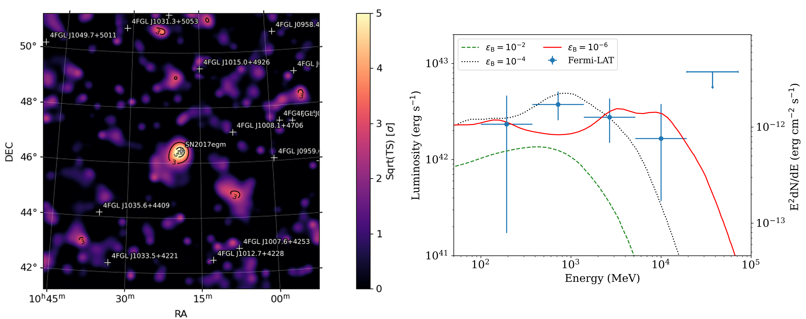<br />
图注：Top: Residual TS map in the 0.1--100 GeV energy range in the time interval defined by the Bayesian block algorithm (2017-07-05 to 2017-10-25). The plus symbols represent the sources from the 4FGL-DR4 catalog and the SN optical position. Bottom: $\gamma$-ray luminosity SED of SN 2017egm in the same time interval. The spectral predictions from the magnetar model are shown for different nebula magnetization parameter (see Sect. \(\ref{sect:magnetar_model}\) for more details).<br />
对应解读：对应“SN 2017egm 周围的 TS map 或残差图”和“GeV 能谱图”的重点查看项，以及关键图表导读中的图2、图4。<br />
入选理由：同一张图同时给出贝叶斯块时间窗内的残差 TS map 和 100 MeV--100 GeV SED，是验证探测是否与光学位置一致、附近 4FGL 源是否造成残差、以及幂律/磁星谱模型是否被能谱点支持的核心证据。它直接支撑 TS 显著性、定位可靠性和谱拟合三条主线。<br />
来源与置信度：\(arxiv_source\)；high；\(arxiv_source\) / aa58547-25corr.tex:figure[5]</p>
<p><strong>Fig03</strong><br />
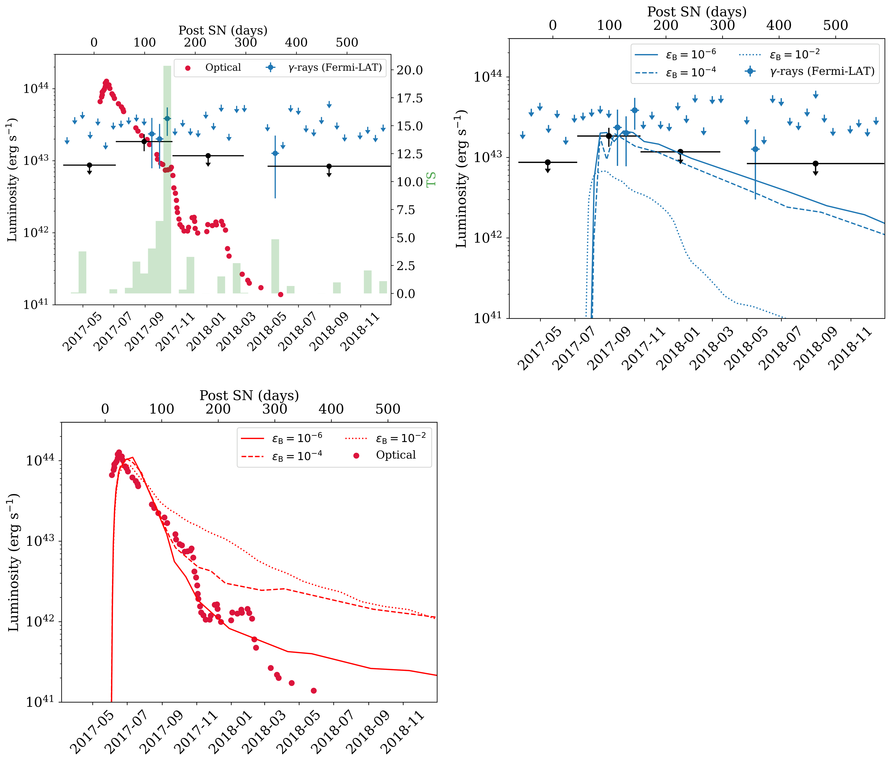<br />
图注：Left: Comparison of the optical bolometric luminosity\protect\footnotemark\ taken from \(\citet{Lin23}\) and the $\gamma$-ray 100 MeV-100 GeV luminosity (this work) for SN 2017egm along with the TS in each 15-day time bin and with larger time blocks presented in Sect. \(\ref{sec:refinedlc}\) in black. Middle and right: $\gamma$-ray and optical luminosity observations and predictions from the magnetar model tailored to SN 2017egm by \(\citet{Vurm21}\) for different nebula magnetization parameters (see Sect. \ref{sect:magnetar_model}). Hereafter the $T_{0}$ value is taken at the discovery date 23 of March 2017.<br />
对应解读：对应“不同时间窗下的 TS 或光变曲线”“多波段光变对比图”和关键图表导读中的图3、图5。<br />
入选理由：该图把 SN 2017egm 的光学 bolometric 光变、GeV 光度、15 天 bin 的 TS 以及更大时间块放在同一时间轴上，并叠加不同磁化参数的磁星模型，是判断 GeV 信号是否集中在爆发后约 50--160 天、以及 \(L_gamma\) 与 \(L_opt\) 是否达到同量级的最关键图。<br />
来源与置信度：\(arxiv_source\)；high；\(arxiv_source\) / aa58547-25corr.tex:figure[3]</p>
<p><strong>Fig08</strong><br />
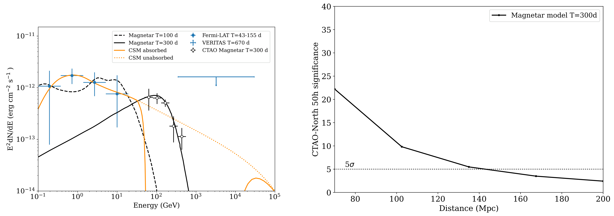<br />
图注：Top: Comparison of CSM and magnetar (magnetization $\varepsilon_{\rm B}=10^{-6}$) spectral models of SN 2017egm at a distance of 135 Mpc together with \(\textit{Fermi}-LAT\) (this work) and VERITAS \(\citep{Acharyya23}\) observations. In the CSM model, the predicted flux is shown with or without $\gamma-\gamma$ absorption (see Appendix \ref{sect:gg-abs}), highlighting the fact that no emission is expected above 50 GeV. A simulation of 50 hours of CTAO-North observations between 50 GeV and 10 TeV is also shown for the magnetar model (see Sect. \(\ref{sect:cta}\) for more details). For clarity only detection flux points (where TS$>$4) are shown and upper limits are omitted. Using the CTAO simulation shown above, below we display the significance of a SN 2017egm-like source at different distances in the magnetar model only.<br />
对应解读：对应“模型比较图”和“CTAO 模拟灵敏度图”，也支撑模型拟合段落中磁星与 CSM 的可区分性讨论。<br />
入选理由：该图直接比较 CSM 与磁星模型在高能谱段的预言，包含 Fermi-LAT、VERITAS 和 50 小时 CTAO-North 模拟，并显示探测显著性随距离变化。它最能支撑日报中关于 SN 2017egm-like 事件在约 140 Mpc 内可被 CTAO 检测、且 CSM 因 gamma-gamma 吸收难以在 TeV 能段被看见的结论。<br />
来源与置信度：\(arxiv_source\)；high；\(arxiv_source\) / aa58547-25corr.tex:figure[8]</p>
<p><strong>Fig07</strong><br />
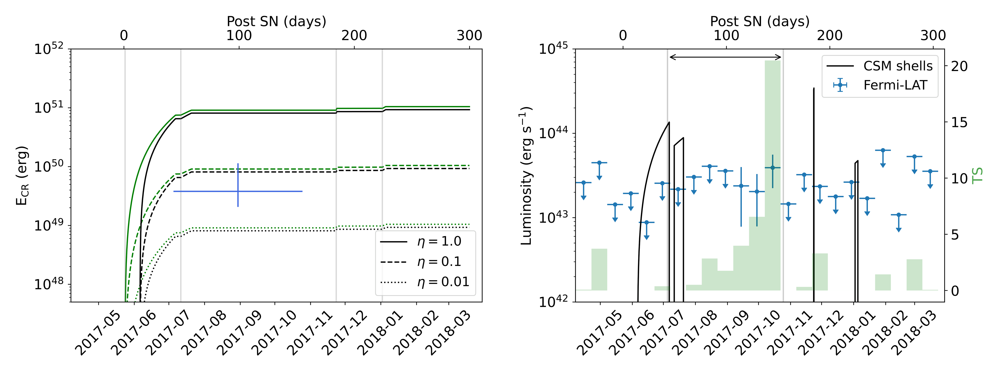<br />
图注：Left: Energy conversion into cosmic rays as a function of time for different $\eta$ values (Eq. \ref{eq:ECR}), and compared with the best fit obtained from \(\texttt{Naima}.\) Vertical lines represent the crossing times of the inner radius of each shell. Scenarios for $t_i=1$~d (green) and $t_{i}=t_{br}$ (black) are displayed, both assuming $E_{\rm{cutoff}}=1$~PeV. Right: $\gamma$-ray flux expected from the interaction of each shell ($\eta=0.05$) compared with the \(\textit{Fermi}-LAT\) flux (100 MeV -- 100 GeV). The arrow represents the Bayesian block interval of the emission peak, while the TS is shown as shaded green bars. Both panels display the relevant time interval for the CSM shell model.<br />
对应解读：对应“模型比较图”和模型拟合段落中星周物质壳相互作用模型的时间、通量与自洽性检验。<br />
入选理由：该图展示 CSM 壳层模型中宇宙线能量转换随时间变化，以及各壳层产生的 GeV 通量与 Fermi-LAT 测得通量、贝叶斯块时间窗和 TS 的对比。它比单纯的观测图更能说明 CSM 场景可以接近通量量级，但在正确时间产生可逃逸 GeV 光子的困难。<br />
来源与置信度：\(arxiv_source\)；high；\(arxiv_source\) / aa58547-25corr.tex:figure[7]</p>
<p><strong>Fig04</strong><br />
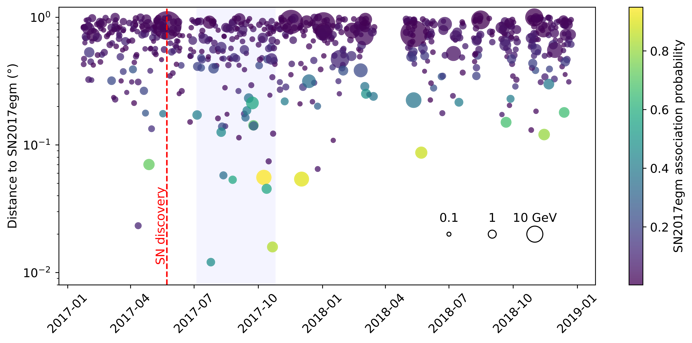<br />
图注：Photon angular distance to SN 2017egm optical position as a function of time. Using the best-fit model of the ROI, the probability that a given photon is associated with the SN is illustrated by colors, while the size indicates the photon energy. The $\gamma$-ray time interval defined by the Bayesian block algorithm is illustrated with the shaded area. Coverage limitations due to the failure of one of the solar array rotator drives on {\(\it\) Fermi} resulted in the loss of approximately 18 days of data in March and April 2018.<br />
对应解读：对应“不同时间窗下的 TS 或光变曲线”和模型拟合段落中关于光子是否集中在少数时间或少数高权重事件上的残差/稳健性检查。<br />
入选理由：该图以时间为横轴展示光子到 SN 2017egm 光学位置的角距离，并用颜色表示关联概率、点大小表示能量，同时标出贝叶斯块定义的伽马射线活动时间窗。它对判断信号是否由若干高概率光子在特定时间段内贡献、以及是否存在时间窗选择偏差非常有价值。<br />
来源与置信度：\(arxiv_source\)；high；\(arxiv_source\) / aa58547-25corr.tex:figure[4]</p>
<p><strong>Fig09</strong><br />
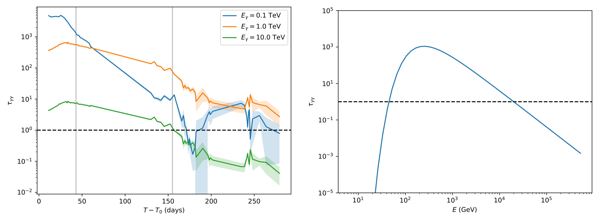<br />
图注：Top: Temporal evolution of $\tau_{\gamma \gamma}$ for photons of 0.1, 1, and 10 TeV. Vertical gray lines represent the Bayesian block interval identifying the LAT emission, while the horizontal dashed line ($\tau_{\gamma \gamma}=1$) represents the transition to a transparent medium ($\tau_{\gamma \gamma}\lesssim 1$). Shaded areas represent the error propagation from temperature and luminosity measurements in \(\cite{Zhu23}.\) Bottom: Absorption above 10 GeV, averaged over the Bayesian block time interval in Fig. \(\ref{fig:B_tautime}.\) The overall shape is a result of the peaked SN blackbody spectrum and the cross section~$\sigma_{\gamma \gamma}$.<br />
对应解读：对应“模型比较图”中要求检查 gamma-gamma 吸收处理前后差异，以及 CTAO 模拟段落中 TeV 可探测性的物理前提。<br />
入选理由：该图给出不同 TeV 能量光子的 gamma-gamma 光深随时间演化，并展示贝叶斯块时间窗内 10 GeV 以上吸收的能量依赖。它是理解为什么 CSM 模型在高能端被强吸收、以及 CTAO 结论为何依赖高能透明度的关键补充图。<br />
来源与置信度：\(arxiv_source\)；high；\(arxiv_source\) / aa58547-25corr.tex:figure[9]</p>
<h4 id="_11">强相关工作</h4>
<p>这篇工作与超亮超新星磁星模型的经典文献直接相连，也与星周物质相互作用解释形成对照。建议检索关键词包括 “superluminous supernova magnetar model”, “SN 2017egm central engine”, “magnetar wind nebula gamma rays supernova”, “SLSN circumstellar interaction gamma-ray”。核心脉络是：光学光变曾支持多种模型，而高能辐射提供了额外的透明度和非热粒子约束。</p>
<p>相似观测方面，应把它与 Fermi-LAT 对新星、相互作用超新星和其他暂现源的 GeV 探测或上限比较。新星和部分相互作用超新星中，\(L_\gamma/L_{\rm opt}\) 通常远低于本文报告的 SN 2017egm 比例，这正是作者认为单纯星周相互作用不自然的原因。相反观点可能强调 Fermi-LAT 弱源分析中的背景系统误差、事后时间窗选择和活动星系核污染，因此检索 “Fermi LAT transient likelihood trial factor”, “gamma-ray background systematic weak source” 也很重要。</p>
<p><strong>相似工作</strong>：<br />
- https://arxiv.org/abs/2605.29909<br />
- https://ui.adsabs.harvard.edu/</p>
<p><strong>基础理论 / 方法工作</strong>：<br />
- https://arxiv.org/abs/1004.3307<br />
- https://arxiv.org/abs/1010.5789<br />
- https://arxiv.org/abs/1209.0640</p>
<p><strong>相反观点 / 张力线索</strong>：<br />
- https://ui.adsabs.harvard.edu/</p>
</details>
<h3 id="2-jwsts-dusty-blue-boat-grb-221009a">2. JWST's Dusty Blue BOAT -- GRB 221009A</h3>
<ul>
<li>来源：arXiv / astro-ph.HE</li>
<li>链接：https://arxiv.org/abs/2605.29022v1</li>
<li>作者：Nguyen M. Khang, Gavin P. Lamb, Helena-M. S. Grabham, Conor M. B. Omand, Hamid Hamidani, Andrew J. Levan, Nial R. Tanvir, Valerio D'Elia</li>
<li>评分：novelty 7/10，importance 8/10，relevance 9/10，final 9.05/10</li>
<li>推荐理由：重新分析BOAT GRB 221009A的VLT与JWST余辉谱，约束消光、喷流环境和电子谱指数，对GRB余辉建模和极端爆发现象具有较高价值。</li>
</ul>
<p><strong>中文题目</strong>：JWST 看到的“尘埃遮蔽但本征偏蓝”的 BOAT：重新分析 GRB 221009A 余辉光谱</p>
<p><strong>做了什么</strong>：这篇论文重新分析了史上最亮伽马暴 GRB 221009A 的光学到中红外余辉谱，重点解决一个长期混乱的问题：沿银河系低纬视线的强尘埃消光到底把本征光谱“染红”了多少。作者联合使用爆发后约 0.5、4、10.5 天的 VLT X-Shooter 光谱，以及约 13.3 天的 JWST NIRSpec/MIRI 光谱，用单幂律、平滑折断幂律和跨历元双平滑折断幂律拟合。核心结论是，文献中光学谱指数和消光量差异很大，主要来自消光曲线与本征连续谱斜率之间的强退化；他们得到总视线消光约为 \(A_V=4.40\pm0.01\)，并推断本征连续谱相当偏蓝，谱指数约为 \(\beta=0.447\pm0.001\)。结合时间演化后，风介质模型虽在光谱上略占优但被光变曲线排斥；均匀介质只有在早期约 \(0.5\)--\(1.0\) 天发生喷流折断时才自洽。这意味着电子能谱指数约为 \(p=1.89<2\)，对标准激波加速图像构成压力。</p>
<p><strong>为什么重要</strong>：GRB 221009A 是极端明亮、极端近邻且观测资料异常丰富的长伽马暴，但它位于低银河纬度，前景消光很强，使许多关于余辉物理的推断都被尘埃校正牵着走。若 \(A_V\) 或光谱斜率 \(\beta\) 估错，后续关于电子指数 \(p\)、环境密度剖面、喷流结构、能量预算乃至超新星伴随成分的判断都会系统性偏移。这篇文章的重要性在于，它把 VLT 与 JWST 的宽波段光谱放到统一框架下，直接量化了“消光—本征斜率”退化，而不是只给出又一个最佳拟合值。</p>
<p><strong>理论 / 观测 / 仪器方法价值</strong>：对理论而言，论文把 GRB 221009A 的宽波段余辉解释推向一个比较苛刻的区域：偏硬的电子分布 \(p<2\)、早期喷流折断、窄而高能的喷流核心。对观测而言，它说明在强前景消光视线下，单靠光学谱段很难可靠恢复本征连续谱；近红外到中红外数据对打破退化非常关键。对方法而言，跨历元联合双平滑折断幂律拟合比单历元、单幂律校正更能约束冷却频率、谱折断与消光参数之间的耦合。</p>
<p><strong>为什么应该关注</strong>：如果你关心伽马暴余辉标准模型、相对论喷流结构、尘埃消光校正或 JWST 在高能暂现源中的作用，这篇都值得读。它提醒我们：最亮的事件不一定是最容易解释的事件；信噪比极高的数据若穿过复杂前景，系统误差会主导物理结论。GRB 221009A 常被当作检验极端喷流和粒子加速的标尺，而这篇论文正是在重定这个标尺的零点。</p>
<details class="paper-detail">
<summary>展开详细解读：文章讲解、背景、理论、重点章节、图表与相关工作</summary>
<h4 id="_12">文章详细讲解</h4>
<p>科学问题：GRB 221009A 被称为 BOAT，即“Brightest Of All Time”，其余辉亮度和多波段覆盖使它成为研究相对论喷流、外激波、粒子加速和宿主环境的独特样本。但它的视线接近银河平面，前景尘埃造成强烈消光，尤其在光学波段会把本征连续谱显著压低并变红。文献中对光学谱指数 \(\beta\) 和总消光 \(A_V\) 的估计分歧很大，导致同一组观测可被解释为不同的环境密度剖面、不同的冷却频率位置，甚至不同的电子加速效率。本文的核心问题不是“再测一次亮度”，而是问：在强消光条件下，GRB 221009A 的真实余辉谱到底有多蓝，谱折断在哪里，标准外激波模型是否还能自洽。</p>
<p>作者怎么做：论文重新处理并拟合爆发后约 0.5、4、10.5 天的 VLT X-Shooter 光谱，以及约 13.3 天的 JWST NIRSpec/MIRI 光谱。X-Shooter 提供从近紫外/光学到近红外的连续覆盖，JWST 则把约十几天后的光谱延伸到更长的近红外和中红外，从而避开光学强消光区并更好锚定本征谱形。作者分别尝试单幂律、平滑折断幂律，以及跨所有历元的双平滑折断幂律模型。关键做法是将消光量、本征谱指数和折断频率放在同一个联合拟合中，而不是先假定一个消光值再推断余辉物理。</p>
<p>关键结果：拟合显示光学波段的本征斜率与消光参数高度退化，足以解释此前文献给出的多组互相矛盾的 \(\beta\) 和 \(A_V\)。联合双平滑折断幂律给出总视线消光 \(A_V=4.40\pm0.01\)，并得到偏蓝的本征连续谱 \(\beta=0.447\pm0.001\)。这个 \(\beta\) 若解释为同步辐射低于冷却频率的谱段，通常对应电子能谱指数 \(p\simeq2\beta+1\)，即 \(p\approx1.89\)，低于经典强激波加速常见的 \(p\gtrsim2\)。光谱拟合本身对风介质略有偏好，但余辉光变曲线的时间衰减不支持风介质；均匀密度介质则需要在约 \(0.5\)--\(1.0\) 天发生早期喷流折断，才能同时匹配谱指数与时间衰减。</p>
<p>局限和下一步：这项分析的最大敏感点仍是消光曲线的形状、绝对通量标定、不同仪器之间的交叉标定，以及把复杂喷流结构近似为分段幂律谱的有效性。\(A_V=4.40\pm0.01\) 的统计误差很小，但真实系统误差可能大于形式误差，因为银河前景消光曲线、散射、谱缝损失和余辉时变都可能引入协方差。下一步应把光谱能量分布拟合与完整的多波段光变曲线、偏振、射电成像或甚长基线约束结合起来，使用结构化喷流的正向模型而不仅是经验折断幂律。同时，\(p<2\) 的结论需要与粒子加速模拟、磁化激波模型以及高能伽马射线约束一起检验。</p>
<h4 id="_13">背景知识</h4>
<p>GRB 221009A 是一次极端明亮的长伽马暴，红移较低，视向能量释放和余辉亮度都处在已知样本的尾端。它触发了从伽马射线、X 射线、光学、红外到射电的大规模观测，也被用来讨论超高能光子传播、洛伦兹不变性检验、尘埃散射环、喷流结构和伴随超新星。正因为它太亮，许多研究把它当作“理想实验室”；但它的低银河纬度又使它成为“强系统误差实验室”。</p>
<p>历史上，伽马暴余辉的基本解释是相对论喷流与外部介质相互作用产生外激波，同步辐射形成从射电到 X 射线的宽波段谱。若谱段和动力学阶段已知，光谱斜率 \(\beta\) 与时间衰减指数 \(\alpha\) 可以通过闭合关系反推出电子能谱指数 \(p\) 和环境类型，例如均匀星际介质或恒星风介质。问题在于这些闭合关系对输入的 \(\beta\) 非常敏感；当消光校正不确定时，理论判断很容易变成消光模型的投影。</p>
<p>GRB 221009A 的特殊难点是视线穿过大量银河尘埃。尘埃消光随波长变化，会在光学强烈压低短波通量，在近红外和中红外影响较小。因此，若只用光学到近红外的一小段数据，本征谱较蓝但消光较强，或本征谱较红但消光较弱，都可能给出类似的观测谱。这就是本文强调的“消光—斜率”退化。JWST 的价值在于提供长波长锚点，使本征连续谱的归一化和曲率更容易被分离出来。</p>
<p>为什么现在值得重新看：早期 BOAT 研究数量很多，但不同团队在消光、光谱指数、宿主贡献、超新星成分和余辉模型上采用的假设并不一致。随着 JWST NIRSpec/MIRI 光谱加入，数据覆盖从强消光的光学延展到受尘埃影响较小的红外，使重新统一拟合成为必要。常见误区包括：把高信噪比等同于低系统误差；把某一条消光曲线当成确定事实；把单历元谱指数直接代入闭合关系；以及忽略喷流折断会改变时间衰减而不一定显著改变瞬时谱形。</p>
<h4 id="_14">基础理论 / 方法脉络</h4>
<p>物理图像可以从外激波同步辐射开始。伽马暴中心引擎发射相对论喷流，喷流扫过外部介质并驱动前向激波，电子被加速成近似幂律分布，磁场被放大，电子在磁场中产生同步辐射。观测者看到的余辉谱通常可用若干特征频率分段描述，包括自吸收频率、注入频率和冷却频率；在光学到 X 射线范围，常见的是某一段或跨过冷却折断的幂律谱。</p>
<p>本文关注的核心观测量是通量密度 \(F_\nu\)、光谱指数 \(\beta\)、时间衰减指数 \(\alpha\)、总消光 \(A_V\) 以及可能的谱折断频率。约定通常是 \(F_\nu\propto t^{-\alpha}\nu^{-\beta}\)。如果观测频段位于注入频率和冷却频率之间，慢冷却同步辐射给出 \(\beta=(p-1)/2\)；若在冷却频率之上，则 \(\beta=p/2\)。因此 \(\beta\) 的微小系统偏差会直接改变 \(p\) 的推断。</p>
<p>尘埃消光把本征通量变成观测通量。光学波段的消光校正大，且依赖消光曲线形状，例如银河型、大小麦哲伦云型或更复杂的视线混合。对于 GRB 221009A，这种效应不是小修正，而是决定本征谱是否偏蓝的关键。红外数据的重要性在于，消光在长波端较弱，可作为较稳健的归一化锚点；但 JWST 与地面光谱之间仍要处理时变、绝对标定和不同孔径/谱缝响应。</p>
<p>模型假设方面，论文使用经验的单幂律、平滑折断幂律和双平滑折断幂律来描述连续谱。这类模型并不等价于完整流体动力学喷流模型，但能有效捕捉同步辐射谱在特征频率附近的弯折。双平滑折断幂律允许存在两个转折，例如由冷却频率、注入频率或不同谱段连接造成的曲率。常见退化包括 \(A_V\) 与 \(\beta\) 的退化、折断频率与折断平滑度的退化、不同历元通量归一化与时间衰减的退化，以及风介质和均匀介质在单历元谱形上的相似性。</p>
<p>观测和统计逻辑上，读者应把这篇看成“用宽波段连续谱约束消光和同步辐射参数”的工作。单独的谱拟合可以告诉你哪种谱形在某个时刻更像数据，但环境类型还必须通过时间演化检验。也就是说，光谱偏好的风介质若不能产生正确的光变衰减，就不是全局上可接受的解；相反，均匀介质若需要早期喷流折断，也必须在多波段光变中留下相应迹象。</p>
<h4 id="_15">公式与推导</h4>
<p>第一步是建立余辉的经验可观测量。通常把本征通量密度写成时间和频率的幂律：</p>
<div class="math-display">\[F_{\nu,{\rm int}}(t)=F_0\left(\frac{t}{t_0}\right)^{-\alpha}\left(\frac{\nu}{\nu_0}\right)^{-\beta}.\]</div>
<p>这里 \(F_0\) 是参考时刻 \(t_0\) 和参考频率 \(\nu_0\) 的通量密度，\(\alpha\) 是时间衰减指数，\(\beta\) 是光谱指数。这个式子是最小模型，适用于单一同步辐射谱段且没有谱折断穿过观测频带的情形。</p>
<p>第二步加入尘埃消光。观测通量与本征通量的关系为：</p>
<div class="math-display">\[F_{\nu,{\rm obs}}=F_{\nu,{\rm int}}10^{-0.4A_\lambda},\qquad A_\lambda=A_V k(\lambda).\]</div>
<p>其中 \(A_\lambda\) 是波长 \(\lambda\) 处的消光，\(A_V\) 是 \(V\) 波段消光，\(k(\lambda)\) 是归一化消光曲线。这个式子说明，当 \(k(\lambda)\) 在光学快速变化时，改变 \(A_V\) 可以模仿改变 \(\beta\) 造成的颜色变化。</p>
<p>第三步可直接看出消光和光谱斜率的退化。对通量取对数，有：</p>
<div class="math-display">\[\log_{10}F_{\nu,{\rm obs}}=C-\beta\log_{10}\nu-0.4A_V k(\lambda),\]</div>
<p>其中 \(C\) 吸收了归一化和时间项。若在有限波长范围内 \(k(\lambda)\) 近似可由 \(a+b\log_{10}\nu\) 表示，则 \(A_V b\) 会与 \(\beta\) 出现在同一个斜率项中，这就是本文所强调的主要退化来源。</p>
<p>第四步，用平滑折断幂律描述单个谱折断。常用形式可写为：</p>
<div class="math-display">\[F_\nu=F_b\left[\left(\frac{\nu}{\nu_b}\right)^{s\beta_1}+\left(\frac{\nu}{\nu_b}\right)^{s\beta_2}\right]^{-1/s}.\]</div>
<p>这里 \(F_b\) 是折断频率 \(\nu_b\) 附近的归一化，\(\beta_1\) 和 \(\beta_2\) 是折断两侧的谱指数，\(s\) 控制折断平滑度。符号约定可因论文实现略有差别，但物理含义都是用连续函数替代尖锐折线，避免在真实宽带谱中引入不物理的不连续。</p>
<p>第五步，双平滑折断幂律可以理解为在两个特征频率处连接三个谱段：</p>
<div class="math-display">\[F_\nu=F_0\,B(\nu;\nu_{b,1},\beta_1,\beta_2,s_1)\,B(\nu;\nu_{b,2},0,\beta_3-\beta_2,s_2),\]</div>
<p>其中 \(B\) 表示一个归一化的平滑折断因子，\(\nu_{b,1}\) 和 \(\nu_{b,2}\) 是两个折断频率，\(s_1\) 和 \(s_2\) 是平滑度。这个表达式强调论文的联合拟合思想：多个历元共享某些物理斜率或演化规律，同时允许折断位置随时间移动。</p>
<p>第六步，把谱指数和电子能谱联系起来。若电子分布为：</p>
<div class="math-display">\[N(\gamma_e)d\gamma_e=K\gamma_e^{-p}d\gamma_e,\]</div>
<p>其中 \(\gamma_e\) 是电子洛伦兹因子，\(K\) 是归一化，\(p\) 是电子能谱指数，则慢冷却同步辐射在 \(\nu_m<\nu<\nu_c\) 的谱指数满足：</p>
<div class="math-display">\[\beta=\frac{p-1}{2},\qquad p=2\beta+1.\]</div>
<p>代入本文偏好的 \(\beta\approx0.447\)，得到 \(p\approx1.894\)，这就是 \(p<2\) 结论的基本来源。</p>
<p>第七步，若观测频率高于冷却频率，关系变为：</p>
<div class="math-display">\[\beta=\frac{p}{2},\qquad p=2\beta.\]</div>
<p>这会给出更小的 \(p\)，通常更难与标准余辉闭合关系同时匹配。因此判断光学到 X 射线处在冷却频率哪一侧，是解释 \(p\) 和环境类型的关键。</p>
<p>第八步，闭合关系把 \(\alpha\)、\(\beta\) 与环境相连。以绝热、球对称近似、慢冷却、均匀介质且 \(\nu_m<\nu<\nu_c\) 为例：</p>
<div class="math-display">\[\alpha=\frac{3(p-1)}{4}=\frac{3\beta}{2}.\]</div>
<p>若是风介质同一谱段，则常见关系为：</p>
<div class="math-display">\[\alpha=\frac{3p-1}{4}=\frac{3\beta+1}{2}.\]</div>
<p>这两式说明同一个 \(\beta\) 会预言不同的时间衰减；本文称风介质可被光变曲线排斥，正是因为光谱拟合偏好不能通过 \(\alpha\) 检验。</p>
<p>第九步，喷流折断后衰减会变陡。一个经验判断是：</p>
<div class="math-display">\[\alpha_{\rm post}\simeq p\]</div>
<p>或至少显著大于折断前的球对称预期，具体取决于侧向扩张、结构化喷流和观测角。若 GRB 221009A 在 \(t_j\sim0.5\)--\(1.0\) 天发生早期喷流折断，那么后续光变可与均匀介质和 \(p\approx1.89\) 更好兼容。</p>
<p>第十步，拟合统计量通常来自带协方差或误差项的似然。若近似高斯误差，可写成：</p>
<div class="math-display">\[\ln\mathcal{L}=-\frac{1}{2}\sum_i\left[\frac{F_i-F_{\nu,{\rm model}}(t_i,\nu_i)}{\sigma_i}\right]^2-\sum_i\ln(\sqrt{2\pi}\sigma_i).\]</div>
<p>这里 \(F_i\) 是观测通量点，\(\sigma_i\) 是统计和可能的系统误差，\(F_{\nu,{\rm model}}\) 包括本征谱、时间演化和消光。这个式子让读者检查：最佳拟合是否由少数高信噪比光学点支配，红外点是否真正打破了 \(A_V\) 与 \(\beta\) 的退化。</p>
<h4 id="_16">模型拟合 / 应用方法</h4>
<p>本文的拟合对象是多个历元的光谱能量分布，而不是单一滤光片光变。基本拟合量包括各历元的归一化、本征谱指数 \(\beta\)、一个或两个谱折断频率、折断平滑度、总视线消光 \(A_V\)，以及可能与环境解释相关的时间衰减指数 \(\alpha\)。单幂律模型用于测试是否需要谱曲率；平滑折断幂律用于描述一个特征频率穿过观测波段；双平滑折断幂律则用于跨历元联合拟合更复杂但仍可控的谱形。</p>
<p>似然层面，最自然的做法是最小化模型通量与观测光谱通量之间的残差，必要时对不同仪器加入交叉标定因子或系统误差地板。由于 X-Shooter 与 JWST 的观测时间并不相同，模型需要把余辉按时间演化缩放到可比较框架，或者在联合拟合中允许各历元归一化按 \(t^{-\alpha}\) 变化。读者应关注论文是否把光谱点的相关误差、谱缝损失、大气校正、主星或宿主背景、以及中红外热背景等因素纳入误差预算。</p>
<p>参数退化是本文的中心。\(A_V\) 增大可使校正后的本征光谱变蓝，\(A_V\) 减小则可由较红的本征谱补偿；在光学范围内这种退化特别强。折断频率若落在光学/近红外附近，也会与消光曲线曲率混淆：一个真实的同步辐射折断可能被误判为消光曲线不合适，反之亦然。折断平滑度 \(s\) 也有类似问题，较平滑的折断会在宽波段上表现为连续曲率，容易与尘埃校正残差耦合。</p>
<p>模型诊断应重点看残差随波长是否有系统趋势，而不仅是总 \(\chi^2\) 或后验峰值。若短波端残差同号，可能意味着消光曲线形状不对；若 JWST 长波端残差偏离，可能说明单一同步辐射分量不足，或存在超新星、宿主、尘埃热辐射等额外成分；若不同历元需要不一致的 \(\beta\)，则可能是谱折断演化、标定差异或模型过简化。对于 BOAT 这样极高信噪比事件，形式统计误差很容易小到不真实，系统误差地板反而决定结论可信度。</p>
<p>实际应用上，这类拟合给出的 \(\beta\) 和 \(A_V\) 会进入后续所有物理推断：电子指数 \(p\)、喷流折断时间 \(t_j\)、开角、校正后能量、环境密度剖面和超新星光度。本文的结果提示，若不把消光和谱形联合拟合，单独引用某个光学颜色或某个消光图值可能会导致错误的闭合关系判断。模型也可能失败：真实喷流可能是角向结构化的，多分量喷流可能贡献不同谱段，微物理参数可能随时间演化，这些都会使经验分段幂律只是有效描述而非唯一物理解。</p>
<h4 id="_17">重点章节 / 结果段落怎么读</h4>
<ol>
<li>
<p>数据与样本部分应先读。这里会说明 VLT X-Shooter 的三个历元和 JWST NIRSpec/MIRI 的一个历元如何选取、降噪、拼接和标定。读者要特别关注各光谱的时间、波长覆盖、绝对通量校准方法，以及是否移除了强吸收线、 telluric 残差或仪器边缘波段。</p>
</li>
<li>
<p>光谱模型部分是全文核心。论文比较单幂律、平滑折断幂律和联合双平滑折断幂律。读者应看清每个模型中哪些参数跨历元共享，哪些参数允许随时间变；尤其要注意 \(A_V\)、\(\beta\)、折断频率和平滑度的先验或固定假设，因为这些决定了退化方向。</p>
</li>
<li>
<p>消光—谱指数退化结果部分最值得细读。这里通常会展示不同 \(A_V\) 下本征谱斜率如何变化，或展示参数置信区间的长条形相关结构。读者要问：JWST 中红外点到底把后验压窄了多少？光学点是否仍然主导了最小残差？采用不同消光曲线时结论是否稳健？</p>
</li>
<li>
<p>物理解释部分把拟合参数转化为外激波模型。这里应重点看 \(\beta\) 与 \(\alpha\) 的闭合关系检验，以及风介质和均匀介质的比较。论文称风介质虽在谱拟合上略优但被时间演化排斥，均匀介质需要早期喷流折断；这部分是从经验拟合走向物理结论的关键桥梁。</p>
</li>
<li>
<p>讨论和稳健性检验部分用于判断结论有多硬。读者应寻找作者如何处理系统误差、不同消光曲线、可能的超新星或宿主污染、仪器交叉标定，以及 \(p<2\) 对粒子加速理论的含义。如果附录给出不同模型的残差、参数表或后验角图，应优先检查。</p>
</li>
</ol>
<h4 id="_18">建议重点查看的图表</h4>
<ol>
<li>
<p>多历元观测光谱与最佳拟合谱形：看横轴波长或频率、纵轴通量密度，比较 VLT 和 JWST 数据在拼接处是否连续，模型在光学短波端和中红外长波端是否同时通过数据。</p>
</li>
<li>
<p>消光校正前后的光谱能量分布：重点看强消光校正如何把观测上偏红的谱变成本征偏蓝的谱，以及不同 \(A_V\) 假设下曲线的分离程度。</p>
</li>
<li>
<p>\(A_V\) 与 \(\beta\) 的置信区间或后验角图：这是理解文献分歧的关键图。应检查后验是否呈明显斜长相关，\(A_V=4.40\) 附近的窄误差是否只是统计误差。</p>
</li>
<li>
<p>单幂律、平滑折断幂律和双平滑折断幂律的模型比较表：看拟合优度、信息准则或残差改善是否足以支持更复杂模型，而不是过拟合高信噪比细节。</p>
</li>
<li>
<p>光变曲线与闭合关系诊断：看不同波段的时间衰减指数 \(\alpha\)，以及风介质、均匀介质、喷流折断后模型线是否能同时匹配光学、X 射线和可能的射电数据。</p>
</li>
<li>
<p>折断频率随时间演化图：若论文给出，应检查折断频率移动方向是否符合冷却频率或注入频率的理论标度，以及误差条是否允许多种解释。</p>
</li>
<li>
<p>残差随波长分布：这是识别消光曲线不匹配和仪器系统误差的最佳诊断。短波端连续偏差、中红外端翘起或不同仪器段的阶跃都比总 \(\chi^2\) 更有信息量。</p>
</li>
</ol>
<h4 id="_19">关键图表逐图导读</h4>
<p>图 1：建议把它当作数据地图来读。横轴通常是观测波长或频率，纵轴是通量密度或经过缩放的通量。数据点/光谱线来自不同历元的 VLT X-Shooter 和 JWST NIRSpec/MIRI，模型线可能给出单幂律或折断幂律拟合。主要结论应是宽波段覆盖让红外端成为本征谱锚点。读图陷阱是不同历元的通量可能经过时间缩放，不能把所有垂直差异都理解为谱形差异。</p>
<p>图 2：若展示消光校正效果，横轴为波长或频率，纵轴为消光校正后的通量。模型线之间的差异体现不同 \(A_V\) 或不同消光曲线的影响。应重点看光学短波端校正幅度有多大，以及近红外/中红外是否仍约束同一条平滑连续谱。陷阱是校正后的“蓝谱”不是直接观测事实，而是模型和消光假设共同推出的结果。</p>
<p>图 3：后验角图或 \(A_V\)-\(\beta\) 置信图最关键。横轴可能是 \(A_V\)，纵轴可能是 \(\beta\)，等高线表示 \(1\sigma\)、\(2\sigma\) 或更高置信区域。若等高线狭长倾斜，就说明两者强相关。主要结论是文献分歧可由沿这条退化方向选择不同假设解释。读图陷阱是不要只看边缘化的一维误差；二维相关结构才是物理不确定性的来源。</p>
<p>图 4：模型比较或残差图应看横轴波长、纵轴标准化残差。单幂律若在某些波段呈系统性正负摆动，说明需要谱折断或更合适的消光曲线。双平滑折断幂律若显著减少长波和短波残差，才支持更复杂谱形。陷阱是高信噪比光谱中很小的标定误差也会形成统计上显著但物理上未必重要的残差。</p>
<p>图 5：光变曲线闭合关系图通常以时间为横轴、通量或归一化通量为纵轴，叠加风介质、均匀介质和喷流折断模型线。读者应看模型是否同时穿过多个波段，而不是只拟合光学。主要结论应是风介质的时间衰减不合适，均匀介质需要早期 \(t_j\sim0.5\)--\(1.0\) 天喷流折断。陷阱是早期数据可能受反向激波、提示相污染或能量注入影响。</p>
<p>图 6：若有电子指数或闭合关系汇总图，坐标可能是 \(\alpha\) 对 \(\beta\) 或 \(p\) 对模型类别。理论线代表不同环境和谱段，观测置信区间显示本文拟合值。主要结论是 \(\beta\approx0.447\) 对应偏硬 \(p\approx1.89\)，标准 \(p>2\) 图像面临压力。读图陷阱是闭合关系依赖假设，包括绝热演化、固定微物理参数和单一前向激波。</p>
<h4 id="_20">论文原图 / 可嵌入图片</h4>
<p><strong>Fig05</strong><br />
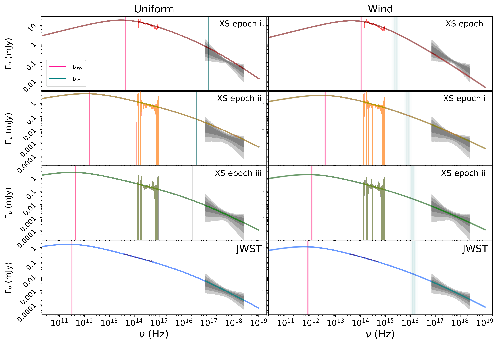<br />
图注：The joint, double-broken power-law fit to all spectral data considered. Each panel shows 400 randomised model draws and the extinction-removed spectral data profiles. The axis is extended beyond the range of the fits to show the inferred X-ray spectral slope. The grey butterflies indicate the XRT SEDs at the nearest time to the individual epochs. \(\textbf{Left}\): The panels show the results for a uniform interstellar medium, using the appropriate smoothness parameters for the uniform case \(\citep\)[from][]{granot2002} and a cooling break that evolves with time as $\nu_c \propto t^{-1/2}$. The spectral index for $\nu_m<\nu<\nu_c$ is $\beta=0.45$, with a total extinction, $A_V=4.4$ and a reddening of $E(B-V) = 1.31$, while a broad prior was used for the possible $\nu_m$ (pink vertical line), we constrained $\nu_c$ (teal vertical line) to be less than 1 keV in the first epoch -- motivated by the highest evidence fits to individual epochs using a single of smoothly broken power-law model. This ensures consistency with the observed X-ray spectral index, $\beta_X\sim 0.9$ (note that leaving $\nu_c$ unconstrained resulted in a best fit value for the cooling break in the GeV energy range and an inferred $\beta_X\sim0.44$, inconsistent with observations during the time frame considered here). \(\textbf{Right}\): The panels show the results for a wind medium defined as $n(r) \propto r^{-2}$. Here the cooling frequency evolves as $\nu_c\propto t^{1/2}$ and a restricted range on the $\nu_c$ prior is not required. Spectral index in $\nu_m<\nu<\nu_c$, the total extinction, and reddening are $\beta=0.42$, $A_V=4.33\pm0.01$, and $E(B-V)=1.28$ and are consistent with, although marginally smaller, than the values for the uniform medium case.<br />
对应解读：对应“多历元观测光谱与最佳拟合谱形”“消光校正前后的光谱能量分布”以及模型拟合中联合双平滑折断幂律、均匀介质/风介质比较的核心段落。<br />
入选理由：这张图直接展示所有历元光谱数据的联合 DSBPL 拟合、消光校正后的谱形、随机模型抽样、XRT SED 约束以及均匀介质和风介质两种情形，是支撑 \(A_V\)≈4.4、β≈0.45、冷却频率位置和介质判断的最核心证据。相比单独原始光谱或单参数图，它同时连接了宽波段谱形、X 射线斜率和物理模型。<br />
来源与置信度：\(arxiv_source\)；high；\(arxiv_source\) / ms.tex:figure[5]</p>
<p><strong>Fig03</strong><br />
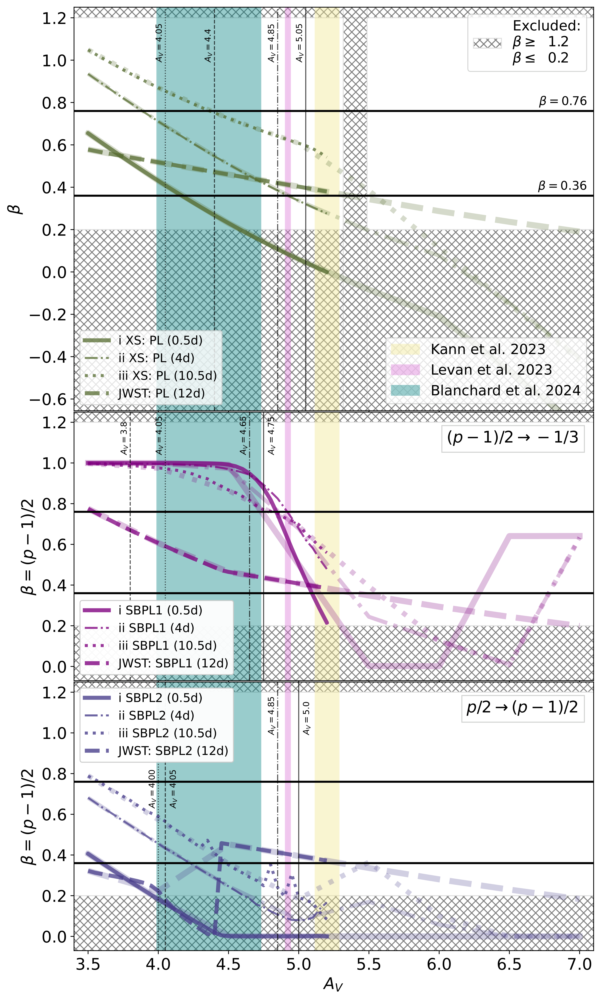<br />
图注：The power-law, and smoothly broken power-law fits to the 0.5, 4.0, and 10.5 day X-Shooter and the 12 day JWST spectra where $A_V$ is fixed, and $E(B-V)$ fit in the range $0.9$ to $2.2$ based on the observed spectra at 0.5 days. For the smoothly broken power-law cases, the y-axis refers to $\beta = (p-1)/2$. The shaded regions indicate the various estimates for the dominant Milky-Way line-of-sight extinction from afterglow analysis \(\citep{kann2023, levan2023, blanchard2024}.\) The vertical lines are data-preferred values of $A_V$ inferred from Figure \(\ref{fig:log_e}\) and are styled accordingly to their epoch's formatting. {\(\bf\) Top; middle; bottom:} The three rows show the single power law, the first SBPL (Eq.\,\ref{eq:low}), and the second SBPL (Eq.\,\ref{eq:high}) respectively. The grey hashed area indicates spectral indices that are outside of the usual fading afterglow phase, $0.2\leq\beta\leq1.2$ \(\citep{kann2010}.\)<br />
对应解读：对应“消光校正前后的光谱能量分布”和“Ａ_V 与 β 的置信区间或后验角图”相关解读，尤其是参数退化与文献分歧来源。<br />
入选理由：虽然不是标准角图，但它系统展示不同固定 \(A_V\) 下单幂律和两类平滑折断幂律得到的 β 变化，并叠加文献消光估计范围与 Figure 2 推得的优选 \(A_V\) 竖线。它最直接说明 \(A_V\) 假设如何驱动 β 推断，是理解强消光—本征谱指数退化的关键图。<br />
来源与置信度：\(arxiv_source\)；high；\(arxiv_source\) / ms.tex:figure[3]</p>
<p><strong>Fig06</strong><br />
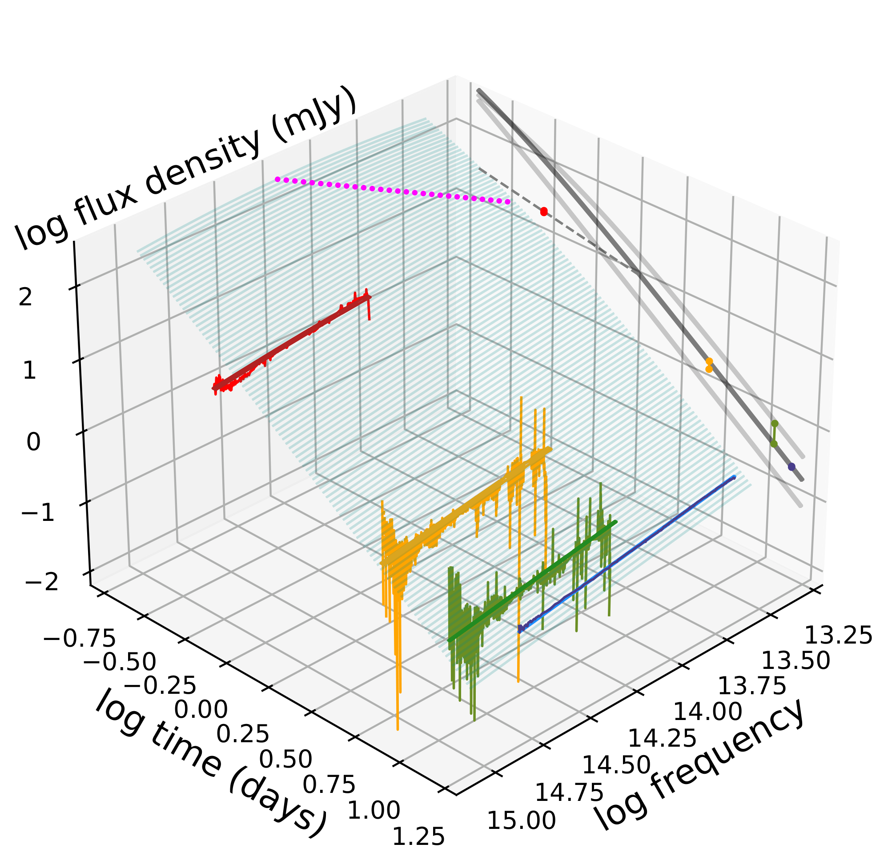<br />
图注：Three dimensional frequency (x-axis), time (y-axis) and flux density (z-axis) plot that shows the 4 epochs (red -- 0.5 days, orange - 4.5 days, green - 10.5 days, and blue - 13.2 days) of spectroscopy used in this work. The model fit spectra using the double-smoothly-broken power-law (DSBPL), and the inferred temporal and spectral evolution shown as a dark blue-grey surface. The location of the synchrotron peak frequency is shown with magenta dots, and the light curve at $\sim 1.6\times 10^{14}$\,Hz is shown on the y-z surface as a dark grey line, with the limits of the surface, at $3.2\times10^{13}$ and $10^{15}$ Hz shown for reference. The coloured points on the y-z plain indicate the projection of the data at $\sim 1.6\times10^{14}$ Hz. The black dashed line indicates a pre-jet-break evolution that would include the 0.5 day flux density. A break at about $\sim 0.6$ days was identified at optical \(\citep\)[see e.g.,][]{shrestha2023} and X-ray at $\sim0.9$ days \(\citep{williams_maia2023}.\)<br />
对应解读：对应“光变曲线与闭合关系诊断”以及详细解读中均匀介质需要早期 \(t_j\)≈0.5–1.0 天喷流折断的结论。<br />
入选理由：该图把频率、时间和通量密度放在三维空间中展示四个光谱历元、DSBPL 演化面、同步峰频率以及约 1.6×10^14 Hz 光变曲线，并标出早期喷流折断相关演化。它是把光谱拟合结果与时间衰减、喷流折断解释连接起来的最佳候选图。<br />
来源与置信度：\(arxiv_source\)；high；\(arxiv_source\) / ms.tex:figure[6]</p>
<p><strong>Fig04</strong><br />
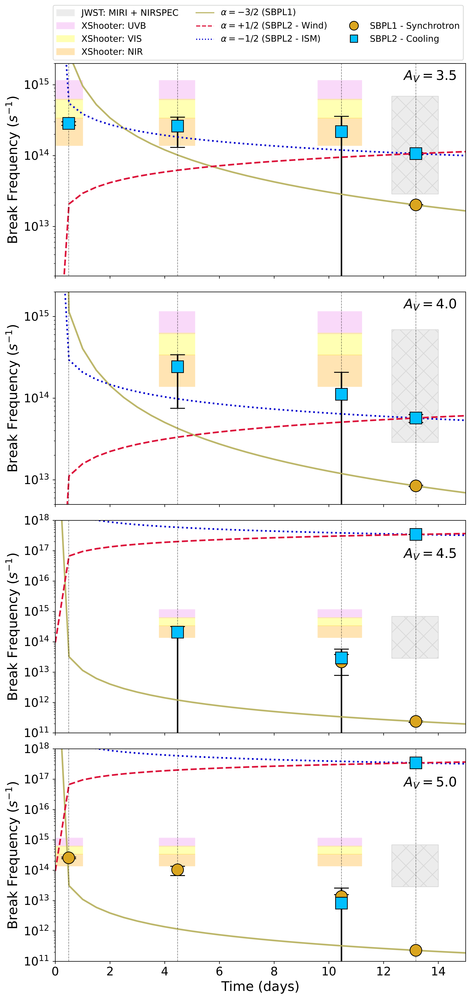<br />
图注：The break frequency evolutions of the 0.5, 4.0, and 10.5 day X-Shooter and the 12 day JWST spectra. These specific values represent the potentially viable options that were obtained via Figure~\(\ref{fig:XS123},\) with the extinctions of $A_v = 3.5, 4.0, 4.5,$ \&amp; $5.0$ split into four panels arranged vertically in their respective order. The frequency coverage of each instruments are layered in the background to each epoch to demonstrate whether the data is within the means of observations. Their break frequencies are obtained via fittings of two different smoothly-broken power law (SBPL) models, a synchrotron and a cooling break model. Their selections are made based on whether their electron index, $\beta$, lies within the expected physical range of $0.20 \lesssim \beta \lesssim 0.90$. Their time evolutions are extrapolated using the 12-day JWST fitted spectra as the anchor point, and are based on their associated SBPL models, with $\nu_b \propto t^{\alpha}$, and $\alpha = -3/2; -1/2; +1/2$, corresponding to SBPL1, SBPL2 (uniform ISM) \&amp; SBPL2 (wind-rich), respectively.<br />
对应解读：对应“折断频率随时间演化图”的建议重点查看项，以及模型拟合中谱折断频率与环境解释的讨论。<br />
入选理由：这张图直接给出不同 \(A_V\) 假设下多个历元的折断频率演化，并比较同步辐射折断、均匀 ISM 冷却折断和风介质冷却折断的时间标度。它能检验折断频率移动方向是否符合理论预期，也能显示哪些方案落在仪器覆盖范围内。<br />
来源与置信度：\(arxiv_source\)；high；\(arxiv_source\) / ms.tex:figure[4]</p>
<p><strong>Fig02</strong><br />
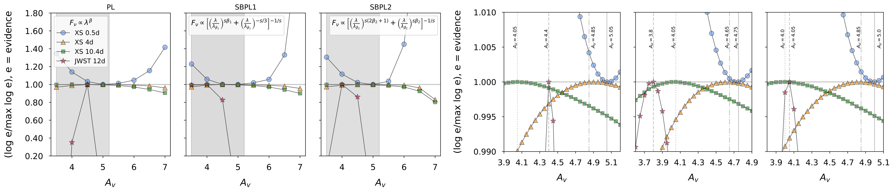<br />
图注：The ratio of the Bayesian log evidence vs the maximum log evidence for each of the spectral models, power-law, and the two smoothly broken power laws where the ratio of the models evidence with the maximum model evidence $\rightarrow 1$, then this value of $A_V$ is preferred by the data. \(\textbf{Top panel:}\) The range of $A_V$ goes from 3.5 - 7.0 in 0.5 intervals. The gray shaded band is the approximate area where all four datasets have a maximum log evidence ratio of 1. \(\textbf{Bottom panel:}\) Zoomed in version from the gray shaded band of the above panel, looking at an $A_V$ range from 3.50 - 5.20 in 0.05 intervals. This allows us to see more clearly where the evidence ratios converge to 1 across the datasets, which is depicted via the gray vertical lines.<br />
对应解读：对应“单幂律、平滑折断幂律和双平滑折断幂律的模型比较表”以及模型拟合中 \(A_V\) 优选值和 Bayesian evidence 诊断。<br />
入选理由：该图用 Bayesian log evidence ratio 随 \(A_V\) 的变化比较不同谱模型，并标出各数据集共同偏好的 \(A_V\) 区间，是支持 \(A_V\)≈4.4 附近选择和模型比较的直接统计证据。它比纯文字表述更清楚地显示不同历元证据峰值是否一致。<br />
来源与置信度：\(arxiv_source\)；high；\(arxiv_source\) / ms.tex:figure[2]</p>
<p><strong>Fig07</strong><br />
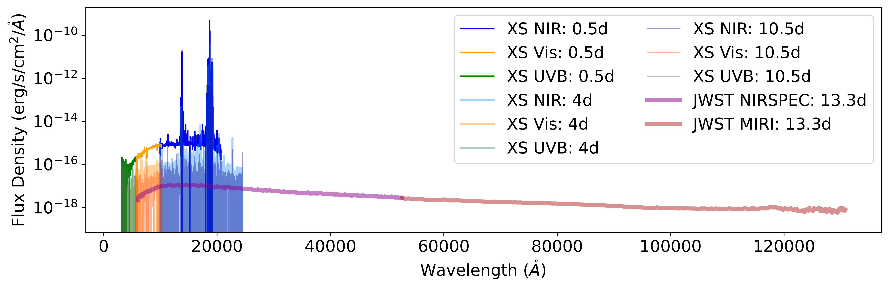<br />
图注：Afterglow spectral data from the three channels of X-Shooter; NIR, visible, and UV-B and the JWST NIRSPEC and MIRI data at 13.3 days.<br />
对应解读：对应“多历元观测光谱与最佳拟合谱形”中把原始 VLT X-Shooter 与 JWST NIRSpec/MIRI 宽波段覆盖作为数据地图来读的部分。<br />
入选理由：这张图展示 X-Shooter 三个通道和 JWST NIRSpec/MIRI 的实际光谱数据，是理解数据覆盖范围、仪器拼接和红外端如何锚定本征谱的基础图。虽然模型诊断信息少于 Fig05，但适合作为读者进入论文数据结构的入口。<br />
来源与置信度：\(arxiv_source\)；high；\(arxiv_source\) / ms.tex:figure[7]</p>
<h4 id="_21">强相关工作</h4>
<p>这篇工作应放在 GRB 221009A 的多波段余辉和尘埃研究脉络中理解。已有大量论文讨论 BOAT 的 prompt 辐射、TeV 光子、X 射线尘埃散射环、射电余辉、喷流结构和伴随超新星。与这些工作相比，本文更聚焦于光学到中红外连续谱的消光校正，并指出此前关于 \(\beta\) 和 \(A_V\) 的分歧不是简单测量误差，而是强前景消光下模型退化的自然后果。建议检索关键词包括“GRB 221009A afterglow extinction”，“GRB 221009A JWST NIRSpec MIRI”，“BOAT afterglow spectral index”，“GRB 221009A jet break”。</p>
<p>理论上，本文与经典伽马暴余辉闭合关系、同步辐射外激波模型和粒子加速理论直接相连。相反或有张力的观点主要来自两类：一类研究可能偏好风介质或不同消光值，另一类研究可能通过结构化喷流、多分量喷流或能量注入避免早期喷流折断和 \(p<2\) 的结论。要比较这些观点，应检索“gamma-ray burst afterglow closure relations”，“structured jet GRB 221009A”，“hard electron index GRB afterglow”，“particle acceleration \(p<2\) relativistic shock”。相关链接只列出可以确信的公开入口；更具体的相互矛盾论文建议通过 arXiv 和 NASA ADS 以上述关键词检索。</p>
<p><strong>相似工作</strong>：<br />
- https://arxiv.org/abs/2605.29022<br />
- https://ui.adsabs.harvard.edu/search/q=GRB%20221009A%20afterglow%20extinction<br />
- https://ui.adsabs.harvard.edu/search/q=GRB%20221009A%20JWST</p>
<p><strong>基础理论 / 方法工作</strong>：<br />
- https://ui.adsabs.harvard.edu/search/q=gamma-ray%20burst%20afterglow%20closure%20relations<br />
- https://ui.adsabs.harvard.edu/search/q=Sari%20Piran%20Narayan%201998%20afterglow<br />
- https://ui.adsabs.harvard.edu/search/q=Granot%20Sari%202002%20afterglow%20spectra</p>
<p><strong>相反观点 / 张力线索</strong>：<br />
- https://ui.adsabs.harvard.edu/search/q=GRB%20221009A%20wind%20medium%20afterglow<br />
- https://ui.adsabs.harvard.edu/search/q=GRB%20221009A%20structured%20jet%20afterglow<br />
- https://ui.adsabs.harvard.edu/search/q=GRB%20afterglow%20electron%20index%20p%20less%20than%202</p>
</details>
<h3 id="3-the-impact-of-the-new-astro_math_1463fe-decay-rates-on-astro_math_1464fe-and-astro_math_1465al-nucleosynthesis-in-massive-stars">3. The Impact of the New $^{59}$Fe Decay Rates on $^{60}$Fe and $^{26}$Al Nucleosynthesis in Massive Stars</h3>
<ul>
<li>来源：arXiv / astro-ph.HE</li>
<li>链接：https://arxiv.org/abs/2605.29381v1</li>
<li>作者：Bingyang Tan, Wenyu Xin, Ruizheng Jiang, Gang Zhao, Koh Takahashi</li>
<li>评分：novelty 8/10，importance 8/10，relevance 8/10，final 9.00/10</li>
<li>推荐理由：更新59Fe衰变率后可解释INTEGRAL/SPI观测的60Fe/26Al伽马线通量比，直接连接核物理、银河弥散伽马线和大质量星核合成，值得阅读。</li>
</ul>
<p><strong>中文题目</strong>：新的 \(^{59}\mathrm{Fe}\) 衰变率对大质量恒星中 \(^{60}\mathrm{Fe}\) 与 \(^{26}\mathrm{Al}\) 核合成的影响</p>
<p><strong>做了什么</strong>：这篇文章重新计算了太阳金属丰度、非旋转大质量恒星中 \(^{60}\mathrm{Fe}\) 和 \(^{26}\mathrm{Al}\) 的产额，核心变量是最近实验测得的、随温度变化的恒星环境 \(^{59}\mathrm{Fe}\) \(\beta^-\) 衰变率。作者用 \(\mathrm{MESA}\) 建立 \(14\text{--}80\,M_\odot\) 恒星模型网格，并做了数值分辨率检验。结果是：新衰变率会在对流碳壳燃烧阶段显著增强 \(^{59}\mathrm{Fe}\) 向 \(^{59}\mathrm{Co}\) 的衰变通道，从而减少经中子俘获生成 \(^{60}\mathrm{Fe}\) 的机会，使 \(^{60}\mathrm{Fe}\) 净产额相对旧的 \(\mathrm{LMP}\) 理论率下降约 \(0.28\,\mathrm{dex}\)，即约 \(47\%\)，而 \(^{26}\mathrm{Al}\) 基本不受影响。把产额按 \(\mathrm{Salpeter}\) 初始质量函数积分后，银河系 \(^{60}\mathrm{Fe}/^{26}\mathrm{Al}\) 伽马射线通量比约为 \(0.18\)，与 \(\mathrm{INTEGRAL/SPI}\) 的 \(0.184\pm0.042\) 很接近。</p>
<p><strong>为什么重要</strong>：银河弥散 \(\gamma\) 射线中的 \(^{26}\mathrm{Al}\) 和 \(^{60}\mathrm{Fe}\) 线是少数能直接检验当前银河核合成的观测量。过去许多大质量恒星模型倾向于过量产生 \(^{60}\mathrm{Fe}\)，导致理论通量比高于观测。这篇文章指出，一个具体且可实验约束的核物理输入，即热等离子体中 \(^{59}\mathrm{Fe}\) 的 \(\beta^-\) 衰变率，足以大幅缓解这个长期张力。</p>
<p><strong>理论 / 观测 / 仪器方法价值</strong>：对理论核天体物理而言，它把一个观测层面的银河 \(\gamma\) 射线比例问题追溯到碳壳燃烧中的分支反应网络；对恒星演化模型而言，它展示了放射性核素产额对温度相关弱相互作用率和对流壳结构的敏感性；对观测解释而言，它给出更接近 \(\mathrm{SPI}\) 通量比的银河尺度预测，并说明该比值对初始质量函数斜率不太敏感。</p>
<p><strong>为什么应该关注</strong>：如果你关心大质量恒星产额、银河化学演化、核反应率实验或 \(\gamma\) 射线巡天，这篇文章值得看，因为它不是简单调参，而是用新的核物理输入改变了 \(^{60}\mathrm{Fe}\) 生成路径的竞争关系。它也提醒我们：银河尺度同位素通量比看似是宏观观测，实际可能由恒星内部某个短暂燃烧阶段的一个分支率控制。</p>
<details class="paper-detail">
<summary>展开详细解读：文章讲解、背景、理论、重点章节、图表与相关工作</summary>
<h4 id="_22">文章详细讲解</h4>
<p>科学问题：银河系中 \(^{26}\mathrm{Al}\) 的 \(1.809\,\mathrm{MeV}\) 线和 \(^{60}\mathrm{Fe}\) 的 \(1.173\,\mathrm{MeV}\)、\(1.333\,\mathrm{MeV}\) 线提供了正在发生的大质量恒星核合成的近实时证据。长期难点是，许多恒星演化和核合成计算给出的 \(^{60}\mathrm{Fe}/^{26}\mathrm{Al}\) 伽马射线通量比偏高，而 \(\mathrm{INTEGRAL/SPI}\) 对银河弥散辐射的测量约束在 \(0.184\pm0.042\) 附近。问题的关键不只是总产额大小，而是 \(^{59}\mathrm{Fe}\) 在恒星等离子体中究竟更倾向于 \(\beta^-\) 衰变，还是俘获中子进入 \(^{60}\mathrm{Fe}\) 生成通道。</p>
<p>作者怎么做：文章采用 \(\mathrm{MESA}\) 计算太阳金属丰度、非旋转、初始质量为 \(14\text{--}80\,M_\odot\) 的大质量恒星模型网格，并把最近测量得到的温度依赖 \(^{59}\mathrm{Fe}\) 恒星 \(\beta^-\) 衰变率放入核反应网络中，与传统 \(\mathrm{LMP}\) 理论率进行对照。作者特别强调数值分辨率分析，因为 \(^{60}\mathrm{Fe}\) 的产额对对流碳壳的时间、温度、密度和中子丰度结构敏感；如果网格或时间步不足，可能把真实核物理效应和数值噪声混在一起。</p>
<p>关键结果：新 \(^{59}\mathrm{Fe}\) 衰变率显著降低 \(^{60}\mathrm{Fe}\) 的净产额，幅度约为 \(0.28\,\mathrm{dex}\)，相当于约 \(47\%\)。物理图像很直接：在对流碳壳燃烧温度下，增强的 \(\beta^-\) 衰变使一部分 \(^{59}\mathrm{Fe}\) 在俘获中子之前变成 \(^{59}\mathrm{Co}\)，从而切断 \(^{59}\mathrm{Fe}(n,\gamma)^{60}\mathrm{Fe}\) 通道。与此同时，\(^{26}\mathrm{Al}\) 的主要生产和破坏通道不依赖这个分支，因此产额几乎不变。按标准 \(\mathrm{Salpeter}\) 初始质量函数积分后，作者得到银河 \(^{60}\mathrm{Fe}/^{26}\mathrm{Al}\) 通量比约 \(0.18\)，与观测吻合。</p>
<p>局限和下一步：这项工作固定在太阳金属丰度、非旋转单星模型上，因此还不能覆盖旋转混合、双星剥离、爆炸能量、fallback、金属丰度梯度和恒星形成史等因素。\(^{60}\mathrm{Fe}\) 对中子源、对流边界混合和壳层相互作用仍然敏感，新衰变率解决的是一个重要核物理分支，但不是整个产额问题的全部。下一步应把该率放入旋转和双星族群合成、不同金属丰度网格以及超新星爆炸后处理模型中，并与更高精度的 \(\gamma\) 射线线强度和空间分布观测联合检验。</p>
<h4 id="_23">背景知识</h4>
<p>研究对象是两个短寿命放射性核素：\(^{26}\mathrm{Al}\) 的平均寿命约为百万年量级，衰变产生 \(1.809\,\mathrm{MeV}\) 伽马线；\(^{60}\mathrm{Fe}\) 通过 \(^{60}\mathrm{Co}\) 衰变链产生 \(1.173\,\mathrm{MeV}\) 和 \(1.333\,\mathrm{MeV}\) 伽马线。它们的寿命足够短，不能主要来自银河早期遗留物，因此弥散辐射追踪的是近百万年到数百万年内的大质量恒星、沃尔夫-拉叶风和核心坍缩超新星活动。</p>
<p>历史问题是 \(^{60}\mathrm{Fe}/^{26}\mathrm{Al}\) 通量比。\(^{26}\mathrm{Al}\) 较早被 \(\gamma\) 射线天文学确认为银河核合成的标志，而 \(^{60}\mathrm{Fe}\) 的探测更困难，因为信号更弱、背景处理更敏感。随着 \(\mathrm{INTEGRAL/SPI}\) 给出较稳健的银河平均通量比，理论模型面临一个清晰约束：不能只匹配单个同位素产额，还要同时匹配两者之比。</p>
<p>观测和理论背景中，一个常被低估的点是 \(^{60}\mathrm{Fe}\) 不是单纯由恒星质量决定的产物。它依赖中子源反应、燃烧壳温度、对流混合、爆炸前结构以及核反应网络中的分支。\(^{59}\mathrm{Fe}\) 是关键等待点：它可以俘获中子生成 \(^{60}\mathrm{Fe}\)，也可以 \(\beta^-\) 衰变离开该路径。因此，恒星环境下的 \(^{59}\mathrm{Fe}\) 衰变率如果不同于旧理论估计，银河通量比就可能系统性改变。</p>
<p>为什么现在值得重新看：过去许多模型使用理论弱相互作用率，恒星等离子体中的激发态布居和温度效应难以实验约束。新的温度依赖 \(^{59}\mathrm{Fe}\) 恒星衰变率提供了更具体的输入，使得过量 \(^{60}\mathrm{Fe}\) 问题可以被重新分解为可检验的核物理问题，而不是笼统归因于恒星模型不确定性。</p>
<p>常见误区包括：第一，把观测通量比直接等同于单颗恒星产额比，忽略初始质量函数和衰变寿命权重；第二，认为 \(^{60}\mathrm{Fe}\) 主要由超新星爆炸瞬间决定，而忽略爆炸前壳层燃烧的预超新星产额；第三，把 \(^{26}\mathrm{Al}\) 和 \(^{60}\mathrm{Fe}\) 当作同一类核合成示踪物，实际上前者更受氢燃烧、风损失和爆炸贡献共同影响，后者更敏感于中子俘获环境。</p>
<h4 id="_24">基础理论 / 方法脉络</h4>
<p>基础物理图像是反应流竞争。对某个不稳定核 \(^{59}\mathrm{Fe}\) 而言，若局部中子数密度和温度使中子俘获时间短于 \(\beta^-\) 衰变时间，它就更可能走向 \(^{60}\mathrm{Fe}\)；反之，它会衰变为 \(^{59}\mathrm{Co}\)，从而减少 \(^{60}\mathrm{Fe}\) 产额。这个竞争发生在恒星演化给定的温度、密度、对流混合和燃烧时标背景中，而不是在静态均匀盒子里。</p>
<p>本文的关键假设是用一组一维非旋转、太阳金属丰度大质量恒星模型代表银河中主要贡献源，并比较不同 \(^{59}\mathrm{Fe}\) 衰变率输入对最终产额的影响。\(^{26}\mathrm{Al}\) 和 \(^{60}\mathrm{Fe}\) 的最终产额由风损失、预超新星结构以及爆炸相关抛射共同决定；摘要中强调的主要效应来自对流碳壳燃烧阶段对 \(^{60}\mathrm{Fe}\) 的预超新星合成调制。</p>
<p>观测连接来自伽马线通量。若银河处于近似稳态，某种放射性核素的衰变光子产生率与其银河总质量除以寿命成正比，再乘以每次衰变的线光子分支。两个同位素的通量比在同一仪器和相似空间模板下可以部分抵消距离、总恒星形成率和探测效率的不确定性，因此比单独绝对通量更适合检验核合成模型。</p>
<p>方法上的关键量包括单颗恒星产额 \(Y_i(M)\)、初始质量函数 \(\phi(M)\)、衰变平均寿命 \(\tau_i\)、线光子数或分支 \(b_i\)，以及银河尺度通量比 \(F_{60}/F_{26}\)。退化关系主要存在于核反应率、恒星内部混合、初始质量函数上限、爆炸质量切割和恒星形成史之间；系统误差则包括一维对流处理、对流边界混合、数值分辨率和 \(\mathrm{SPI}\) 背景建模。</p>
<p>一个重要的读法是区分“核物理输入改变产额”和“银河模型改变通量比”。本文的强项在于先在恒星模型中隔离新旧 \(^{59}\mathrm{Fe}\) 衰变率的差别，再把产额做初始质量函数积分；因此，如果通量比下降，读者可以追踪到具体燃烧阶段和具体反应分支，而不是只看到族群合成末端的一个数。</p>
<h4 id="_25">公式与推导</h4>
<p>第一步从单一区域内核素丰度演化写起。令 \(Y_j\) 为单位重子数中的核素 \(j\) 丰度，\(N_A\langle\sigma v\rangle\) 为热平均反应率，\(\lambda_\beta(T)\) 为温度相关 \(\beta^-\) 衰变率，则关键等待点 \(^{59}\mathrm{Fe}\) 可近似写成</p>
<div class="math-display">\[\frac{dY_{59}}{dt}=P_{59}-Y_{59}\,n_n\langle\sigma v\rangle_{59(n,\gamma)}-\lambda_{\beta,59}(T)Y_{59}.\]</div>
<p>这里 \(P_{59}\) 是上游反应和混合提供的 \(^{59}\mathrm{Fe}\) 源项，\(n_n\) 是中子数密度。该式说明 \(^{59}\mathrm{Fe}\) 的去向由中子俘获和 \(\beta^-\) 衰变两条损失通道共同决定。</p>
<p>第二步定义分支因子。若局部条件在一个短时间内近似恒定，\(^{59}\mathrm{Fe}\) 进入 \(^{60}\mathrm{Fe}\) 通道的概率可写为</p>
<div class="math-display">\[f_{n\gamma}=\frac{\lambda_{n\gamma}}{\lambda_{n\gamma}+\lambda_{\beta,59}(T)},\quad \lambda_{n\gamma}=n_n\langle\sigma v\rangle_{59(n,\gamma)}.\]</div>
<p>新测得的 \(\lambda_{\beta,59}(T)\) 增大时，\(f_{n\gamma}\) 降低，这正是本文中 \(^{60}\mathrm{Fe}\) 产额下降的核心物理机制。</p>
<p>第三步写出 \(^{60}\mathrm{Fe}\) 的局部生成和破坏。忽略部分次要通道时，</p>
<div class="math-display">\[\frac{dY_{60}}{dt}=Y_{59}\lambda_{n\gamma}-Y_{60}\lambda_{60,\mathrm{dest}},\]</div>
<p>其中 \(\lambda_{60,\mathrm{dest}}\) 可包括 \(^{60}\mathrm{Fe}(n,\gamma)\) 以及后续高温环境下的其他破坏过程。该式表明，\(^{60}\mathrm{Fe}\) 产额不只取决于 \(Y_{59}\)，还取决于中子暴露持续时间和后续破坏率。</p>
<p>第四步把局部丰度转成单颗恒星抛射产额。若 \(X_i(m)\) 是质量坐标 \(m\) 处核素 \(i\) 的质量分数，\(X_{i,0}\) 是初始质量分数，则净产额可近似写为</p>
<div class="math-display">\[Y_i(M)=\int_{M_{\mathrm{cut}}}^{M_{\mathrm{final}}}\left[X_i(m)-X_{i,0}\right]dm+Y_{i,\mathrm{wind}}.\]</div>
<p>这里 \(M_{\mathrm{cut}}\) 是质量切割或残骸边界，\(M_{\mathrm{final}}\) 是爆炸前最终质量，\(Y_{i,\mathrm{wind}}\) 是风贡献。对 \(^{26}\mathrm{Al}\) 而言，风项可很重要；对 \(^{60}\mathrm{Fe}\) 而言，壳层中子俘获产额更关键。</p>
<p>第五步把单星产额按初始质量函数积分。设 \(\phi(M)=C M^{-\alpha}\)，则族群平均产额为</p>
<div class="math-display">\[\langle Y_i\rangle_{\mathrm{IMF}}=\frac{\int_{M_{\min}}^{M_{\max}}Y_i(M)\phi(M)dM}{\int_{M_{\min}}^{M_{\max}}\phi(M)dM}.\]</div>
<p>本文报告该通量比对 \(\alpha\) 的依赖较弱，意味着新 \(^{59}\mathrm{Fe}\) 衰变率的影响不是由某个极窄质量区间的权重偶然造成。</p>
<p>第六步连接到稳态银河放射性质量。若恒星形成率在核素寿命尺度上近似稳定，则核素 \(i\) 的银河总质量满足</p>
<div class="math-display">\[M_i^{\mathrm{gal}}\simeq \dot{M}_i\tau_i,\]</div>
<p>其中 \(\dot{M}_i\) 是银河注入率，\(\tau_i\) 是平均寿命。这一稳态近似解释了为什么百万年量级核素可以追踪当前银河核合成，而不是累计整个银河历史。</p>
<p>第七步得到伽马线光子产生率。若每次衰变产生某条线的平均光子数为 \(b_i\)，原子质量数为 \(A_i\)，则</p>
<div class="math-display">\[\dot{N}_{\gamma,i}=\frac{M_i^{\mathrm{gal}}}{A_i m_u}\frac{b_i}{\tau_i}=\frac{\dot{M}_i b_i}{A_i m_u}.\]</div>
<p>这里 \(m_u\) 是原子质量单位。稳态下 \(\tau_i\) 在光子产生率中抵消，但它仍决定空间分布对最近注入史的平滑程度。</p>
<p>第八步写出通量比。若两种同位素空间分布模板足够相似，或采用银河积分通量，则模型比值近似为</p>
<div class="math-display">\[\frac{F_{60}}{F_{26}}\simeq \frac{\langle Y_{60}\rangle_{\mathrm{IMF}}}{\langle Y_{26}\rangle_{\mathrm{IMF}}}\frac{A_{26}}{A_{60}}\frac{b_{60}}{b_{26}}.\]</div>
<p>该式是把恒星核合成产额和 \(\gamma\) 射线观测相连的核心诊断。本文的主要结论等价于新衰变率降低 \(\langle Y_{60}\rangle_{\mathrm{IMF}}\)，而 \(\langle Y_{26}\rangle_{\mathrm{IMF}}\) 基本不变，所以 \(F_{60}/F_{26}\) 降低到约 \(0.18\)。</p>
<p>第九步给出观测比较的简单显著性诊断。若观测值为 \(R_{\mathrm{obs}}\)，模型值为 \(R_{\mathrm{mod}}\)，观测误差为 \(\sigma_R\)，可定义</p>
<div class="math-display">\[\chi_R^2=\frac{\left(R_{\mathrm{mod}}-R_{\mathrm{obs}}\right)^2}{\sigma_R^2}.\]</div>
<p>用 \(R_{\mathrm{mod}}\simeq0.18\)、\(R_{\mathrm{obs}}=0.184\)、\(\sigma_R=0.042\) 代入时，模型与观测的差异远小于 \(1\sigma\)。这不是证明模型唯一正确，而是说明该核物理更新能把原先的过量 \(^{60}\mathrm{Fe}\) 张力降到当前观测误差以内。</p>
<h4 id="_26">模型拟合 / 应用方法</h4>
<p>这篇工作本身更像“恒星模型网格加核反应率敏感性分析”，而不是传统意义上的多参数贝叶斯拟合。拟合或比较的核心量是每个初始质量 \(M\) 的 \(^{26}\mathrm{Al}\) 与 \(^{60}\mathrm{Fe}\) 产额、按初始质量函数积分后的平均产额，以及最终银河通量比 \(R=F_{60}/F_{26}\)。新旧模型的主要差别由 \(\lambda_{\beta,59}(T)\) 控制，其他恒星物理输入尽量保持一致，以便隔离核物理效应。</p>
<p>如果把它形式化为参数估计问题，数据端可取 \(\mathrm{SPI}\) 的 \(R_{\mathrm{obs}}=0.184\pm0.042\)，模型端可取 \(R(\theta)\)，其中 \(\theta\) 包含 \(^{59}\mathrm{Fe}\) 衰变率、中子俘获率、初始质量函数斜率、混合长度、对流边界参数、爆炸质量切割和恒星形成史。简单似然可以写成高斯形式，但真正的误差预算应包含理论系统误差；否则会高估新率和观测的一致性程度。</p>
<p>残差诊断不应只看最终 \(R\)。专业读者应检查每个质量点的 \(Y_{60}(M)\) 残差、新旧率下的相对变化、对流碳壳的温度和中子密度范围、以及数值分辨率变化时产额是否收敛。如果某些质量点出现尖峰或符号翻转，应先判断那是壳层结构的真实非单调性，还是时间步、网格或对流边界处理造成的数值伪迹。</p>
<p>主要退化关系包括：较陡初始质量函数会降低高质量恒星权重；旋转可改变核燃烧壳结构和风损失；金属丰度改变初始 \(^{22}\mathrm{Ne}\) 中子源和质量损失；爆炸质量切割决定哪些壳层最终被抛出。本文摘要称通量比对初始质量函数斜率依赖较弱，这有助于说明结论不是由族群权重任意调出来的，但并不自动排除旋转、双星和爆炸系统误差。</p>
<p>模型可能失效的场景包括：真实银河 \(^{26}\mathrm{Al}\) 主要由旋转大质量星或双星剥离风贡献，而 \(^{60}\mathrm{Fe}\) 主要由不同质量和金属丰度的超新星贡献；\(\mathrm{SPI}\) 对两种线使用的空间模板不同导致通量比系统偏移；或 \(^{59}\mathrm{Fe}(n,\gamma)\)、\(^{60}\mathrm{Fe}(n,\gamma)\) 等反应率仍有未计入的不确定性。实际应用时，应把本文新率作为标准输入之一，再在更完整的族群合成框架中传播不确定性。</p>
<h4 id="_27">重点章节 / 结果段落怎么读</h4>
<p>数据和模型网格部分应首先阅读：重点看作者如何选择 \(14\text{--}80\,M_\odot\) 的初始质量、太阳金属丰度、非旋转假设、质量损失处方和核反应网络。这里决定了结论的适用范围，也决定了不能直接外推到低金属丰度、强旋转或双星群体。</p>
<p>核物理输入部分是全文核心：应比较新测得的温度依赖 \(^{59}\mathrm{Fe}\) \(\beta^-\) 衰变率与旧 \(\mathrm{LMP}\) 理论率在碳壳燃烧温度区间的差别。读者要特别关注率的差别是否正好落在 \(^{60}\mathrm{Fe}\) 生成最敏感的温度和密度窗口，而不只是看常温半衰期或单一温度点。</p>
<p>数值分辨率和收敛性部分需要认真看：\(^{60}\mathrm{Fe}\) 产额对壳层燃烧和对流边界敏感，一维模型中不同时间步和空间网格可能改变壳层持续时间。作者若展示了不同分辨率下的产额变化，读者应把它当作理论误差下限，而不是附属技术细节。</p>
<p>主结果部分应按质量点读，而不是只看初始质量函数积分后的一个数字。重点是新率对 \(Y_{60}(M)\) 的抑制是否在多数质量上存在，还是由少数质量点主导；同时看 \(Y_{26}(M)\) 是否确实稳定。若 \(^{26}\mathrm{Al}\) 几乎不变，则通量比下降的因果链更清楚。</p>
<p>讨论和银河通量比部分应关注作者如何从单星产额积分到 \(F_{60}/F_{26}\)，采用何种初始质量函数、质量上下限和线分支。这里还应看作者是否把结果与 \(\mathrm{INTEGRAL/SPI}\) 观测误差、旧模型和其他核物理不确定性放在同一尺度上比较。</p>
<h4 id="_28">建议重点查看的图表</h4>
<ol>
<li>
<p>新旧 \(^{59}\mathrm{Fe}\) \(\beta^-\) 衰变率随温度变化的图：看碳壳燃烧温度区间内差异有多大，而不是只看低温或高温端。</p>
</li>
<li>
<p>各初始质量下 \(^{60}\mathrm{Fe}\) 产额图：看新率是否在 \(14\text{--}80\,M_\odot\) 范围内普遍降低产额，还是只改变少数质量点；同时注意非单调结构。</p>
</li>
<li>
<p>各初始质量下 \(^{26}\mathrm{Al}\) 产额图：检查其对新 \(^{59}\mathrm{Fe}\) 率是否真的不敏感，这是通量比解释成立的必要条件。</p>
</li>
<li>
<p>对流碳壳燃烧阶段的时间演化或壳层剖面图：重点看温度、密度、中子丰度、\(^{59}\mathrm{Fe}\) 和 \(^{60}\mathrm{Fe}\) 丰度在壳层中的相对位置。</p>
</li>
<li>
<p>分辨率收敛表或图：看空间网格和时间步改变时，\(^{60}\mathrm{Fe}\) 产额变化是否小于新旧衰变率造成的差异。</p>
</li>
<li>
<p>初始质量函数积分后的通量比图：看 \(F_{60}/F_{26}\) 对初始质量函数斜率、质量上限和不同率选择的依赖，并与 \(\mathrm{SPI}\) 观测带比较。</p>
</li>
</ol>
<h4 id="_29">关键图表逐图导读</h4>
<p>图 1：如果论文给出 \(^{59}\mathrm{Fe}\) 恒星 \(\beta^-\) 衰变率随温度的比较图，横轴通常应是温度，例如 \(T\) 或 \(T_9\)，纵轴是 \(\lambda_{\beta,59}(T)\) 或相对旧率的比值。数据点或实线代表新实验约束率，虚线可能代表 \(\mathrm{LMP}\) 理论率。读图重点是碳壳燃烧区间内新率是否显著高于旧率；陷阱是不要把整个温度范围的平均差异当成实际核合成权重。</p>
<p>图 2：若有按初始质量展示的 \(^{60}\mathrm{Fe}\) 产额图，横轴是初始质量 \(M/M_\odot\)，纵轴是产额 \(Y_{60}\)，通常会以对数尺度显示。新率模型线应整体低于旧率模型线，平均降低约 \(0.28\,\mathrm{dex}\)。读图时要注意质量点之间的锯齿状变化可能来自壳层结构差异，不应强行拟合成平滑单调关系。</p>
<p>图 3：\(^{26}\mathrm{Al}\) 产额图的读法与 \(^{60}\mathrm{Fe}\) 类似，但预期新旧 \(^{59}\mathrm{Fe}\) 率对应曲线几乎重合。若图上 \(Y_{26}(M)\) 变化很大，那多半反映质量损失、氢燃烧产物和爆炸贡献，而不是本文核物理更新。陷阱是把 \(^{26}\mathrm{Al}\) 的质量依赖误认为对 \(^{59}\mathrm{Fe}\) 率的敏感性。</p>
<p>图 4：若有反应流或丰度剖面图，横轴可能是质量坐标或时间，纵轴为质量分数、反应率或通量。关键是看 \(^{59}\mathrm{Fe}(n,\gamma)^{60}\mathrm{Fe}\) 与 \(^{59}\mathrm{Fe}\) \(\beta^-\) 衰变哪一条在对流碳壳内占优。模型线的交叉位置或相对高度直接对应分支因子变化；陷阱是局部剖面不能自动代表最终抛射产额，还要考虑该层是否被抛出。</p>
<p>图 5：分辨率检验图或表通常列出不同网格、时间步设置下的 \(Y_{60}\)、\(Y_{26}\) 或通量比。读者应检查数值散布是否小于新旧衰变率差异。如果分辨率散布与 \(0.28\,\mathrm{dex}\) 同量级，那么物理结论就需要更谨慎；若明显更小，则新率效应更可信。</p>
<p>图 6：银河 \(F_{60}/F_{26}\) 对初始质量函数斜率或模型选择的比较图，横轴可能是 \(\alpha\) 或模型编号，纵轴是通量比。应重点看新率模型是否落入 \(0.184\pm0.042\) 的观测带，以及旧率模型是否系统偏高。陷阱是观测带本身含有背景建模和空间模板系统误差，不能只按统计误差做过强结论。</p>
<h4 id="_30">论文原图 / 可嵌入图片</h4>
<p><strong>Fig04</strong><br />
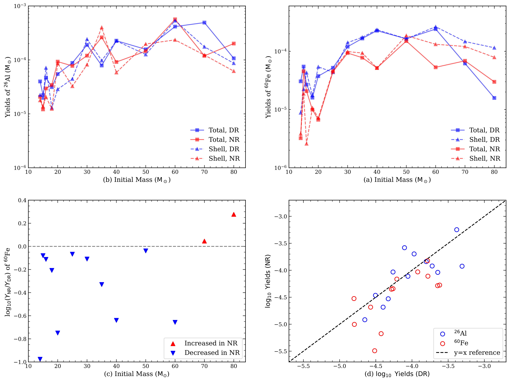<br />
图注：Nucleosynthesis yields of \(\iso{Al}{26}\) and \(\iso{Fe}{60}\) as a function of initial mass ($14\text{--}80\,M_{\odot}$). (a, b) Comparison of yields between models using the default rate (DR, blue lines) and the updated rate (NR, red lines). Solid lines represent total yields, while dashed lines indicate pre-supernova hydrostatic shell yields. (c) The logarithmic ratio of \(\iso{Fe}{60}\) total yields ($\log_{10}(Y_{\text{NR}}/Y_{\text{DR}})$), highlighting the substantial suppression of production in the NR models. (d) Direct comparison of yields relative to the identity line ($y=x$). Note the distinct response to the rate update: while \(\iso{Fe}{60}\) (squares) exhibits a systematic reduction, \(\iso{Al}{26}\) (circles) shows only random fluctuations.<br />
对应解读：对应“建议重点查看的图表”第2、3项，以及“关键图表逐图导读”图2、图3和模型比较段落。<br />
入选理由：这张图直接给出14--80太阳质量范围内^{60}Fe与^{26}Al产额随初始质量的变化，并同时比较默认率DR和新率NR。它不仅显示^{60}Fe在新率下系统性降低，还用对数产额比和identity line展示^{26}Al几乎不受影响，是支撑本文核心结论“降低^{60}Fe而不改变^{26}Al”的最关键图。<br />
来源与置信度：\(arxiv_source\)；high；\(arxiv_source\) / sample7.tex:figure[4]</p>
<p><strong>Fig07</strong><br />
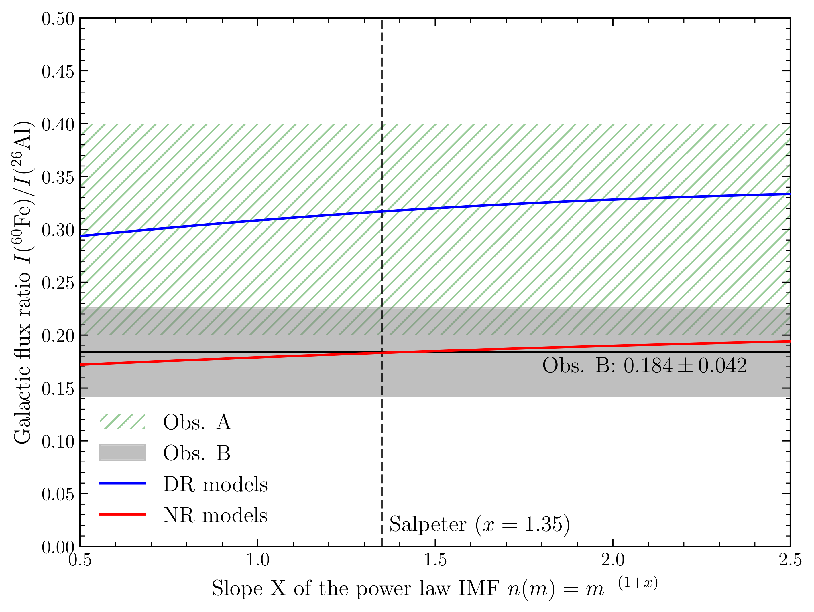<br />
图注：Predicted Galactic $\gamma$-ray flux ratio $I(\iso{Fe}{60})/I(\iso{Al}{26})$ as a function of the IMF slope parameter $x$. Results are shown for models with default \(\iso{Fe}{59}\) decay rates (DR, blue line) and updated decay rates (NR, red line). The gray shaded region (Obs. B) and green hatched area (Obs. A) denote the observational constraints from the exponential disk model ($0.184 \pm 0.042$) and various spatial morphology models, both derived from INTEGRAL data by \(\citet{2020ApJ...889..169W}.\) For reference, the horizontal solid line marks the observed central value of $0.184$, while the vertical dashed line marks the standard Salpeter IMF slope ($x = 1.35$).<br />
对应解读：对应“建议重点查看的图表”第6项、“关键图表逐图导读”图6，以及模型拟合段落中与SPI观测通量比的比较。<br />
入选理由：这张图把恒星产额积分到银河伽马射线通量比I(^{60}Fe)/I(^{26}Al)，横轴为IMF斜率，并同时给出DR、NR模型和INTEGRAL观测带。它最直接检验新率模型是否落入0.184±0.042观测约束，也展示结论对IMF斜率依赖较弱。<br />
来源与置信度：\(arxiv_source\)；high；\(arxiv_source\) / sample7.tex:figure[7]</p>
<p><strong>Fig01</strong><br />
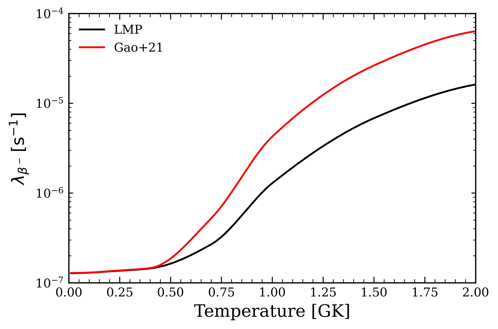<br />
图注：The $\beta^-$ decay rate of \(\iso{Fe}{59}\) as a function of temperature. The black line represents the widely used rates from \(\citet{2001ADNDT..79....1L},\) evaluated at a typical carbon-shell density of $\rho Y_e \approx 10^5\,\mathrm{g\,cm^{-3}}$, while the red line shows the new rate from \(\citet{2021PhRvL.126o2701G}.\) The temperature range is truncated at 2\,GK, as the $\beta^-$ decay channel becomes sub-dominant relative to the \(\iso{Fe}{59}(p,n)\iso{Co}{59}\) reaction at higher temperatures.<br />
对应解读：对应“建议重点查看的图表”第1项和“关键图表逐图导读”图1。<br />
入选理由：这张图展示^{59}Fe β^-衰变率随温度变化，并明确比较LMP旧率与2021年新实验约束率。它是全文核物理输入差异的源头，能帮助读者判断在碳壳燃烧温度区间内新旧率差异为何会改变^{59}Fe(n,γ)^{60}Fe分支。<br />
来源与置信度：\(arxiv_source\)；high；\(arxiv_source\) / sample7.tex:figure[1]</p>
<p><strong>Fig05</strong><br />
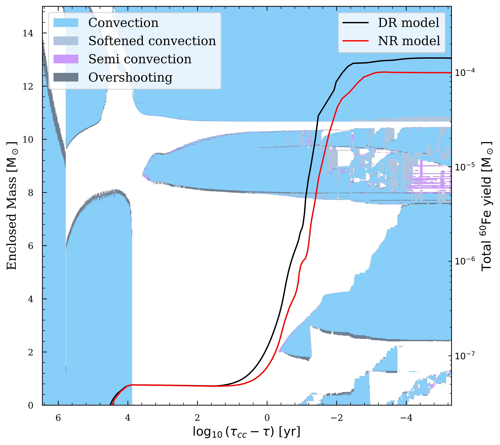<br />
图注：Evolutionary history of the $30\,M_\odot$ model. The background Kippenhahn diagram (left axis) illustrates the internal structure evolution, showing convective (light blue), semi-convective (purple), and overshooting (dark gray) zones as a function of the logarithmic time remaining until core collapse ($\tau_{cc} - \tau$). The overlaid solid lines (right axis) track the cumulative \(\iso{Fe}{60}\) mass yield. The black line represents the Default Rate (DR) model, while the red line indicates the New Rate (NR) model. Note that the deviation in \(\iso{Fe}{60}\) production between the two models becomes prominent during the late evolutionary stages (e.g., carbon burning).<br />
对应解读：对应“建议重点查看的图表”第4项和“关键图表逐图导读”图4中关于对流碳壳燃烧阶段时间演化的部分。<br />
入选理由：这张30太阳质量模型的Kippenhahn图叠加了累计^{60}Fe产额随塌缩前时间的演化，能定位DR与NR模型产额开始明显分离的晚期演化阶段，尤其是碳燃烧相关阶段。它比单纯最终产额图更能说明产额降低发生在恒星内部演化的哪个阶段。<br />
来源与置信度：\(arxiv_source\)；high；\(arxiv_source\) / sample7.tex:figure[5]</p>
<p><strong>Fig09</strong><br />
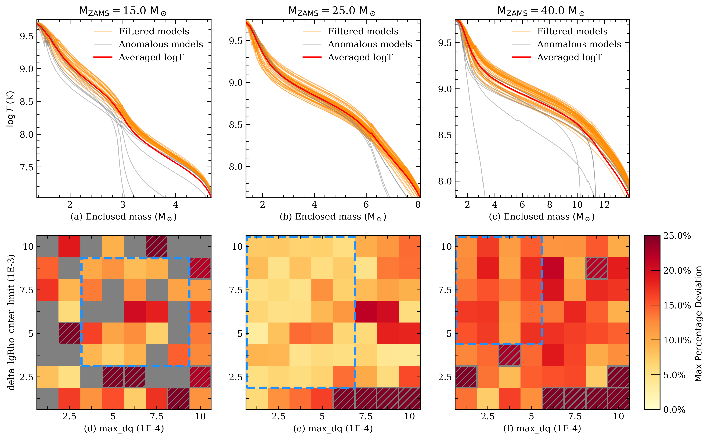<br />
图注：Resolution sensitivity analysis for advanced burning stages. \(\textbf{Top:}\) Temperature profiles prior to iron core infall. Grey curves are outliers ($>50\%$ deviation), orange are valid models, and red is the average. \(\textbf{Bottom:}\) Map of maximum temperature deviation ($D^{\text{max}}_{\text{temp}}$). The blue dashed rectangles indicate the chosen stability parameters for production models.<br />
对应解读：对应“建议重点查看的图表”第5项、“关键图表逐图导读”图5，以及模型拟合段落中关于数值分辨率与残差诊断的讨论。<br />
入选理由：这张图给出高级燃烧阶段的分辨率敏感性分析，包括铁芯坍缩前温度剖面和最大温度偏差图，并标出生产模型采用的稳定参数区域。由于^{60}Fe产额对晚期壳层结构敏感，这张图是判断新旧衰变率造成的差异是否大于数值分辨率误差的重要证据。<br />
来源与置信度：\(arxiv_source\)；high；\(arxiv_source\) / sample7.tex:figure[9]</p>
<p><strong>Fig06</strong><br />
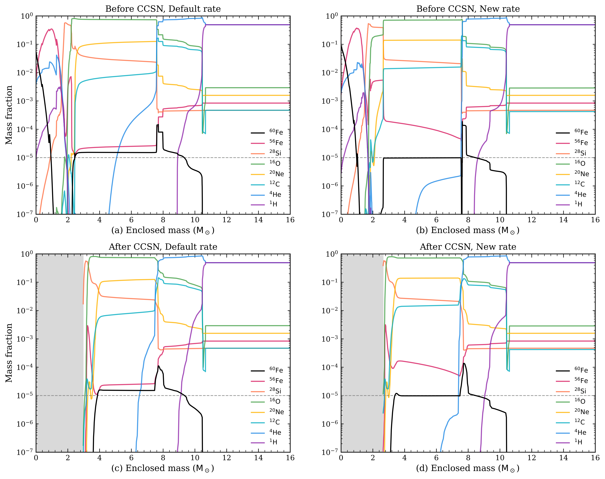<br />
图注：Internal mass fraction profiles of key isotopes (\(\iso{H}{1},\) \(\iso{He}{4},\) \(\iso{C}{12},\) \(\iso{O}{16},\) \(\iso{Ne}{20},\) \(\iso{Si}{28},\) \(\iso{Fe}{56},\) and \iso{Fe}{60}) for the $30\,M_\odot$ models. The left panels (a, c) correspond to the Default Rate (DR) case, while the right panels (b, d) represent the New Rate (NR) case. Top panels show the pre-supernova stage, and bottom panels display the post-explosion distribution. The \(\iso{Fe}{60}\) abundance is highlighted by the solid black line, with a horizontal dashed gray line at $X = 10^{-5}$ provided for visual reference. The gray shaded regions in the bottom panels denote the mass enclosed within the compact remnant and the fallback material ($M < M_{\rm cut} + M_{\rm fb}$), which is excluded from the final ejecta.<br />
对应解读：对应“建议重点查看的图表”第4项和“关键图表逐图导读”图4中关于壳层剖面、丰度分布和最终抛射层的部分。<br />
入选理由：这张图比较30太阳质量DR与NR模型在爆炸前后关键同位素的内部质量分数剖面，并标出compact remnant与fallback区域。它有助于判断^{60}Fe所在壳层是否进入最终抛射物，补充说明局部丰度变化如何转化为最终产额。<br />
来源与置信度：\(arxiv_source\)；high；\(arxiv_source\) / sample7.tex:figure[6]</p>
<h4 id="_31">强相关工作</h4>
<p>这篇工作直接关联到 \(\mathrm{INTEGRAL/SPI}\) 对银河弥散 \(^{26}\mathrm{Al}\) 与 \(^{60}\mathrm{Fe}\) 线的测量，以及过去大质量恒星核合成模型中 \(^{60}\mathrm{Fe}\) 偏高的问题。建议检索关键词包括“\(^{60}\mathrm{Fe}/^{26}\mathrm{Al}\) gamma-ray flux ratio”、“\(\mathrm{INTEGRAL/SPI}\) \(^{60}\mathrm{Fe}\)”、“massive star nucleosynthesis \(^{60}\mathrm{Fe}\)”和“\(^{59}\mathrm{Fe}\) stellar beta decay rate”。这些关键词能把观测约束、恒星产额模型和核物理实验连接起来。</p>
<p>相关理论工作包括早期关于 \(^{26}\mathrm{Al}\) 银河伽马线示踪、\(^{60}\mathrm{Fe}\) 中子俘获合成路径、以及 \(\mathrm{LMP}\) 弱相互作用率表的研究。与本文可能存在张力或互补的方向包括旋转大质量星模型、双星族群合成、不同金属丰度下的 \(^{22}\mathrm{Ne}(\alpha,n)^{25}\mathrm{Mg}\) 中子源不确定性，以及 \(\mathrm{SPI}\) 背景和空间模板对通量比的影响。若后续模型在加入旋转或双星后重新提高 \(^{60}\mathrm{Fe}\) 产额，就需要评估新 \(^{59}\mathrm{Fe}\) 衰变率是否仍能维持与观测的一致性。</p>
<p><strong>相似工作</strong>：<br />
- https://arxiv.org/abs/2605.29381<br />
- https://ui.adsabs.harvard.edu/</p>
<p><strong>基础理论 / 方法工作</strong>：<br />
- https://arxiv.org/abs/astro-ph/0601015<br />
- https://ui.adsabs.harvard.edu/abs/2001PhRvC..61b5502L/abstract</p>
<p><strong>相反观点 / 张力线索</strong>：<br />
- https://ui.adsabs.harvard.edu/</p>
</details>
<h3 id="4-visible-inelasticity-as-a-probe-of-tau-flavor-content-of-astrophysical-neutrinos">4. Visible inelasticity as a probe of tau flavor content of astrophysical neutrinos</h3>
<ul>
<li>来源：arXiv / astro-ph.HE</li>
<li>链接：https://arxiv.org/abs/2605.29105v1</li>
<li>作者：Alex Y. Wen, Carlos A. Argüelles, Sergio Palomares-Ruiz</li>
<li>评分：novelty 8/10，importance 8/10，relevance 8/10，final 9.00/10</li>
<li>推荐理由：提出用IceCube起始径迹的可见非弹性度统计测量天体中微子tau成分，直接服务高能天体中微子 flavor 和源族研究，方法可立即用于现有数据。</li>
</ul>
<p><strong>中文题目</strong>：用可见非弹性度测量天体中微子的 tau 味含量</p>
<p><strong>做了什么</strong>：这篇文章提出用 IceCube 等中微子望远镜中“起始径迹事件”的可见非弹性度来统计区分天体 ν_\tau 与 ν_\mu 成分。核心想法是：ν_\tau 带电流相互作用后产生的 τ 子若衰变为 μ 子，会留下类似径迹，但由于 τ 衰变中还带走额外中微子，沉积在探测器中的能量分配不同，导致可见非弹性度系统性偏大。作者用现实的 IceCube 曝光量和探测器性能估计表明，这个方法用现有数据就能对 tau-to-muon 通量比 \(R_{\tau\mu}\) 给出有竞争力的约束，并可作为传统“双瀑布”tau 识别的补充。</p>
<p><strong>为什么重要</strong>：天体中微子味比例是检验宇宙尺度中微子振荡、源区产生机制和新物理的重要观测量，但 ν_\tau 最难测。传统 ν_\tau 识别主要依赖高能“双瀑布”事件，统计量少、能区受限。这篇文章把注意力转向数量更多的起始径迹事件，用一个连续的能量分配变量而不是罕见拓扑来提取 ν_\tau 信息，因此有望显著提高 tau 味测量效率。</p>
<p><strong>理论 / 观测 / 仪器方法价值</strong>：方法价值在于它把原本主要用于能量重建和背景判别的可见非弹性度转化为味成分诊断量。对理论而言，它给出检验标准三味混合预言和非标准传播效应的新通道；对观测而言，它能在现有 IceCube 数据上实施，不必等待全新探测器；对方法学而言，它强调用全事件分布和似然建模从混合样本中提取弱信号，而不是只依赖单事件分类。</p>
<p><strong>为什么应该关注</strong>：如果你关心天体中微子源的产生机制、宇宙尺度振荡或衰变、伪狄拉克中微子、秘密相互作用等新物理，这个可观测量值得关注。它可能让 ν_\tau 测量从“等到少数漂亮的双瀑布事件”变成“用大量起始径迹做统计味谱学”，并为将来对单个亮源或源族的味比例测量提供实际路径。</p>
<details class="paper-detail">
<summary>展开详细解读：文章讲解、背景、理论、重点章节、图表与相关工作</summary>
<h4 id="_32">文章详细讲解</h4>
<p>科学问题：天体中微子从源到地球经历宇宙学尺度传播，标准三味振荡会把源处味比例重新混合。许多常见源模型在地球处预言大致接近 \((\nu_e:\nu_\mu:\nu_\tau)\sim(1:1:1)\)，其中 ν_\tau 分量几乎完全来自振荡，而不是源区直接产生。因此，ν_\tau 是一个特别干净的传播物理探针。但实际观测中，ν_e 可通过瀑布事件统计，ν_\mu 可通过径迹事件统计，ν_\tau 则长期受限于双瀑布、双脉冲等稀有拓扑，导致 flavor triangle 上的 tau 方向最难收紧。</p>
<p>作者怎么做：文章提出利用起始径迹事件的可见非弹性度 \(y_{\rm vis}\)。起始径迹通常来自探测器体积内发生的带电流相互作用，末态有一个强子簇射和一个长程带电轻子径迹。对 \(\nu_\mu\) 带电流事件，径迹由原生 \(\mu\) 子产生；对 \(\nu_\tau\) 带电流事件，若 \(\tau\to\mu\nu_\tau\bar\nu_\mu\)，也会产生径迹。但后一类事件中，\(\tau\) 衰变的不可见中微子带走能量，使可见径迹能量相对降低，等效地让强子簇射占可见总能量的比例更高。作者把这一差异编码为 \(y_{\rm vis}\) 分布，并用现实的 IceCube 曝光、事件选择和能量分辨来估计对 \(R_{\tau\mu}=\Phi_\tau/\Phi_\mu\) 的敏感度。</p>
<p>关键结果：文章的主要结论不是声称单个起始径迹可以可靠标记为 ν_τ，而是强调群体分布可分辨。\(\nu_\tau\to\tau\to\mu\) 事件在 \(y_{\rm vis}\) 上相对 \(\nu_\mu\) 事件更偏向高值端；在足够事件数下，混合分布的形状可以约束 \(R_{\tau\mu}\)。作者认为，用现有 IceCube 数据即可获得与已有 tau 测量互补、甚至有竞争力的敏感度。更进一步，若未来能对某些方向或源类积累足够起始径迹样本，这一方法还可能用于单源或源族层面的 tau 增强筛选。</p>
<p>局限和下一步：该方法依赖对强子簇射能量、径迹能量、入射能谱、事件选择效率和背景组成的准确建模。\(y_{\rm vis}\) 的差异是统计性的，容易与谱指数、能量阈值、光学冰性质、径迹长度截断、大气中微子背景或误重建瀑布能量产生退化。下一步最关键的是在真实 IceCube 样本上做联合似然分析，把 \(R_{\tau\mu}\)、天体谱参数、常规系统误差和背景归一化同时拟合，并用控制样本检验 \(y_{\rm vis}\) 响应是否可靠。若 IceCube-Gen2、KM3NeT 或 Baikal-GVD 提供更大样本和更好能量分辨，这个思路的收益会更明显。</p>
<h4 id="_33">背景知识</h4>
<p>天体高能中微子主要来自强子加速环境中的 \(pp\) 或 \(p\gamma\) 过程。带电 pion 衰变链 \(\pi^+\to\mu^+\nu_\mu\) 以及 \(\mu^+\to e^+\nu_e\bar\nu_\mu\) 给出源处近似 \((\nu_e:\nu_\mu:\nu_\tau)=(1:2:0)\) 的经典图像；若源区磁场强到使 \(\mu\) 子冷却，则可能接近 muon-damped 情形 \((0:1:0)\)；若中子衰变占主导，则可能偏向 \((1:0:0)\)。无论哪种常见机制，源处直接 \(\nu_\tau\) 产额通常很小，因此地球处的 \(\nu_\tau\) 是传播和混合的产物。</p>
<p>经过天文距离传播后，振荡相位平均化，地球处味比例由 PMNS 矩阵元素的模平方组合决定。标准混合一般会把常见源比例映射到 flavor triangle 中央附近。正因为这种映射比较稳定，显著偏离可能指向非标准物理，例如中微子衰变、伪狄拉克振荡、洛伦兹破缺、秘密相互作用、暗物质散射，或源模型远比简单 pion 链复杂。</p>
<p>观测上，IceCube 已经通过高能起始事件、穿越径迹、级联事件和若干 tau 候选事件建立了天体中微子样本。但 flavor 测量不是简单数事件：不同味道和相互作用通道具有不同有效面积、角分布、能量响应和背景污染。\(\nu_\tau\) 尤其困难，因为在较低能量下 \(\tau\) 衰变长度太短，难以形成清晰分离的双瀑布；在较高能量下事件率又下降，且需要足够好的几何条件。</p>
<p>现在重新审视这个问题的原因有两个。第一，IceCube 已积累十多年数据，起始径迹样本的统计量和重建质量已足够支持更细的分布分析。第二，下一代探测器正在设计和建设，提前明确哪些可观测量最能约束味比例，对事件选择和重建算法有直接指导意义。一个常见误区是把 tau flavor 测量等同于寻找双瀑布；本文强调，不能解析出 \(\tau\) 飞行距离并不意味着没有 tau 信息，能量分配本身已经携带味标签。</p>
<h4 id="_34">基础理论 / 方法脉络</h4>
<p>物理图像可以从带电流深非弹性散射开始。高能中微子与冰中的核子相互作用，产生一个末态带电轻子和一个强子系统。强子系统在相互作用顶点附近形成簇射，带电轻子若是 \(\mu\) 子则形成长径迹；若是 \(\tau\) 子，它会在短距离内衰变，只有在 \(\tau\to\mu\) 分支中才产生径迹。探测器看到的是光产额，即局部簇射沉积能量和径迹沿路能量损失的组合。</p>
<p>非弹性度 \(y\) 描述入射中微子能量中进入强子系统的比例，理想情况下 \(E_{\rm had}=yE_\nu\)，而出射带电轻子获得 \((1-y)E_\nu\)。对 \(\nu_\mu\) 带电流事件，可见能量分配较直接：顶点簇射来自 \(E_{\rm had}\)，径迹亮度主要反映 \(E_\mu\)。但实际观测的 \(y_{\rm vis}\) 不是微观 Bjorken \(y\)，而是由重建出的可见簇射能量与可见总能量构造，受到探测器阈值、径迹逃逸、光传播和能量损失随机性的影响。</p>
<p>对 \(\nu_\tau\) 事件，额外的关键过程是 \(\tau\) 衰变。若 \(\tau\) 衰变到 \(\mu\) 子，末态中仍有两个中微子带走能量，因此可见 \(\mu\) 子能量只是 \(E_\tau=(1-y)E_\nu\) 的一部分。这样，即使原始深非弹性散射的 \(y\) 分布相似，重建的 \(y_{\rm vis}\) 也会向更高值偏移。这正是本文可用来统计分离 \(\nu_\tau\) 与 \(\nu_\mu\) 的物理杠杆。</p>
<p>方法上，这类分析需要把天体通量、相互作用截面、衰变谱、探测器响应和事件选择折叠成预测分布。主要观测量通常包括重建能量 \(E_{\rm reco}\)、入射方向、起始顶点位置、径迹长度或能量损失，以及 \(y_{\rm vis}\)。关键退化包括 \(R_{\tau\mu}\) 与谱指数 \(\gamma\) 的退化、\(y_{\rm vis}\) 响应与冰光学模型的退化、天体中微子与大气中微子或穿透大气 \(\mu\) 背景的退化。本文的价值在于指出，即使这些系统误差存在，\(y_{\rm vis}\) 分布形状仍能提供独立 flavor 信息。</p>
<h4 id="_35">公式与推导</h4>
<p>第一步是写出地球处各味天体中微子通量。若只关注 \(\nu_\mu\) 与 \(\nu_\tau\) 的相对含量，可用幂律近似</p>
<div class="math-display">\[\Phi_\alpha(E_\nu)=\Phi_{0,\alpha}\left(\frac{E_\nu}{E_0}\right)^{-\gamma},\quad \alpha\in\{\mu,\tau\}.\]</div>
<p>这里 \(E_\nu\) 是入射中微子能量，\(E_0\) 是参考能量，\(\gamma\) 是谱指数。论文关心的核心参数可写为</p>
<div class="math-display">\[R_{\tau\mu}=\frac{\Phi_\tau}{\Phi_\mu}\simeq \frac{\Phi_{0,\tau}}{\Phi_{0,\mu}},\]</div>
<p>在两味采用相同谱形时，该比值近似与能量无关；若不同味谱形不同，\(R_{\tau\mu}\) 应推广为能量依赖量。</p>
<p>第二步是从深非弹性散射定义非弹性度。带电流相互作用 \(\nu_\ell N\to \ell^- X\) 中，理想能量分配为</p>
<div class="math-display">\[y=\frac{E_{\rm had}}{E_\nu},\quad E_\ell=(1-y)E_\nu.\]</div>
<p>其中 \(E_{\rm had}\) 是强子系统能量，\(E_\ell\) 是出射带电轻子能量。微分事件率包含截面形状</p>
<div class="math-display">\[\frac{dN_\ell}{dE_\nu dy}=T\,N_A\,\rho\,V_{\rm eff}(E_\nu,\Omega)\,\Phi_\ell(E_\nu)\,\frac{d\sigma_{\rm CC}}{dy}(E_\nu,y),\]</div>
<p>这里 \(T\) 是曝光时间，\(N_A\) 是阿伏伽德罗常数，\(\rho\) 是介质密度，\(V_{\rm eff}\) 是有效体积，\(\Omega\) 表示方向，\(d\sigma_{\rm CC}/dy\) 是带电流微分截面。</p>
<p>第三步连接到可见非弹性度。对 \(\nu_\mu\) 起始径迹，简化写作</p>
<div class="math-display">\[y_{\rm vis}^{(\mu)}=\frac{E_{\rm sh}^{\rm reco}}{E_{\rm sh}^{\rm reco}+E_{\rm tr}^{\rm reco}}\approx \frac{f_{\rm had}yE_\nu}{f_{\rm had}yE_\nu+f_\mu(1-y)E_\nu}.\]</div>
<p>\(E_{\rm sh}^{\rm reco}\) 是重建簇射能量，\(E_{\rm tr}^{\rm reco}\) 是重建径迹可见能量，\(f_{\rm had}\) 和 \(f_\mu\) 表示强子簇射与 \(\mu\) 径迹的可见响应因子。若响应理想且完整包含径迹能量，\(y_{\rm vis}\) 才接近真实 \(y\)。</p>
<p>第四步加入 \(\tau\to\mu\) 衰变。令 \(z_\mu=E_\mu/E_\tau\) 为 \(\tau\) 衰变后 \(\mu\) 子获得的能量分数，则</p>
<div class="math-display">\[y_{\rm vis}^{(\tau\to\mu)}\approx \frac{f_{\rm had}yE_\nu}{f_{\rm had}yE_\nu+f_\mu z_\mu(1-y)E_\nu}.\]</div>
<p>因为通常 \(0<z_\mu<1\)，分母中的径迹项变小，所以在相同 \(y\) 下有 \(y_{\rm vis}^{(\tau\to\mu)}>y_{\rm vis}^{(\mu)}\)。这就是本文观测量的核心物理原因。</p>
<p>第五步把衰变谱折叠进预测分布。若 \(p_\tau(z_\mu)\) 是 \(\tau\to\mu\nu_\tau\bar\nu_\mu\) 的能量分数分布，且分支比为 \(B_{\tau\mu}\)，则</p>
<div class="math-display">\[P_\tau(y_{\rm vis}\mid E_\nu)=B_{\tau\mu}\int dy\,dz_\mu\,\frac{1}{\sigma_{\rm CC}}\frac{d\sigma_{\rm CC}}{dy}\,p_\tau(z_\mu)\,R(y_{\rm vis}\mid y,z_\mu,E_\nu).\]</div>
<p>这里 \(R\) 是探测器响应核，包含能量分辨、事件选择和几何截断。相应地，\(P_\mu(y_{\rm vis}\mid E_\nu)\) 可由令 \(z_\mu=1\) 的响应近似得到。</p>
<p>第六步构造混合样本分布。忽略其他背景时，起始径迹的 \(y_{\rm vis}\) 概率密度可写为</p>
<div class="math-display">\[P(y_{\rm vis})=\frac{N_\mu P_\mu(y_{\rm vis})+N_\tau P_\tau(y_{\rm vis})}{N_\mu+N_\tau},\quad \frac{N_\tau}{N_\mu}\propto R_{\tau\mu}B_{\tau\mu}\frac{A_\tau}{A_\mu}.\]</div>
<p>\(A_\tau\) 与 \(A_\mu\) 是包含截面、选择效率和有效面积的综合接受度。该式说明观测到的形状变化如何映射为 \(R_{\tau\mu}\)。</p>
<p>第七步是似然。对每个事件 \(i\)，若观测向量为 \(x_i=(E_{{\rm reco},i},y_{{\rm vis},i},\Omega_i)\)，扩展非分箱似然可写成</p>
<div class="math-display">\[\ln \mathcal{L}= -\sum_k \mu_k(\theta)+\sum_{i=1}^{N}\ln\left[\sum_k \mu_k(\theta) p_k(x_i\mid\theta)\right].\]</div>
<p>\(k\) 表示 \(\nu_\mu\)、\(\nu_\tau\)、大气背景等成分，\(μ_k\) 是期望事件数，\(p_k\) 是归一化模板，\(\theta\) 包含 \(R_{\tau\mu}\)、\(\gamma\)、归一化和系统参数。显著性或置信区间通常来自轮廓似然比</p>
<div class="math-display">\[q(R_{\tau\mu})=-2\ln\frac{\mathcal{L}(R_{\tau\mu},\widehat{\widehat{\eta}})}{\mathcal{L}(\widehat{R}_{\tau\mu},\widehat{\eta})},\]</div>
<p>其中 \(\eta\) 是 nuisance 参数，帽号表示最大似然估计，双帽表示在固定 \(R_{\tau\mu}\) 下的条件最大化。这个诊断量让读者直接检查 \(y_{\rm vis}\) 是否真正改善了对 tau fraction 的约束。</p>
<h4 id="_36">模型拟合 / 应用方法</h4>
<p>这类分析拟合的首要目标是 \(R_{\tau\mu}\)，但不能只拟合一个比值。实际似然需要同时包含天体通量归一化、谱指数 \(\gamma\)、各味相对比例、天顶角分布、能量重建响应、起始事件选择效率，以及大气中微子和大气 \(\mu\) 背景。若论文使用模拟 IceCube 曝光，读者应关注它是用 Asimov 数据集、伪实验还是真实事件模板来评估灵敏度，因为三者给出的误差解释不同。</p>
<p>最重要的拟合量是 \(y_{\rm vis}\) 的形状，而不仅是高 \(y_{\rm vis}\) 事件数。\(\nu_\tau\to\tau\to\mu\) 会在中高 \(y_{\rm vis}\) 区域增加概率，但这种增加可能被较软的能谱、较高的能量阈值或径迹能量低估模仿。因此理想分析应在 \((E_{\rm reco},y_{\rm vis})\) 二维空间中拟合，而不是把所有能量积分掉。若方向信息可用，还应利用南北天空不同背景和吸收效应帮助破除退化。</p>
<p>系统误差方面，强子簇射的光产额、冰中光散射和吸收、DOM 效率、径迹能量损失随机涨落、顶点位置误差都会影响 \(E_{\rm sh}^{\rm reco}\) 与 \(E_{\rm tr}^{\rm reco}\) 的相对标定。由于 \(y_{\rm vis}\) 是一个比值型变量，相对能标误差比绝对能标误差更危险。若强子能量系统性偏高，就可能伪造 tau-like 的高 \(y_{\rm vis}\) 偏移；若短径迹事件选择效率建模不足，也可能改变低能端模板。</p>
<p>参数退化主要包括 \(R_{\tau\mu}\) 与 \(\gamma\) 的退化、\(R_{\tau\mu}\) 与 \(A_\tau/A_\mu\) 的接受度退化、\(R_{\tau\mu}\) 与大气背景归一化的退化，以及 \(y_{\rm vis}\) 模板与深非弹性散射 \(d\sigma/dy\) 理论不确定性的退化。一个稳健结果应展示加入或移除 \(y_{\rm vis}\) 后轮廓似然如何变化，并给出 nuisance 参数被数据拉动的程度。</p>
<p>实际应用场景可以分三层。第一层是全天空弥散通量 flavor 测量，用所有起始径迹提高 \(R_{\tau\mu}\) 约束。第二层是源类统计，例如 blazar、starburst galaxy 或银河面候选源附近的起始径迹样本，寻找是否存在 tau 增强或异常味比例。第三层是未来单个亮源，在积累足够事件后联合方向、时间和 \(y_{\rm vis}\) 做源关联与 flavor 推断。模型失败的信号包括：高 \(y_{\rm vis}\) 过量只出现在某个能区或几何区域、控制样本中也出现相同偏移、或 best-fit \(R_{\tau\mu}\) 对事件选择阈值极端敏感。</p>
<h4 id="_37">重点章节 / 结果段落怎么读</h4>
<ol>
<li>
<p>引言和物理动机：应重点看作者如何界定现有 ν_τ 测量的瓶颈，以及为什么起始径迹比双瀑布更有统计优势。读者要区分“单事件 tau 识别”和“样本分布中的 tau fraction 推断”，本文属于后者。</p>
</li>
<li>
<p>可见非弹性度定义与事件拓扑：这一部分是全文技术核心。应检查 \(y_{\rm vis}\) 如何由重建簇射能量和径迹能量定义，\(\nu_\mu\) 与 \(\nu_\tau\to\tau\to\mu\) 模板差异来自哪里，以及作者是否考虑 \(\tau\) 衰变分支比和衰变能谱。</p>
</li>
<li>
<p>IceCube 曝光和探测器响应假设：重点读有效面积、能量分辨、角分辨、事件选择和背景处理。任何关于“现有数据即可达到竞争力”的结论都依赖这些假设是否接近真实分析。</p>
</li>
<li>
<p>灵敏度或似然结果：应看 \(R_{\tau\mu}\) 的预期置信区间、不同曝光时间下的缩放、加入 \(y_{\rm vis}\) 相比只用事件率或能量分布的改进幅度。若有轮廓似然曲线，要检查是否近似抛物线，以及边界 \(R_{\tau\mu}\ge0\) 是否影响区间。</p>
</li>
<li>
<p>讨论和展望：重点看作者对单源 flavor、tau-enhanced catalog selection、新物理解释的措辞是否谨慎。这里不应被理解为已经发现 tau 过量，而是提出一个可立即用真实数据检验的统计观测量。</p>
</li>
</ol>
<h4 id="_38">建议重点查看的图表</h4>
<ol>
<li>
<p>\(\nu_\mu\) 与 \(\nu_\tau\to\tau\to\mu\) 的 \(y_{\rm vis}\) 模板分布：看高 \(y_{\rm vis}\) 端是否分离明显，分离是否依赖能量。</p>
</li>
<li>
<p>起始径迹事件的能量与 \(y_{\rm vis}\) 二维分布：看 tau-like 区域是否主要来自某个重建能区，避免把能谱差异误认为味差异。</p>
</li>
<li>
<p>\(R_{\tau\mu}\) 的预期置信区间或轮廓似然曲线：看最小值位置、区间宽度、是否存在非高斯尾部，以及加入系统误差后是否明显变宽。</p>
</li>
<li>
<p>曝光时间或事件数与灵敏度的关系：看约束是否按统计极限近似随 \(N^{-1/2}\) 改善，还是很快被系统误差平台限制。</p>
</li>
<li>
<p>背景组成图或表：看大气中微子、误入射大气 \(\mu\) 和非起始事件污染在高 \(y_{\rm vis}\) 区域是否可忽略。</p>
</li>
<li>
<p>系统误差稳健性检验：看改变能标、冰模型、截面或谱指数先验时 \(R_{\tau\mu}\) 的偏移量。</p>
</li>
</ol>
<h4 id="_39">关键图表逐图导读</h4>
<p>图 1：通常应是物理示意图或 \(y_{\rm vis}\) 模板图。横轴应为 \(y_{\rm vis}\)，纵轴为归一化事件概率或预期事件数。\(\nu_\mu\) 模型线应相对更偏向低到中等 \(y_{\rm vis}\)，\(\nu_\tau\to\tau\to\mu\) 模型线应向高 \(y_{\rm vis}\) 偏移。读图陷阱是把两条曲线重叠部分忽略掉；本文方法不是逐个事件分类，而是从整体形状提取混合比例。</p>
<p>图 2：如果论文给出重建能量分箱中的 \(y_{\rm vis}\) 分布，应看每个能区分离度是否一致。横轴可能仍是 \(y_{\rm vis}\)，不同面板对应 \(E_{\rm reco}\)；或者横轴为 \(E_{\rm reco}\)，颜色表示 \(y_{\rm vis}\)。关键是判断 tau-like 偏移是否被低能阈值或高能径迹截断驱动。若只有一个能段有强分离，需要警惕系统误差局部化。</p>
<p>图 3：灵敏度图通常以横轴为 \(R_{\tau\mu}\) 或曝光时间，纵轴为 \(-2\Delta\ln\mathcal{L}\)、置信区间宽度或发现显著性。模型线可能比较“仅事件率”“加入能量”“加入 \(y_{\rm vis}\)”几种情况。应看加入 \(y_{\rm vis}\) 后曲线是否显著变窄，以及这种改进是否在包含 nuisance 参数后仍存在。</p>
<p>图 4：若有 flavor triangle 或 \((\Phi_\mu,\Phi_\tau)\) 约束图，坐标轴应表示地球处味分数或通量比。本文方法主要收紧 \(ν_τ\) 相对 \(ν_\mu\) 的方向，因此置信区域应沿相应方向缩小。读图时要注意归一化约束：若假定 \(\Phi_e+\Phi_\mu+\Phi_	au=1\)，任何一味变化都会投影到另两味。</p>
<p>图 5：稳健性或系统误差图可能展示不同冰模型、能标偏移、谱指数先验下的 \(R_{\tau\mu}\) 区间。横轴可为系统参数取值，纵轴为 best-fit \(R_{\tau\mu}\) 或置信区间。最重要的是看系统偏移是否小于统计误差；若某个系统可把 \(R_{\tau\mu}\) 从标准混合预期推到异常值，真实数据分析必须把它作为显式 nuisance 参数。</p>
<h4 id="_40">论文原图 / 可嵌入图片</h4>
<p><strong>Fig03</strong><br />
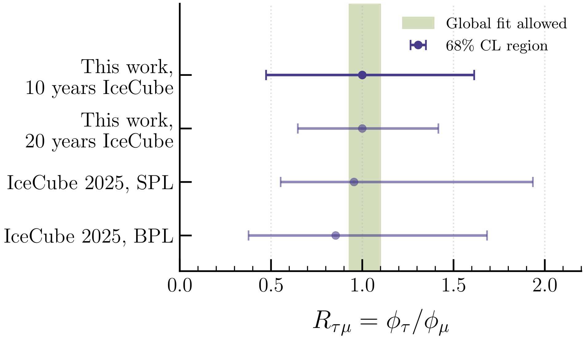<br />
图注：\(\textit{Projected all-sky flavor measurement sensitivity from visible inelasticity.}\) We show the 68\%~CL region of $R_{\tau\mu} \equiv \left(\phi_{\nu_\tau} + \phi_{\bar\nu_\tau}\right) / \left(\phi_{\nu_\mu} + \phi_{\bar\nu_\mu} \right)$ for our simulated all-sky sample of astrophysical neutrinos separated into zenith, inelasticity, and energy bins. Also shown for comparison is the profiled $R_{\tau\mu}$ 68\%~CL region from the IceCube MESE 2025 flavor measurement~\(\cite{IceCube:2025uyt},\) for both single power law (SPL) and broken power law (BPL) astrophysical flux hypotheses. The vertical green band indicates the 68\% highest-density interval of $R_{\tau\mu}$ given NuFit2024 mixing parameter allowed ranges at the 68\%~CL~\(\cite{Esteban:2024eli}.\) Details on the binning are described in the main text and are shown in Fig.~\(\ref{fig:event_distributions}.\)<br />
对应解读：建议重点查看的图表第3项；关键图表逐图导读图3；模型拟合段落中关于以二维分箱似然约束 \(R_{τμ}\) 的核心结果。<br />
入选理由：这是论文最核心的 all-sky \(R_{τμ}\) 灵敏度结果，直接给出68%置信区间，并与 IceCube MESE 2025 flavor 测量及 NuFit2024 标准混合预期比较。它最能支撑日报关于“现有 IceCube 数据即可获得有竞争力 tau/muon 通量比约束”的解读。<br />
来源与置信度：\(arxiv_source\)；high；\(arxiv_source\) / main.tex:figure[3]</p>
<p><strong>Fig02</strong><br />
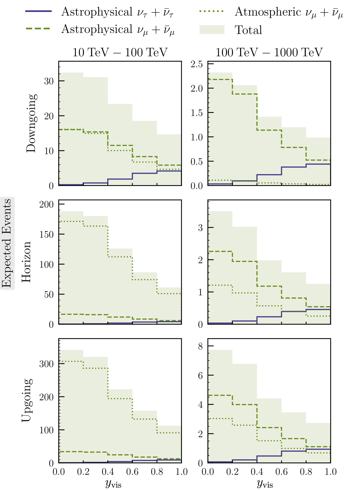<br />
图注：\textit{Event spectra as a function of the visible inelasticity, $y_\mathrm{vis}$}. We split into downgoing ($0.5 < \cos\theta_z < 1$, top row), horizon ($0 < \cos\theta_z < 0.5$, middle row), and upgoing ($-1 < \cos\theta_z < 0$, bottom row) zenith bins. We also split into two energy bins (the left and right columns) and the $y_\mathrm{vis}$ range ($0 < y_\mathrm{vis} < 1$) evenly into 5 bins. The $y_\mathrm{vis}$ value is smeared according to a Gaussian with standard deviation $\sigma_{y_\mathrm{vis}} = 0.2$. The astrophysical $\nu_\tau + \bar\nu_\tau$ component is more prominent at high $y_\mathrm{vis}$ and in the more downgoing regions, owing to the kinematics of the different-flavored decays and the self-veto suppression of the atmospheric neutrino background.<br />
对应解读：建议重点查看的图表第2项和第5项；关键图表逐图导读图2；模型拟合段落中强调应在 (\(E_reco,\) y_vis) 或能量、天顶角、非弹性度分箱中拟合。<br />
入选理由：该图展示事件谱随 \(y_vis\) 的分布，并同时分成天顶角与能量 bin，可直接检查 tau-like 高 \(y_vis\) 区域是否集中在特定能区或几何区域，以及大气背景在不同方向上的影响，是验证方法稳健性的关键诊断图。<br />
来源与置信度：\(arxiv_source\)；high；\(arxiv_source\) / main.tex:figure[2]</p>
<p><strong>Fig01</strong><br />
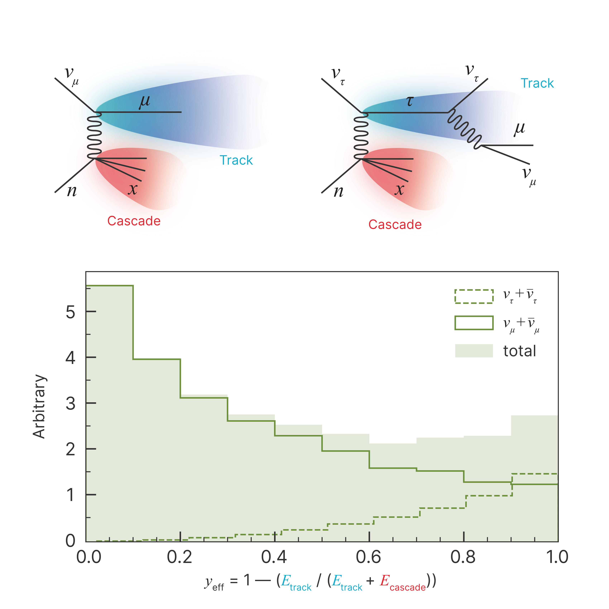<br />
图注：\(\textit{Flavored track signals.}\) Shown in the top of the figure are cartoons of $\nu_\mu$ (left) and $\nu_\tau$ (right) charged current interactions which result in a long, visible, track. In the $\nu_\mu$ case, the muon comes from the $\nu_\mu$ interaction, while in the $\nu_\tau$ case, the track comes from the tau and the subsequent muonic tau decay. In the bottom panel, we show the visible inelasticity, $y_\textrm{vis}$, distributions for the two types of tracks and their sum, for a representative flux of equal-flavor neutrinos distributed between $10^4\:\mathrm{GeV}$ and $10^6\:\mathrm{GeV}$ as $E_\nu^{-2.5}$.<br />
对应解读：建议重点查看的图表第1项；关键图表逐图导读图1；详细解释中关于 ν_μ 起始径迹与 ν_τ→τ→μ 起始径迹的物理差异。<br />
入选理由：该图同时包含 ν_μ 与 ν_τ 带电流起始径迹拓扑示意，以及两类 track 的 \(y_vis\) 模板分布，是理解本文方法的基础图。它直接显示 ν_τ→τ→μ 相比 ν_μ 更偏向高 \(y_vis\)，从而支撑“利用整体形状统计分离而非逐事件分类”的核心论点。<br />
来源与置信度：\(arxiv_source\)；high；\(arxiv_source\) / main.tex:figure[1]</p>
<p><strong>Fig06</strong><br />
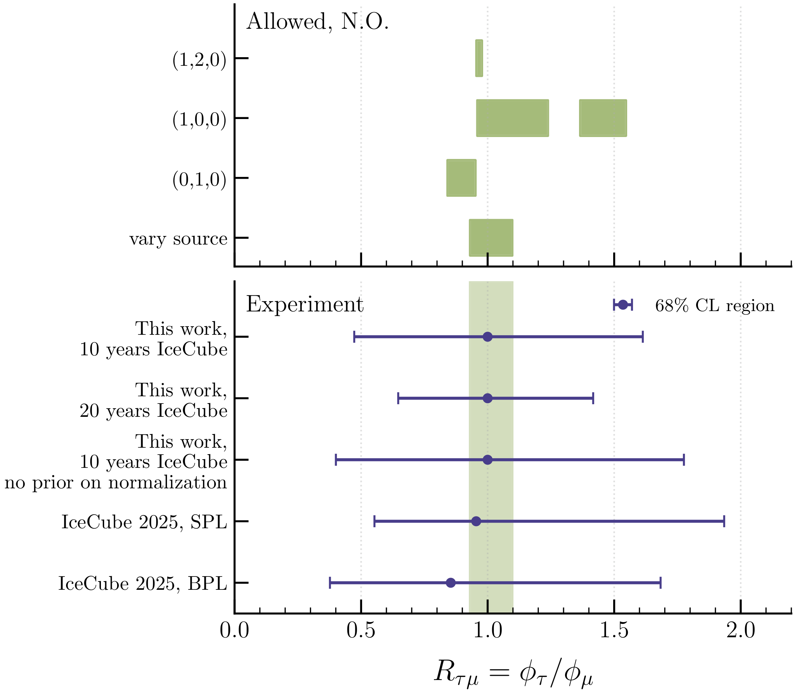<br />
图注：\(\textit{Projected all-sky flavor measurement sensitivity, with additional allowed regions.}\) We show the 68\%~CL allowed ranges of $R_{\tau\mu}$ for our simulated all-sky sample of astrophysical neutrinos separated into zenith, inelasticity, and energy bins, the same result of Fig.~\(\ref{fig:sensitivity_diffuse}.\) In addition, we also add the sensitivity without imposing a prior on the total normalization $N_\phi$. The vertical green bands indicate the 68\% highest-density interval of $R_{\tau\mu}$ given the NuFit 2024 mixing parameter allowed ranges at 68\%~CL~\(\cite{Esteban:2024eli},\) but also broken up into different source production hypotheses. The ``vary source'' one corresponds to the scan over source production $(f_e,1-f_e,0)$ with $f_e \in [0,1]$, and is the allowed region that the experimental limits are compared to. Details on the binning are described in the text and can be seen in Fig.~\(\ref{fig:event_distributions}.\) Like in Fig.~\(\ref{fig:sensitivity_diffuse},\) we also show the profiled flavor measurement result from Ref.~\(\cite{IceCube:2025uyt},\) which includes a fit to both a SPL and a BPL astrophysical flux hypothesis.<br />
对应解读：关键图表逐图导读图4；建议重点查看的图表第3项；模型拟合段落中关于通量归一化先验、源 flavor 假设和 \(R_{τμ}\) 退化的讨论。<br />
入选理由：该图在 Fig03 的基础上加入无总归一化先验的结果以及不同源产生假设对应的标准混合允许区间，能够说明 \(R_{τμ}\) 约束对归一化先验和源 flavor 假设的依赖，比单纯展示主结果更适合支撑模型退化与物理解释部分。<br />
来源与置信度：\(arxiv_source\)；high；\(arxiv_source\) / main.tex:figure[6]</p>
<p><strong>Fig04</strong><br />
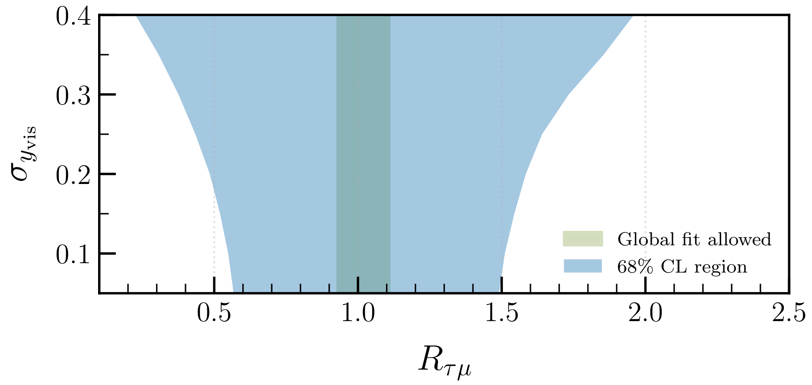<br />
图注：\textit{Effect of varying the $y_\textrm{vis}$ reconstruction quality.} The effect on $R_{\tau\mu}$ sensitivity, shown as the 68\%~CL region, of changing $\sigma_{y_\mathrm{vis}}$, the resolution on the visible inelasticity. As a realistic benchmark, we consider $\sigma_{y_\mathrm{vis}} = 0.2$ as the nominal value used throughout this work.<br />
对应解读：建议重点查看的图表第6项；关键图表逐图导读图5；模型拟合段落中关于 \(y_vis\) 重建质量、相对能标和探测器响应系统误差的讨论。<br />
入选理由：该图直接改变 \(y_vis\) 分辨率 σ_{y_vis} 并观察 \(R_{τμ}\) 68%置信区间变化，是候选图中最贴近系统误差和重建稳健性检验的一张。它可用于判断本文方法是否依赖过于理想化的可见非弹性度重建。<br />
来源与置信度：\(arxiv_source\)；high；\(arxiv_source\) / main.tex:figure[4]</p>
<p><strong>Fig05</strong><br />
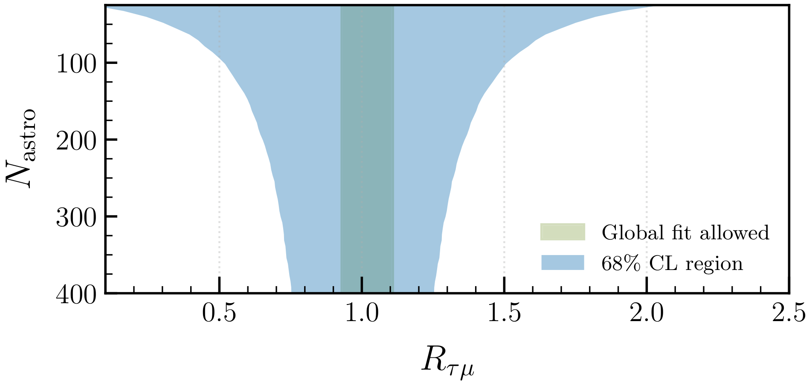<br />
图注：\(\textit{Sensitivity of the flavor-ratio measurement for a hypothetical point source.}\) The $R_{\tau\mu}$ sensitivity, shown is the 68\%~CL region, as a function of $N_\textrm{astro}$, the number of detected starting track events from a point source at $\cos\theta_z = 0.5$, assuming the same power-law flux as for the diffuse analysis. At these energies and assuming sub-degree angular uncertainty, the atmospheric background is largely irrelevant, resulting in a subleading dependence on the zenith angle.<br />
对应解读：建议重点查看的图表第4项；详细解释中关于源类统计和未来单个亮源 flavor 推断的应用场景。<br />
入选理由：该图给出点源情形下 \(R_{τμ}\) 灵敏度随起始径迹事件数 \(N_astro\) 的变化，可检查约束是否随事件数按统计规律改善，并支撑日报中关于源族或单源 tau 增强筛选的展望。<br />
来源与置信度：\(arxiv_source\)；high；\(arxiv_source\) / main.tex:figure[5]</p>
<h4 id="_41">强相关工作</h4>
<p>这篇工作与 IceCube 过去的 flavor 组成测量和 tau neutrino 搜索直接相连。已有研究通常使用高能起始事件中的级联/径迹比例、穿越 μ 径迹样本、以及双瀑布或双脉冲 tau 候选事件来约束 flavor。本文的不同点在于，它没有把起始径迹简单归为 \(ν_μ\)，而是承认 \(ν_τ\to	au	o\mu\) 会混入径迹样本，并把这种“污染”反过来变成 tau fraction 信号。建议检索关键词包括 “IceCube astrophysical neutrino flavor composition”, “tau neutrino double cascade IceCube”, “neutrino inelasticity IceCube”, “starting tracks visible inelasticity”。</p>
<p>理论上，它与宇宙尺度振荡平均后的 flavor mapping、源区 pion decay/muon-damped/neutron beam 模型，以及非标准中微子传播模型相关。相反或张力方向主要来自两类：一类认为现有 flavor 数据仍由统计误差主导，任何细分观测量都难以超过系统误差；另一类指出 flavor 异常也可能由源模型复杂性而非新物理造成。因此阅读本文时应把 \(R_{\tau\mu}\) 看作连接观测与理论的中间量，而不是直接的新物理判据。可检索 “neutrino decay astrophysical flavor”, “pseudo-Dirac neutrinos flavor ratios”, “source flavor degeneracy high energy neutrinos”。</p>
<p><strong>相似工作</strong>：<br />
- https://arxiv.org/abs/2605.29105<br />
- https://arxiv.org/abs/2011.03561<br />
- https://arxiv.org/abs/2011.03545</p>
<p><strong>基础理论 / 方法工作</strong>：<br />
- https://arxiv.org/abs/astro-ph/0509330<br />
- https://arxiv.org/abs/1209.3023<br />
- https://arxiv.org/abs/1507.03991</p>
<p><strong>相反观点 / 张力线索</strong>：<br />
- https://arxiv.org/abs/1502.03376<br />
- https://arxiv.org/abs/1808.07629</p>
</details>
<h3 id="5-long-duration-grb-211211a-internal-energy-dissipation-driven-by-a-long-lived-magnetar">5. Long-Duration GRB 211211A: Internal Energy Dissipation Driven by a Long-Lived Magnetar</h3>
<ul>
<li>来源：arXiv / astro-ph.HE</li>
<li>链接：https://arxiv.org/abs/2605.30025v1</li>
<li>作者：Nissim Fraija</li>
<li>评分：novelty 7/10，importance 7/10，relevance 9/10，final 8.70/10</li>
<li>推荐理由：针对GRB 211211A这一关键异常长时标并伴随千新星事件，提出长寿命磁星与回落吸积解释，和GRB中心引擎/并合遗迹问题高度相关。</li>
</ul>
<p><strong>中文题目</strong>：长时标伽马暴 211211A：由长寿命磁星驱动的内部能量耗散</p>
<p><strong>做了什么</strong>：这篇文章试图解释一个反常事件：GRB 211211A 持续时间像长暴，却伴随千新星，指向致密双星并合。作者把伽马射线和 X 射线数据放进一个长寿命毫秒磁星框架中，考察磁星自转能通过内部耗散转化为 prompt 与 extended emission 的可能性，并比较早期回落吸积率为 \(\dot M\propto t^0\) 与 \(\dot M\propto t^{1/2}\) 两种情形。核心结论是：如果并合后没有立刻坍缩成黑洞，而是形成一个长寿命、高磁场、快速旋转的中子星，其自转损失功率和吸积调制可以同时解释前兆、长 prompt、延展辐射和后续 X 射线行为；可变吸积率版本对数据描述更好。</p>
<p><strong>为什么重要</strong>：GRB 211211A 挑战了“长暴等于大质量恒星塌缩、短暴等于致密并合”的传统经验分类。若一个并合事件能产生长达几十秒的伽马射线活动，就说明持续时间并不是可靠的 progenitor 判据，中心引擎寿命、磁化度和吸积历史同样关键。这会影响未来用 GRB 识别中子星并合、千新星和引力波对应体的策略。</p>
<p><strong>理论 / 观测 / 仪器方法价值</strong>：这项工作的价值在于把 GRB 211211A 的多个阶段放到同一个中心引擎图像下：前兆、主暴、延展辐射和 X 射线衰减不是分开拟合的孤立现象，而被解释为长寿命磁星自转能、磁化参数和回落吸积共同作用的结果。对理论而言，它给出并合后稳定或亚稳定磁星的可观测诊断；对观测而言，它提示应在短暴加千新星样本中系统搜索长时标内部活动。</p>
<p><strong>为什么应该关注</strong>：如果你关心 GRB 分类、中子星并合产物、千新星、磁星中心引擎或多信使天文学，这篇文章值得看。它不是单纯给 GRB 211211A 换一个标签，而是在问：一个并合后残留磁星能把多长时间、多大能量、以什么效率释放到高能辐射中？这个问题直接关系到未来 \(\gamma\) 射线触发、X 射线跟进和引力波事件物理解释。</p>
<details class="paper-detail">
<summary>展开详细解读：文章讲解、背景、理论、重点章节、图表与相关工作</summary>
<h4 id="_42">文章详细讲解</h4>
<p>科学问题：GRB 211211A 的麻烦在于它同时具有两套通常被认为互斥的特征。一方面，伽马射线持续时间达到长暴范围，并带有复杂的 prompt 与 extended emission；另一方面，其光学/近红外后续辐射显示千新星特征，强烈指向中子星并合或中子星—黑洞并合。传统 \(T_{90}\) 分类会把它归入长暴，但电磁对应体却像短暴并合事件。因此本文要回答的是：并合后的中心引擎是否可以在不调用大质量星塌缩的前提下，产生长时间的高能活动？</p>
<p>作者怎么做：作者采用长寿命毫秒磁星模型，把并合后形成的快速旋转、高磁场中子星视为能量库。磁星通过磁偶极自转损失释放自转能，其中一部分经内部能量耗散转化为可见的 \(\gamma\) 射线和 X 射线辐射。论文重点考察早期回落吸积的两种参数化：近似常数吸积率 \(\dot M\propto t^0\)，以及随时间上升的可变吸积率 \(\dot M\propto t^{1/2}\)。这两个设定用于描述主暴前后中心引擎注入功率如何被吸积过程调制。</p>
<p>关键结果：论文认为，磁星的自转损失功率经过由磁化参数控制的内部耗散后，可以自然延长 prompt 阶段，从而解释 GRB 211211A 的长持续时间。前兆、主暴后的 extended emission 和 X 射线演化也可以在同一框架下得到可接受描述。两种吸积率都能解释部分观测特征，但包含可变吸积率的模型更贴近数据，暗示并合后早期吸积流并非简单平稳，而可能经历重组、回落增强或盘—磁层相互作用。</p>
<p>局限和下一步：这类模型的核心不确定性在于能量转换效率、喷流准直、磁化参数演化、吸积率时间依赖和并合遗迹的稳定性。仅凭 GRB 与 X 射线光变曲线，许多参数存在退化，例如较大的初始自转能、较高辐射效率或更强准直都可提高观测亮度。下一步需要把光学/近红外千新星、余辉多波段谱、可能的晚期射电限制，以及未来引力波对残留中子星寿命的约束联合起来，检验长寿命磁星是否真是 GRB 211211A 的最优解释。</p>
<h4 id="_43">背景知识</h4>
<p>GRB 211211A 是近年 GRB 分类问题中的关键样本之一。经典经验图像是：持续时间 \(T_{90}\lesssim 2\,\mathrm{s}\) 的短暴通常来自双中子星或中子星—黑洞并合，持续时间更长的长暴通常来自大质量恒星塌缩并伴随超新星。但这个二分法从来只是观测经验，而不是严格物理分类。GRB 211211A 的长持续时间与千新星证据并存，迫使人们重新区分“观测持续时间”和“中心引擎来源”。</p>
<p>千新星是富中子抛射物中 \(r\)-过程放射性衰变驱动的热瞬变。它通常是致密双星并合的强证据，因为并合可以抛出低电子分数物质，并在光学到近红外波段产生快速演化的热辐射。GRB 211211A 若确有千新星成分，就很难用普通长暴的 collapsar 超新星图像解释，除非引入非常规环境或混合模型。</p>
<p>并合后的中心产物并不一定立刻是黑洞。根据总质量、状态方程、角动量支撑和质量损失，产物可能是短寿命超大质量中子星、亚稳定中子星，甚至长寿命稳定中子星。若形成毫秒磁星，它储存的自转能可达 \(\sim 10^{52}\,\mathrm{erg}\)，足以影响高能辐射、千新星加热和余辉动力学。GRB 211211A 的长时标活动正是检验这一可能性的好场景。</p>
<p>现在重新看这个问题尤其重要，是因为多信使天文学已经把 GRB、千新星和引力波联系起来。GW170817/GRB 170817A 证明并合能产生短 GRB 和千新星，但它的 \(\gamma\) 射线信号较弱且短。GRB 211211A 则展示了另一个端点：可能同样是并合，却有强而长的高能辐射。这说明并合事件的中心引擎族群可能很宽。</p>
<p>一个常见误区是把 \(T_{90}\) 当作 progenitor 的直接证据。实际上 \(T_{90}\) 受探测器能段、灵敏度、背景估计、红移、喷流结构和中心引擎活动共同影响。另一个误区是认为发现千新星就自动排除长时间中心引擎；事实上，只要并合产物在坍缩前存活足够久，磁星自转损失和吸积都可能延长高能辐射。</p>
<h4 id="_44">基础理论 / 方法脉络</h4>
<p>从基础物理图像看，毫秒磁星模型的能量来源是快速旋转中子星的转动能。一个角速度为 \(\Omega\)、转动惯量为 \(I\) 的中子星具有 \(E_{\rm rot}\sim I\Omega^2/2\) 的能量库。若初始周期接近毫秒，这个能量库可与典型 GRB 各向同性等效能量相当，尤其在喷流准直和辐射效率修正后更容易满足能量预算。</p>
<p>磁星释放能量的基本机制是磁偶极辐射和磁化风。表面偶极磁场越强，角速度越高，自转损失功率越大。该功率不一定直接变成观测到的 \(\gamma\) 射线；它可能先以 Poynting flux、磁化等离子体风或盘—磁层相互作用形式存在，再通过磁重联、内激波、湍流耗散或其他内部耗散机制转化为非热辐射。</p>
<p>本文的关键设定是，GRB 211211A 的长 prompt 不是大质量星塌缩持续供能的证据，而是并合后磁星长时间释放自转能的结果。吸积在这里不是黑洞盘模型中的唯一能量源，而是调制磁星磁层、喷流功率和辐射效率的重要过程。两种早期回落吸积率 \(\dot M\propto t^0\) 与 \(\dot M\propto t^{1/2}\) 分别代表较平稳和逐渐增强的早期供质历史。</p>
<p>观测上，模型主要面对的是 \(\gamma\) 射线 prompt 光变、前兆、extended emission 以及 X 射线余辉或平台/衰减段。需要比较的是模型注入光度 \(L(t)\) 在考虑红移、辐射效率和可能的喷流几何后，是否能复现观测通量 \(F(t)\) 的幅度、持续时间和时间斜率。对 GRB 211211A 这种多阶段事件，单一幂律余辉通常不够，必须区分外激波余辉和中心引擎内部活动。</p>
<p>常见退化包括：初始周期 \(P_0\)、表面磁场 \(B\)、辐射效率 \(\eta\)、喷流半张角 \(\theta_j\)、磁化参数 \(\sigma\) 与吸积率归一化之间的互相补偿。系统误差则来自 prompt 能谱外推、背景扣除、跨仪器能段差异、红移与 \(k\)-校正、X 射线吸收修正，以及把内部耗散和外激波余辉分离时的模型依赖。</p>
<h4 id="_45">公式与推导</h4>
<p>第一步是写出毫秒磁星可用的自转能。设中子星转动惯量为 \(I\)，角速度为 \(\Omega=2\pi/P\)，周期为 \(P\)，则</p>
<div class="math-display">\[E_{\rm rot}=\frac{1}{2}I\Omega^2=\frac{1}{2}I\left(\frac{2\pi}{P}\right)^2 .\]</div>
<p>这个式子给出能量预算的上限；当 \(P\sim 1\,\mathrm{ms}\) 且 \(I\sim 10^{45}\,\mathrm{g\,cm^2}\) 时，\(E_{\rm rot}\) 可达到 \(10^{52}\,\mathrm{erg}\) 量级。</p>
<p>第二步是磁偶极自转损失。对半径为 \(R\)、表面偶极场为 \(B\)、磁轴倾角为 \(\chi\) 的旋转偶极子，真空近似下有</p>
<div class="math-display">\[L_{\rm sd}=\frac{B^2R^6\Omega^4\sin^2\chi}{6c^3} .\]</div>
<p>这里 \(c\) 是光速，\(L_{\rm sd}\) 是自转损失功率。实际磁层不是真空，但该式给出 \(L_{\rm sd}\propto B^2P^{-4}\) 的关键标度。</p>
<p>第三步由能量守恒得到转速演化：</p>
<div class="math-display">\[I\Omega\frac{d\Omega}{dt}=-L_{\rm sd} .\]</div>
<p>若 \(B\)、\(I\)、\(R\) 近似常数，可积分得到标准磁星注入光度</p>
<div class="math-display">\[L_{\rm sd}(t)=L_0\left(1+\frac{t}{t_{\rm sd}}\right)^{-2} ,\]</div>
<p>其中 \(L_0\) 是初始自转损失光度，\(t_{\rm sd}\) 是特征自转减速时间。这个表达式常用于解释 X 射线平台及其后 \(t^{-2}\) 型衰减。</p>
<p>第四步引入回落吸积。论文比较的早期吸积率可写成统一形式</p>
<div class="math-display">\[\dot M(t)=\dot M_0\left(\frac{t}{t_0}\right)^q ,\quad q=0\ \mathrm{or}\ q=\frac{1}{2} .\]</div>
<p>其中 \(\dot M_0\) 是参考时刻 \(t_0\) 的吸积率。\(q=0\) 表示早期近似平稳供质，\(q=1/2\) 表示早期吸积率随时间增加，用来模拟更复杂的回落或盘演化。</p>
<p>第五步是吸积与磁层的连接。磁星磁半径可估为</p>
<div class="math-display">\[r_{\rm m}\simeq \left(\frac{\mu^4}{2GM\dot M^2}\right)^{1/7},\quad \mu=BR^3 .\]</div>
<p>这里 \(\mu\) 是磁偶极矩，\(G\) 是引力常数，\(M\) 是中子星质量。该式说明吸积率越高，磁层被压得越靠近星体；这会改变喷流形成和能量耗散条件。</p>
<p>第六步比较磁层半径与共转半径：</p>
<div class="math-display">\[r_{\rm co}=\left(\frac{GM}{\Omega^2}\right)^{1/3} .\]</div>
<p>若 \(r_{\rm m}\lesssim r_{\rm co}\)，物质较容易进入磁层内侧并参与吸积；若 \(r_{\rm m}\gtrsim r_{\rm co}\)，可能进入 propeller 状态，吸积被离心屏障抑制。这一判据决定吸积是增强辐射，还是主要调制磁星风。</p>
<p>第七步是把中心引擎功率转为可观测辐射。若内部耗散效率为 \(\eta_{\rm diss}\)，辐射效率为 \(\eta_{\gamma}\)，磁化参数为 \(\sigma\)，可写成示意形式</p>
<div class="math-display">\[L_{\gamma}(t)=\eta_{\gamma}\,\eta_{\rm diss}(\sigma)\,L_{\rm sd}(t) .\]</div>
<p>这里 \(\sigma\) 表示 Poynting flux 与物质动能通量之比；高 \(\sigma\) 环境有利于磁重联，但过高也可能降低粒子加速和辐射效率，因此它是 prompt 持续时间与亮度的重要调节量。</p>
<p>第八步从光度到观测通量：</p>
<div class="math-display">\[F_{\rm obs}(t_{\rm obs})=\frac{L_{\rm em}(t_{\rm em})}{4\pi D_L^2}\,K(z),\quad t_{\rm obs}=(1+z)t_{\rm em} .\]</div>
<p>其中 \(D_L\) 是光度距离，\(K(z)\) 是能段和谱形相关的 \(k\)-校正。这个式子提醒读者，比较模型与数据时不能只看源静止系光度，还要处理红移和仪器能段。</p>
<p>第九步是拟合诊断。若光变数据点为 \(F_i\)，误差为 \(\sigma_i\)，模型为 \(F_{\rm mod}(t_i;\boldsymbol{\theta})\)，常用高斯近似统计量为</p>
<div class="math-display">\[\chi^2(\boldsymbol{\theta})=\sum_i\frac{\left[F_i-F_{\rm mod}(t_i;\boldsymbol{\theta})\right]^2}{\sigma_i^2} .\]</div>
<p>参数向量 \(\boldsymbol{\theta}\) 可包括 \(B\)、\(P_0\)、\(\dot M_0\)、\(q\)、\(\eta\)、\(\sigma\) 和几何因子。若数据为低计数率，则应使用 Poisson 似然而不是简单 \(\chi^2\)。</p>
<h4 id="_46">模型拟合 / 应用方法</h4>
<p>这类工作拟合的核心量不是单个光变斜率，而是多阶段时间结构：前兆出现时间和能量、主 prompt 持续时间、extended emission 的衰减、以及 X 射线后续光变的归一化和斜率。对 GRB 211211A，模型需要同时避免两种失败：一是能量不足，无法解释长 prompt；二是能量释放太平滑，无法对应前兆和延展辐射的分段结构。</p>
<p>参数估计通常围绕初始周期 \(P_0\)、偶极磁场 \(B\)、吸积率归一化 \(\dot M_0\)、吸积时间指数 \(q\)、磁化参数 \(\sigma\)、辐射效率 \(\eta\) 和喷流几何展开。\(P_0\) 与 \(B\) 主要控制 \(L_{\rm sd}\) 和 \(t_{\rm sd}\)；\(\dot M_0\) 与 \(q\) 控制早期磁层和内部耗散条件；\(\eta\) 与喷流开角把真实能量映射到各向同性等效能量。</p>
<p>似然函数可基于光变通量残差、能谱积分能量或分段时间特征构建。若使用 binned 光变，误差接近高斯时 \(\chi^2\) 拟合足够直观；若使用原始计数或低计数 X 射线数据，应采用 Poisson likelihood 或 Cash statistic。一个重要诊断是残差是否在某些阶段系统偏正或偏负：例如模型在 prompt 后半段持续偏低，可能说明单一磁偶极衰减太快；若 extended emission 偏高，可能说明外激波余辉被误归入内部耗散。</p>
<p>主要退化来自能量归一化。更快的初始自转、更高的辐射效率、更窄的喷流和更大的耗散效率都可以提高观测亮度，因此仅用单波段光变很难唯一确定 \(P_0\) 或 \(B\)。时间尺度可部分打破退化，因为 \(B\) 与 \(P_0\) 同时影响 \(t_{\rm sd}\)，而吸积参数主要改变早期结构。不过如果磁化参数 \(\sigma\) 被允许自由演化，退化会再次增强。</p>
<p>系统误差方面，prompt 的背景建模、仪器能段差异、能谱模型选择、X 射线吸收修正和红移 \(k\)-校正都会影响拟合。GRB 211211A 的多阶段特征还要求谨慎区分内部中心引擎辐射与外激波余辉；若把外激波成分错误吸收到磁星模型中，会高估磁星晚期注入。</p>
<p>实际应用上，这个拟合框架可用于筛选其他“长持续时间但疑似并合”的 GRB。若一个事件伴随千新星候选体、缺少普通超新星、且存在 extended emission 或 X 射线平台，那么磁星加回落吸积模型提供了可检验的参数化语言。关键不是证明所有此类事件都是磁星，而是建立一套能与黑洞吸积盘模型、collapsar 模型并列比较的诊断体系。</p>
<h4 id="_47">重点章节 / 结果段落怎么读</h4>
<p>数据与现象描述部分应首先看作者如何界定 GRB 211211A 的前兆、主 prompt、extended emission 和 X 射线阶段。读者要关注时间零点、能段、背景扣除和各阶段持续时间，因为这些定义会直接影响后续模型参数。</p>
<p>模型设定部分是全文核心。重点看长寿命磁星的自转损失公式、内部耗散效率如何由磁化参数控制，以及回落吸积率为何选择 \(\dot M\propto t^0\) 和 \(\dot M\propto t^{1/2}\)。这决定了论文是在做物理模型比较，还是只做经验函数拟合。</p>
<p>拟合与结果部分要比较两种吸积率情形。读者应检查哪一阶段由哪一组参数主导：前兆是否需要特殊初始条件，长 prompt 是否主要来自 \(L_{\rm sd}\)，extended emission 是否由吸积调制改善，X 射线衰减是否与标准磁星 \((1+t/t_{\rm sd})^{-2}\) 行为一致。</p>
<p>讨论部分应重点看作者如何把该模型与致密并合联系起来，而不是只说“磁星能拟合光变”。关键判断包括并合后残留中子星是否能长寿命存在，所需 \(P_0\)、\(B\) 和总能量是否合理，以及是否与千新星观测相容。</p>
<p>稳健性或附加检验部分若存在，应关注参数不确定性、替代模型、不同能段拟合和残差。若论文没有充分展示后验分布或模型比较指标，读者应把结论视为“有物理可行性且拟合较好”，而不是“唯一解释”。</p>
<h4 id="_48">建议重点查看的图表</h4>
<ol>
<li>
<p>多波段光变总览：应检查 \(\gamma\) 射线、X 射线和可能的光学/近红外阶段是否放在统一时间轴上，前兆、主暴和 extended emission 的分界是否清楚。</p>
</li>
<li>
<p>prompt 与 extended emission 的模型拟合图：重点看模型是否只是匹配总持续时间，还是能复现局部峰、衰减斜率和过渡时间。</p>
</li>
<li>
<p>X 射线光变拟合图：应检查平台、断裂和晚期衰减是否与磁星自转损失预期一致，以及残差是否有系统结构。</p>
</li>
<li>
<p>两种吸积率模型的比较图或表：看 \(\dot M\propto t^0\) 与 \(\dot M\propto t^{1/2}\) 在哪些阶段差异最大，是否有统计量支持可变吸积率更优。</p>
</li>
<li>
<p>参数约束图或参数表：关注 \(P_0\)、\(B\)、\(\dot M_0\)、\(\sigma\)、\(\eta\) 是否落在物理合理范围，以及误差是否很大。</p>
</li>
<li>
<p>能量预算诊断：若有表格，应核对磁星总自转能、辐射能、吸积能和喷流几何修正是否自洽，避免模型要求超过可用能量。</p>
</li>
<li>
<p>残差或 goodness-of-fit 诊断：检查残差是否随机分布。某一时间段连续偏离通常比总 \(\chi^2\) 更能暴露模型缺陷。</p>
</li>
</ol>
<h4 id="_49">关键图表逐图导读</h4>
<p>图 1：建议把它当作事件结构图来读。横轴通常是触发后时间或源静止系时间，纵轴可能是计数率、能量通量或光度。数据点显示前兆、主 prompt、extended emission 和后续 X 射线段。读图时不要只看 \(T_{90}\)，而要看不同阶段之间是否存在明显间隙和斜率变化；这些细节决定是否需要持续中心引擎。</p>
<p>图 2：若展示 prompt/extended emission 的磁星模型拟合，横轴应为时间，纵轴为高能通量或光度，模型线代表不同吸积率或磁化设定。关键是比较模型线在主暴尾部和 extended emission 起始处的表现。陷阱是用平滑模型解释高度脉冲化数据时，局部峰值不一定有物理意义，应该更重视包络和能量积分。</p>
<p>图 3：若为 X 射线光变拟合，横轴多为对数时间，纵轴为 X 射线通量或 luminosity。磁星模型通常给出平台后转折和较陡衰减。读者应检查断裂时间是否对应合理的 \(t_{\rm sd}\)，晚期斜率是否接近自转损失预期，残差是否在断裂前后呈系统偏差。</p>
<p>图 4：若为两种吸积率的模型比较，通常会以两条模型曲线或参数表呈现 \(q=0\) 与 \(q=1/2\)。重点看可变吸积率是否只是增加自由度后自然变好，还是确实改善了某个物理关键阶段，例如前兆后的上升或 extended emission 的持续性。</p>
<p>图 5：若给出参数空间或置信区间，应重点看 \(B\)–\(P_0\)、\(\dot M_0\)–\(\sigma\)、\(\eta\)–几何因子的相关性。等高线拉长说明存在退化，不能把最佳拟合点当成精确测量。若没有后验图而只有最佳值表，读者应主动降低对参数唯一性的信心。</p>
<p>图 6：若有能量预算或组件分解图，应看各辐射组件的积分能量是否小于磁星可用自转能，并检查千新星能量注入是否会被过度增强。一个成功的高能拟合若破坏了千新星颜色或亮度，也不能算完整解释。</p>
<h4 id="_50">论文原图 / 可嵌入图片</h4>
<p><strong>Fig03</strong><br />
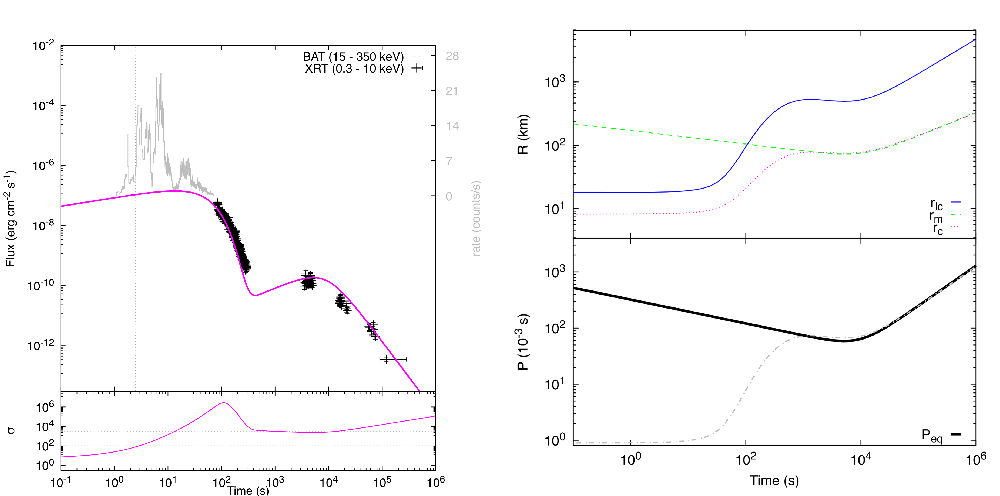<br />
图注：The same as Figure \(\ref{fig1:magnetar},\) but for a variable accretion rate at early times (Eq. \ref{M_dot_va}).<br />
对应解读：对应“prompt 与 extended emission 的模型拟合图”“X 射线光变拟合图”“两种吸积率模型的比较图”，以及关键图表逐图导读中的图 3/图 4 和模型拟合段落。<br />
入选理由：这是论文声称更优的可变吸积率情形，直接展示 BAT 计数光变、XRT 数据、磁星内部耗散最佳拟合曲线、磁化参数演化、临界半径和自旋周期演化。它最能检验日报强调的核心问题：模型是否能同时解释长 prompt、extended emission 与 X 射线阶段，而不只是匹配总持续时间。<br />
来源与置信度：\(arxiv_source\)；high；\(arxiv_source\) / \(mnras_template.tex\):figure[3]</p>
<p><strong>Fig02</strong><br />
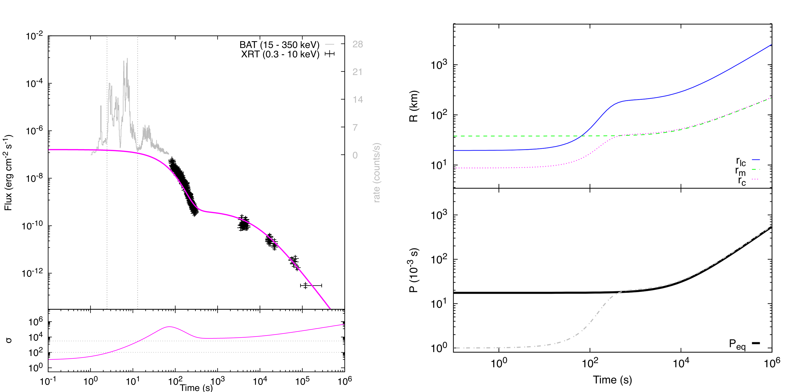<br />
图注：Left: The BAT light curve on counts and XRT data with the best-fit model curve generated with internal energy dissipation of the magnetar spin-down power (above) and the evolution of the magnetization parameter (below). The duration of the critical interval is marked by bold, dashed vertical lines. Right: The evolution of the critical radii (above) and the spin period (below). These plots are obtained considering the scenario in which the accretion rate at early times is constant (Eq. \ref{M_dot_co}).<br />
对应解读：对应“prompt 与 extended emission 的模型拟合图”“X 射线光变拟合图”“两种吸积率模型的比较图”，以及关键图表逐图导读中的图 2/图 4。<br />
入选理由：这是常数早期吸积率模型的对应拟合图，与 Fig03 形成最直接的物理对照。它展示同样的 BAT+XRT 光变拟合、磁化参数、临界半径和自旋周期，使读者能判断 \\(\\dot M\\propto t^0\\) 与 \\(\\dot M\\propto t^{1/2}\\) 在 prompt 尾部、extended emission 和 X 射线过渡阶段的差异。<br />
来源与置信度：\(arxiv_source\)；high；\(arxiv_source\) / \(mnras_template.tex\):figure[2]</p>
<p><strong>Fig01</strong><br />
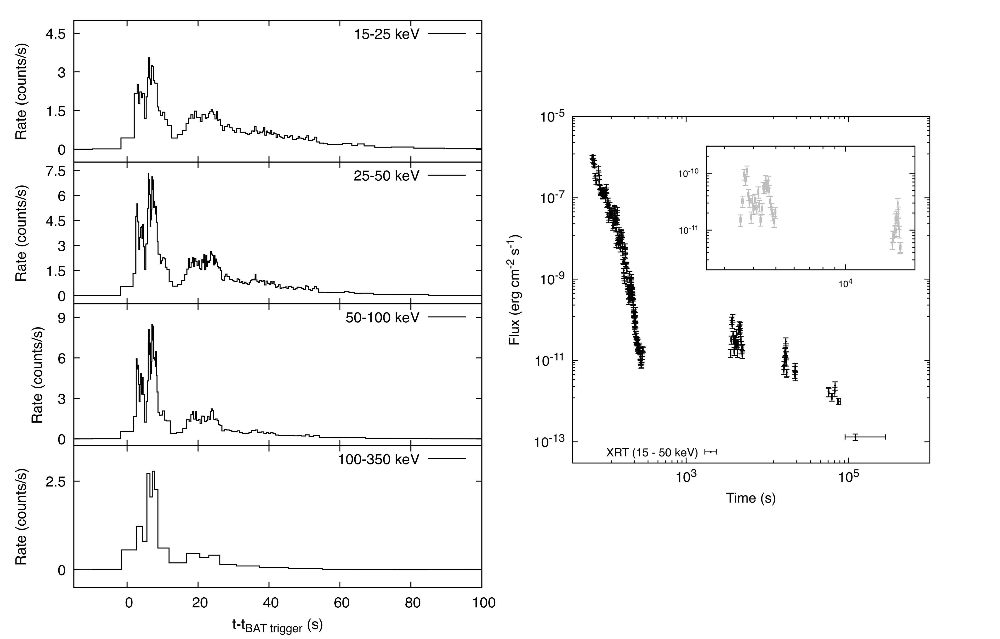<br />
图注：Gamma-ray light curves of GRB 211211A detected by Swift-BAT and -XRT in distinct energy channels.<br />
对应解读：对应“多波段光变总览”和关键图表逐图导读中的图 1。<br />
入选理由：该图给出 Swift-BAT 与 XRT 在不同能段下的 GRB 211211A 高能光变，是理解前兆、主暴、extended emission 与后续 X 射线阶段时间结构的基础。日报强调不要只看 \\(T_{90}\\)，而要看阶段间隔和斜率变化；Fig01 正是建立这些时间分段的原始观测图。<br />
来源与置信度：\(arxiv_source\)；high；\(arxiv_source\) / \(mnras_template.tex\):figure[1]</p>
<p><strong>Fig04</strong><br />
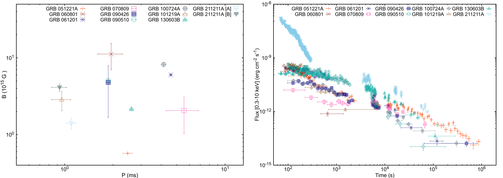<br />
图注：Left: Initial spin period ($P$) versus spin-down magnetic field ($B$) of a sample of sGRBs. Right: X-rays light curves of sGRBs detected by Swift-XRT satellite, including GRB~211211A. This sample was taken from \(\citep{lu14}.\) The spin-down magnetic field and period of GRB 211211A [A] and GRB 211211A [B] correspond to the best-fit values of constant and variable accretion scenarios, respectively.<br />
对应解读：对应“参数约束图或参数表”和模型拟合段落中关于 \\(P_0\\)、\\(B\\)、X 射线光变及与短暴样本比较的讨论。<br />
入选理由：该图把 GRB 211211A 在常数吸积率和可变吸积率两种最佳拟合下的初始自旋周期与磁场放到短暴样本中比较，并展示包含 GRB 211211A 的 Swift-XRT 光变样本。虽然不是完整后验置信区间图，但能检查最佳拟合 \\(P\\)–\\(B\\) 是否处在已有短暴磁星解释的合理区域。<br />
来源与置信度：\(arxiv_source\)；high；\(arxiv_source\) / \(mnras_template.tex\):figure[4]</p>
<h4 id="_51">强相关工作</h4>
<p>这篇工作与 GRB 211211A 的发现和后续多波段研究直接相关。已有研究强调该事件的长持续时间、缺少典型长暴超新星、以及与千新星候选体的关联；这些结果共同构成“长暴外观、并合来源”的张力。检索时可用关键词 “GRB 211211A kilonova long-duration merger extended emission magnetar”。</p>
<p>在理论上，它属于短暴 extended emission 与磁星中心引擎研究传统的一部分。早期模型已指出，并合后若形成亚稳定或长寿命中子星，磁偶极自转损失可解释 X 射线平台和延展辐射；相反观点则强调黑洞—吸积盘系统、喷流结构或 collapsar-like 通道也可能产生复杂长时标活动。检索关键词可包括 “millisecond magnetar short GRB extended emission”, “supramassive neutron star GRB plateau”, “fallback accretion magnetar merger”, “GRB duration classification progenitor”。</p>
<p><strong>相似工作</strong>：<br />
- https://arxiv.org/abs/2112.07699<br />
- https://arxiv.org/abs/2112.08716<br />
- https://arxiv.org/abs/2112.09709</p>
<p><strong>基础理论 / 方法工作</strong>：<br />
- https://arxiv.org/abs/astro-ph/0511251<br />
- https://arxiv.org/abs/0711.3889<br />
- https://arxiv.org/abs/1303.0338<br />
- https://arxiv.org/abs/1603.03080</p>
<p><strong>相反观点 / 张力线索</strong>：<br />
- https://arxiv.org/abs/2112.14190<br />
- https://arxiv.org/abs/2205.07670</p>
</details>
<h3 id="6-enhanced-all-distance-equi-zenith-angle-method-for-cosmic-ray-anisotropy-measurement">6. Enhanced All-Distance Equi-Zenith Angle Method for Cosmic-Ray Anisotropy Measurement</h3>
<ul>
<li>来源：arXiv / astro-ph.HE</li>
<li>链接：https://arxiv.org/abs/2605.29644v1</li>
<li>作者：Dong-Xu Sun, Dan Li, Wei Liu, Qiang Yuan, Yi-Qing Guo, Hong-bo Hu</li>
<li>评分：novelty 7/10，importance 7/10，relevance 9/10，final 8.70/10</li>
<li>推荐理由：改进宇宙线各向异性测量的等天顶角方法，可处理探测器效率不稳定和不完整年份数据，对LHAASO/HAWC等长期宇宙线阵列分析有实用方法价值。</li>
</ul>
<p><strong>中文题目</strong>：用于宇宙线各向异性测量的增强型全距离等天顶角方法</p>
<p><strong>做了什么</strong>：这篇文章改进了地面宇宙线阵列常用的全距离等天顶角方法，用来测量相对强度低于约 \(10^{-3}\) 的宇宙线各向异性。传统方法依赖同一天顶角方向的事件率比较来抵消大气和探测器瞬时变化，但当探测器效率随时间不稳定、数据覆盖不完整年周期时，残余系统误差会混入真实天球信号。作者提出的新版本把多个时间框架下的各向异性和探测效率一起从数据中求解，因而更适合长期运行状态不完全稳定的广延空气簇射阵列。</p>
<p><strong>为什么重要</strong>：PeV 以下宇宙线各向异性的幅度通常只有 \(0.1\%\) 或更低，任何未建模的探测效率漂移、气压温度效应、季节性变化、运行配置改变，都可能产生与真实各向异性同量级的伪信号。本文重要之处不在于提出新的宇宙线传播理论，而在于把一个常用背景估计方法扩展成可同时反演效率和天空各向异性的框架，直接针对高统计量宇宙线实验最棘手的系统误差源。</p>
<p><strong>理论 / 观测 / 仪器方法价值</strong>：对观测和方法学的价值很直接：它为 LHAASO、Tibet AS\(\gamma\)、HAWC、ARGO-YBJ、IceCube/IceTop 等类型的宇宙线各向异性分析提供了一种更稳健的相对曝光校正思路。对仪器运行不完全稳定、阵列逐步建设、触发条件变化或数据不足完整回归年周期的样本，新方法可以减少传统等天顶角法对长期稳定性的依赖。</p>
<p><strong>为什么应该关注</strong>：如果你关心 TeV–PeV 宇宙线各向异性、局域磁场结构、源分布或传播模型，那么你首先要相信观测图上的 \(10^{-4}\) 到 \(10^{-3}\) 结构不是仪器造成的。本文正是在这个层面上有价值：它讨论的不是信号解释，而是信号能否被可靠提取。对于要读或做宇宙线全天区相对强度图的人，这类方法论文决定了后续物理解释的可信度下限。</p>
<details class="paper-detail">
<summary>展开详细解读：文章讲解、背景、理论、重点章节、图表与相关工作</summary>
<h4 id="_52">文章详细讲解</h4>
<p>科学问题：地面宇宙线阵列看到的是随地方时、天顶角、方位角和探测器状态共同变化的事件率，而目标信号是在赤经、赤纬坐标上的微弱相对强度 \(\delta I\)。在 PeV 以下，宇宙线各向异性通常只有 \(10^{-4}\) 到 \(10^{-3}\)，远小于大气压强、温度、探测阈值、阵列死通道、触发效率等造成的计数率变化。全距离等天顶角方法的核心思想是：同一时刻、同一天顶角环上的不同方位视线穿过相近大气深度，探测器和大气的瞬时共同因子可以被相除或相减掉。但传统实现仍然容易受到探测效率长期不稳定和数据时间覆盖不完整的影响。</p>
<p>作者怎么做：本文提出“增强型”全距离等天顶角方法，把原先主要用于构造局域背景的步骤改写成一个同时求解问题。它不再把探测效率视为已知或长期稳定，而是允许效率由数据本身确定；同时，方法可以在多个时间框架中共同测量各向异性，例如太阳时、恒星时或反恒星时等框架。这样做的关键是利用等天顶角比较提供的相对约束，以及不同时间坐标中真实天球信号和仪器漂移投影方式不同这一事实，将天空各向异性、时间效率项和局域接受度项拆分开。</p>
<p>关键结果：文章声称新方法能在探测器阵列不具备长期稳定运行条件时，仍然以高精度恢复宇宙线各向异性；并且在数据没有覆盖完整回归年时也可行。这个结论对实际实验很重要，因为许多地面阵列在建设初期、升级期或维护期都会经历配置变化，传统方法往往需要严格挑选稳定运行段，牺牲统计量并引入选择偏差。增强方法的价值在于把“稳定性假设”部分替换为“从数据拟合效率”的约束问题。</p>
<p>局限和下一步：方法能否成功，取决于效率项、接受度项和真实天空各向异性之间是否存在未被打破的退化。例如，纯赤纬方向的各向异性、非常低阶的大尺度结构、与日变化同相的效率漂移，可能仍难完全分离。下一步最需要看的不是方法描述本身，而是注入模拟、伪实验、不同运行稳定性条件下的恢复偏差、以及真实实验数据中的残差诊断。若能在公开数据或实验内部样本中展示对已知人工注入信号的无偏恢复，这个方法的说服力会更强。</p>
<h4 id="_53">背景知识</h4>
<p>宇宙线各向异性研究试图测量到达地球的宇宙线通量在天球上的微小方向依赖。理想情况下，各向同性背景占绝对主导，局域源、星际磁场湍流、太阳圈调制、银河系传播梯度以及观测者运动只产生很小偏离。TeV 到 PeV 能段的观测已经显示出大尺度偶极或类偶极结构，以及若干中小尺度过量和亏损区域，但这些结构的物理起源仍未统一。</p>
<p>历史上，地面阵列测宇宙线各向异性面临一个根本困难：探测器不能像光学望远镜那样直接给出绝对全天曝光。它记录的是空气簇射次级粒子，事件率受大气质量、气压、温度、探测阈值、阵列几何、触发逻辑和数据质量筛选共同影响。由于真实各向异性很弱，哪怕 \(10^{-3}\) 级别的效率漂移也会污染结果。因此，背景估计方法几乎和宇宙线物理解读同等重要。</p>
<p>等天顶角方法是一类经典的相对背景方法。它利用同一时刻同一天顶角上的方向具有近似相同的大气路径长度和探测效率，把目标方向与相邻或全方位参考方向比较，从而抵消瞬时共同模式。全距离版本则在天顶角环上使用更多参考方向，提高统计精度并减少局部参考区域选择带来的偏差。许多亚洲高海拔阵列和广视场宇宙线实验都使用过类似思想。</p>
<p>现在值得重新看这个问题，是因为现代阵列的统计量已经足够大，统计误差越来越小，系统误差成为限制因素。LHAASO 等大型实验可以在很宽能区内测到极高统计量宇宙线样本，但阵列建设、探测器单元状态、运行条件和长期气候变化都会让“稳定曝光”假设变得脆弱。数据不覆盖完整年周期时，太阳时效应向恒星时泄漏的问题也会更明显。</p>
<p>该领域常见误区是把漂亮的相对强度天图直接当成物理天空图，而忽略背景构造过程已经滤掉或扭曲了某些角尺度的信号。另一个误区是认为同一天顶角比较能自动消除所有仪器效应；事实上，它主要消除瞬时共同因子，对长期效率变化、方位依赖接受度、局域坐标和天球坐标之间的混叠并不总是充分。本文的意义正是把这些隐含假设显式参数化。</p>
<h4 id="_54">基础理论 / 方法脉络</h4>
<p>从基础图像看，地面阵列测到的不是宇宙线原初通量本身，而是经过大气簇射发展、探测器响应和数据筛选后的计数率。某一局域方向的事件数可以近似写成“真实天球强度 \(\times\) 局域接受度 \(\times\) 时间效率 \(\times\) 暴露时间”的乘积。由于地球自转，固定局域方向会扫过不同赤经，因此可以用长时间观测把天球结构投影到事件率调制上。</p>
<p>宇宙线各向异性通常用相对强度表示，即真实强度 \(I(\alpha,\delta)\) 相对于平均强度 \(I_0(\delta)\) 的小偏差 \(\Delta I/I\)。地面广视场阵列对赤纬覆盖由纬度和最大天顶角决定，对赤经覆盖则依赖观测时间。若观测跨越许多恒星日且效率稳定，赤经方向的调制可以较好恢复；但赤纬方向的绝对归一化通常难以由单一地面阵列自洽确定。</p>
<p>等天顶角法的物理假设是，在一个短时间片内，同一天顶角环上不同方位方向的大气吸收和探测器总体效率近似相同。于是，目标方向计数与参考方向计数的比值主要反映天空强度差异，而不是总计数率涨落。全距离等天顶角法进一步使用同一天顶角环上的所有或多数方向构造参考背景，降低统计噪声。</p>
<p>本文的增强点可以理解为把传统“先估背景、再算相对强度”的流程转化成“同时估计背景、效率和多时间框架信号”的反问题。多时间框架很关键：太阳时调制常与气象或日照相关，恒星时调制对应固定天球结构，反恒星时常被用作季节性泄漏的诊断。若这些框架一起拟合，可以更有效识别某些系统性调制。</p>
<p>主要退化来自乘法分解的不唯一性。例如，把某个缓慢变化的因子归入时间效率，或归入大尺度天球各向异性，在数学上可能产生近似等价的计数预测。观测窗口不完整时，太阳时和恒星时频率相近但不完全相同，有限时间基线会导致谱泄漏。方位角接受度不对称、阵列局部遮挡、能量重建随天顶角变化，也都可能在相对强度图中留下结构化残差。</p>
<h4 id="_55">公式与推导</h4>
<p>第一步，从事件率的乘法模型出发。对时间 bin \(t\) 和局域方向 bin \(p\)，期望计数可写为</p>
<div class="math-display">\[\mu_{tp}=\Phi_0\, A_p\, \epsilon_t\, \left[1+\delta I\left(\alpha_{tp},\delta_{tp}\right)\right] \Delta t .\]</div>
<p>这里 \(\Phi_0\) 是各向同性归一化通量，\(A_p\) 是局域接受度，\(\epsilon_t\) 是探测效率或总有效运行状态，\((\alpha_{tp},\delta_{tp})\) 是由地球自转把局域方向 \(p\) 映射到天球后的坐标，\(\delta I\) 是待测相对各向异性，\(\Delta t\) 是时间 bin 宽度。适用条件是各向异性小、能区和质量成分选择固定、每个 bin 内响应变化可忽略。</p>
<p>第二步，传统等天顶角比较利用同一 \(t\) 和同一天顶角环 \(z\) 上的参考方向集合 \(R(z)\)。若 \(A_p\) 在同一环上已知或可由平均估计，参考背景可写为</p>
<div class="math-display">\[B_{tp}=\frac{A_p}{\sum_{q\in R(z)} A_q}\sum_{q\in R(z)} N_{tq} .\]</div>
<p>其中 \(N_{tq}\) 是观测计数，\(B_{tp}\) 是目标方向的背景估计。这个表达式说明共同效率 \(\epsilon_t\) 在同一时间片内近似抵消，但它也暴露了问题：若 \(A_p\) 或 \(\epsilon_t\) 随时间不稳定，简单平均背景会有偏。</p>
<p>第三步，相对强度估计通常近似为</p>
<div class="math-display">\[\widehat{\delta I}_{tp}=\frac{N_{tp}-B_{tp}}{B_{tp}} .\]</div>
<p>当 \(B_{tp}\) 足够大且背景无偏时，\(\widehat{\delta I}_{tp}\) 是局域视线对应天球像素的相对强度估计。由于真实信号要在许多 \((t,p)\) 对上合并，这一步本质上是把局域残差投影回天球。</p>
<p>第四步，增强方法可抽象为同时拟合 \(A_p\)、\(\epsilon_t\) 和一个或多个时间框架下的各向异性项。若用框架索引 \(k\) 表示恒星时、太阳时等贡献，则</p>
<div class="math-display">\[\mu_{tp}=A_p\,\epsilon_t\,\left[1+\sum_k \delta I_k\left(\Omega_{tp}^{(k)}\right)\right] .\]</div>
<p>\(\Omega_{tp}^{(k)}\)<br />
) 是在第 \(k\) 个时间坐标中对应的方向或相位。该式的物理含义是：同一批计数可以同时约束天球固定信号、太阳日相关信号和效率变化，而不是把其中某一类预先当作背景。</p>
<p>第五步，计数统计通常可用泊松似然描述：</p>
<div class="math-display">\[\ln \mathcal{L}=\sum_{t,p}\left[N_{tp}\ln \mu_{tp}-\mu_{tp}-\ln\left(N_{tp}!\right)\right] .\]</div>
<p>在高计数极限，最大化 \(\ln\mathcal{L}\) 等价于最小化加权残差平方和。这里的关键是 \(\mu_{tp}\) 包含效率和各向异性的共同参数，因此拟合会自然给出参数协方差，而不是只给出形式上的统计误差。</p>
<p>第六步，小各向异性条件下可线性化：</p>
<div class="math-display">\[\frac{N_{tp}-A_p\epsilon_t}{A_p\epsilon_t}\simeq \sum_k \delta I_k\left(\Omega_{tp}^{(k)}\right)+\eta_{tp} ,\]</div>
<p>其中 \(\eta_{tp}\) 是统计噪声和未建模系统误差。这个线性形式有助于理解为什么多时间框架拟合可行：不同 \(k\) 的模板在观测窗口中的正交性越好，越容易分离。</p>
<p>第七步，若关注一阶谐波，各向异性在某一时间框架中可写为</p>
<div class="math-display">\[\delta I_k(\phi)=a_k\cos\phi+b_k\sin\phi=r_k\cos\left(\phi-\phi_k\right) .\]</div>
<p>其中 \(\phi\) 是对应时间相位，\(a_k\) 和 \(b_k\) 是余弦、正弦系数，\(r_k=\sqrt{a_k^2+b_k^2}\)，\(\phi_k=\tan^{-1}(b_k/a_k)\)。这类表达式常用于检查太阳时、恒星时和反恒星时的一阶调制是否存在泄漏。</p>
<p>第八步，有限观测窗口会造成频率泄漏。若真实调制为 \(s(t)\)，窗口为 \(W(t)\)，观测到的傅里叶分量满足</p>
<div class="math-display">\[\widetilde{s}_{\rm obs}(\omega)=\int \widetilde{W}(\omega-\omega')\widetilde{s}(\omega')\,d\omega' .\]</div>
<p>这里 \(\omega\) 是角频率，波浪号表示傅里叶变换。这个公式解释了为什么数据不满一年时要特别小心：太阳频率附近的功率可能通过 \(\widetilde{W}\) 的旁瓣泄漏到恒星频率附近。</p>
<p>第九步，信号显著性或模型改进可用似然比近似诊断：</p>
<div class="math-display">\[TS=2\left[\ln\mathcal{L}(\widehat{\theta}_{\rm aniso})-\ln\mathcal{L}(\widehat{\theta}_{0})\right] .\]</div>
<p>\(\widehat{\theta}_{\rm aniso}\) 是含各向异性模型的最佳参数，\(\widehat{\theta}_{0}\) 是无各向异性或简化背景模型的最佳参数。若正则条件满足，\(TS\) 可近似与自由度对应的 \(\chi^2\) 分布比较；但在强约束、边界参数或高度相关模板下，需要用伪实验校准。</p>
<h4 id="_56">模型拟合 / 应用方法</h4>
<p>这类方法的拟合对象至少包括三个层次：局域接受度 \(A_p\)、时间效率 \(\epsilon_t\)、以及天球或时间框架中的相对强度 \(\delta I\)。传统等天顶角法通常把 \(A_p\) 和 \(\epsilon_t\) 的影响通过局部归一化近似消去，而本文强调将效率作为可由数据约束的未知量。实际实现中，可能需要对 \(A_p\) 施加平滑性、天顶角环归一化或方位对称性约束，否则参数数目会过多。</p>
<p>似然层面，宇宙线计数自然服从泊松统计；在每个 bin 计数很高时，也可使用高斯近似和加权最小二乘。需要关注的是，形式统计误差往往不是主导误差。效率漂移的时间尺度、气象变量相关性、数据质量切割、阵列运行配置变化，会通过协方差矩阵或残差结构体现出来。因此，一个可信分析不应只报告相对强度图，还应报告效率解、残差随时间和局域方向的分布。</p>
<p>参数退化是核心问题。\(A_p\) 的方位结构与固定天球结构在某些观测窗口下可能混叠；\(\epsilon_t\) 的日周期或季节周期变化可能泄漏到太阳时或恒星时各向异性；大尺度偶极中某些分量对单站地面阵列不敏感。为打破退化，常见做法包括固定某些归一化条件、使用多个时间框架联合拟合、引入反恒星时检验、用模拟注入信号检验恢复率。</p>
<p>残差诊断应分层看。第一层是 \((N-\mu)/\sqrt{\mu}\) 是否接近标准正态，且不随时间、天顶角、方位角呈现结构。第二层是太阳时、恒星时、反恒星时谐波是否符合预期：反恒星时若出现显著信号，通常提示季节性或窗口泄漏。第三层是将数据按年份、运行配置、能量区间、天顶角范围拆分后，各向异性结构是否稳定。</p>
<p>模型可能失败的场景包括：探测器效率变化不是单一时间因子，而是同时具有空间非均匀性；局域接受度在短时间内快速变化；气象效应依赖能量和天顶角；真实天空信号含有被背景估计方法强烈滤除的大尺度模式。实际应用时，增强方法应与独立气象校正、数据质量选择、能量重建系统误差评估、以及不同背景方法的交叉比较一起使用。</p>
<h4 id="_57">重点章节 / 结果段落怎么读</h4>
<p>数据与问题设定部分应首先看作者如何定义全距离等天顶角方法的输入量：时间 bin、天顶角环、方位角 bin、能量或簇射规模选择、以及相对强度的坐标系。如果这些定义不清楚，后面的效率拟合很难判断是否充分约束。</p>
<p>方法部分是全文重点。读者应关注传统方法中哪些量被默认稳定，增强方法又把哪些量改成待求参数。尤其要看多时间框架联合测量的数学形式：太阳时、恒星时和其他框架是否作为独立模板出现，它们之间如何归一化，是否设置约束以避免任意常数或大尺度模式退化。</p>
<p>模拟或验证部分应重点读。对这种方法论文，最有说服力的不是推导本身，而是人工注入各向异性、加入探测效率漂移后能否无偏恢复。应检查不同效率不稳定幅度、不同数据覆盖长度、不同各向异性角尺度下的偏差和方差。</p>
<p>结果部分如果包含与传统全距离等天顶角法的比较，应看增强方法是否降低了假信号、是否改善了反恒星时残差、是否在不完整年数据中保持稳定。不要只看最终天图相似与否，还要看差分图和谐波参数的变化。</p>
<p>讨论或附录部分通常包含稳健性检验。读者应寻找归一化约束、迭代收敛、参数初值依赖、binning 选择、时间段拆分、以及统计显著性校准等内容。这些细节决定该方法能否迁移到其他实验。</p>
<h4 id="_58">建议重点查看的图表</h4>
<ol>
<li>
<p>方法流程图或坐标示意图：看局域坐标、天球坐标、不同时间框架之间如何转换，特别是同一天顶角环的参考方向如何选取。</p>
</li>
<li>
<p>探测效率重建图：横轴通常是时间，纵轴是相对效率或归一化计数率。应看增强方法恢复的 \(\epsilon_t\) 是否跟输入或外部监测一致，残差是否有日周期、季节周期。</p>
</li>
<li>
<p>注入恢复测试图：看输入各向异性与重建各向异性的差分，重点关注 \(10^{-4}\) 量级偏差、边缘赤纬带、低阶谐波相位是否被扭曲。</p>
</li>
<li>
<p>传统方法与增强方法对比图：最好检查相对强度天图、差分天图和残差直方图，而不是只看视觉上是否相似。</p>
</li>
<li>
<p>多时间框架谐波结果：看太阳时、恒星时、反恒星时的一阶或二阶振幅和相位。反恒星时显著不为零通常是系统误差警报。</p>
</li>
<li>
<p>数据覆盖长度测试：若文章展示不完整年数据，需看恢复偏差如何随观测时长变化，以及窗口函数是否导致太阳时到恒星时泄漏。</p>
</li>
<li>
<p>残差显著性分布：看 \((N-\mu)/\sqrt{\mu}\) 的均值、宽度和尾部。宽度大于 \(1\) 或有空间结构，说明未建模系统误差仍在。</p>
</li>
</ol>
<h4 id="_59">关键图表逐图导读</h4>
<p>图 1：如果是方法示意图，横纵或极坐标应表示局域天顶角和方位角，同一天顶角环上的多个方向被用作参考。读图时要确认“全距离”是否意味着使用整个环，还是排除了目标附近区域；排除策略会影响中小尺度信号的自减弱。</p>
<p>图 2：若展示效率随时间变化，横轴应是观测时间或运行日，纵轴是相对效率 \(\epsilon_t\) 或归一化事件率。模型线若能跟随长期漂移但不吸收恒星时固定信号，才是理想表现。读图陷阱是把事件率变化都看成效率；气象和真实太阳时调制也可能在其中。</p>
<p>图 3：若是模拟输入与重建的各向异性天图，坐标通常为赤经和赤纬，颜色表示 \(\delta I\)。应比较输入图、重建图和差分图。最关键的不是颜色图是否漂亮，而是差分的均方根是否低于目标灵敏度，以及大尺度模式是否被系统性压低。</p>
<p>图 4：若比较传统方法和增强方法，建议看同一色标下的差分。增强方法若主要改善探测效率不稳定，它应减少与运行时间、局域坐标或反恒星时相关的结构，而不应随意改变稳定天球信号的相位。</p>
<p>图 5：若给出谐波振幅和相位，横轴可能是能量、时间框架或谐波阶数，纵轴是振幅 \(r_k\) 或相位 \(\phi_k\)。恒星时信号可有物理含义，太阳时信号可能含 Compton-Getting 或气象项，反恒星时则多用于系统误差诊断。不要把所有显著峰都解释成宇宙线源信号。</p>
<p>图 6：若是残差或显著性分布，横轴是标准化残差，纵轴是 bin 数或概率密度。理想情况下接近均值 \(0\)、宽度 \(1\) 的高斯分布；若尾部过宽、偏斜或按天顶角分组后不同，说明响应模型仍缺项。</p>
<h4 id="_60">论文原图 / 可嵌入图片</h4>
<p><strong>Fig06</strong><br />
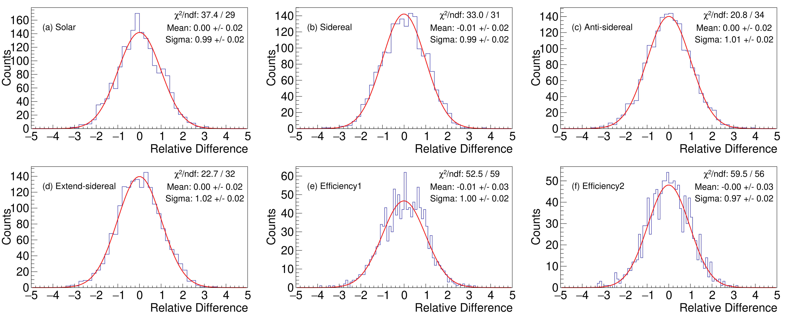<br />
图注：The same distributions as Figure~\(\ref{fig:4pull_dis_eff_stable}\) but considering unstable detection efficiency. Panel (e) shows the distribution of the relative difference with respect to the input efficiency in the first time interval, and panel (f) presents the corresponding results for the second time interval.<br />
对应解读：建议重点查看的图表 2、3、5、7；关键图表逐图导读中关于效率重建、注入恢复、多时间框架和残差分布的部分；模型拟合段落中关于不稳定探测效率与系统误差诊断的讨论。<br />
入选理由：这张图直接检验本文最核心主张：在探测效率不稳定时，增强方法能否同时恢复不同时间框架的各向异性和效率项。它包含太阳时、恒星时、反恒星时、扩展恒星时的相对差分分布，并额外给出两个时间区间相对于输入效率的差异，能同时支撑对恢复偏差、系统泄漏和效率拟合精度的解读，比单纯天图或一维曲线更有诊断价值。<br />
来源与置信度：\(arxiv_source\)；high；\(arxiv_source\) / main.tex:figure[6]</p>
<p><strong>Fig05</strong><br />
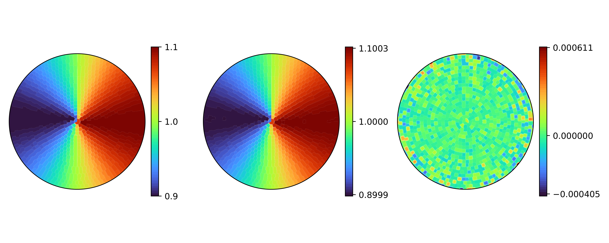<br />
图注：Comparison of the expected and iterated efficiencies. The left panel shows the distribution of expected efficiency, the middle panel shows the iterated efficiency, and the right panel presents the residual map between them. Each skymap is centered at the zenith and extends to a zenith angle of $40^\circ$. The vertical direction points north. Following the clockwise direction, the sequence of azimuthal angles is east, south, and west.<br />
对应解读：建议重点查看的图表 2；关键图表逐图导读图 2；模型拟合段落中关于由数据约束探测效率 \\(\\epsilon_t\\) 或局域效率/接受度结构的讨论。<br />
入选理由：该图明确比较 expected efficiency、iterated efficiency 和 residual map，是判断增强方法是否真正恢复探测效率而非把天空信号吸收到效率项中的关键证据。其局域坐标天顶中心图还能帮助检查效率残差是否具有方位角或天顶角结构，直接对应日报强调的系统误差和接受度退化问题。<br />
来源与置信度：\(arxiv_source\)；high；\(arxiv_source\) / main.tex:figure[5]</p>
<p><strong>Fig02</strong><br />
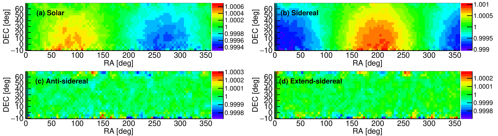<br />
图注：Anisotropy sky maps of the four time frames derived by the enhanced method. Panels (a)--(d) correspond to the solar, sidereal, anti-sidereal, and extended-sidereal time, respectively. The map is smoothed with a $5^\circ$ radius top-hat function.<br />
对应解读：建议重点查看的图表 4、5；关键图表逐图导读图 3、图 5；详细解读中关于多时间框架共同测量太阳时、恒星时、反恒星时和扩展恒星时各向异性的部分。<br />
入选理由：这张图展示增强方法得到的四个时间框架各向异性天图，尤其包含反恒星时和扩展恒星时结果，可用于判断是否存在由季节性或窗口函数导致的系统泄漏。它是连接方法输出与物理/系统误差解释的总览图，适合嵌入日报说明多时间框架联合测量的意义。<br />
来源与置信度：\(arxiv_source\)；high；\(arxiv_source\) / main.tex:figure[2]</p>
<p><strong>Fig07</strong><br />
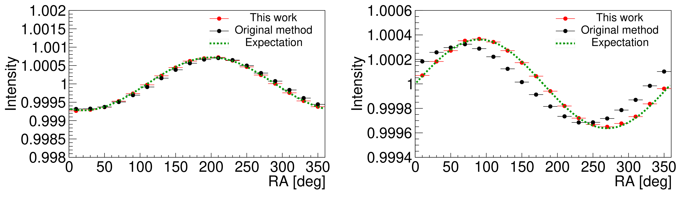<br />
图注：Comparison of the 1D relative intensity distributions obtained with the original (black dots) and enhanced (red dots) methods, for the case where the data set does not cover an integer number of tropical years. The green dashed line represents the expected distribution.<br />
对应解读：建议重点查看的图表 4、6；关键图表逐图导读图 4；详细解读中关于数据未覆盖完整回归年时增强方法仍可行的关键结果。<br />
入选理由：该图直接比较原始方法与增强方法在非整数回归年数据覆盖下的一维相对强度恢复，并与期望分布对照。它针对论文摘要中特别强调的“不完整 tropical years 也可行”这一结论，是评估传统方法失效和增强方法改进幅度的最直接图证。<br />
来源与置信度：\(arxiv_source\)；high；\(arxiv_source\) / main.tex:figure[7]</p>
<p><strong>Fig08</strong><br />
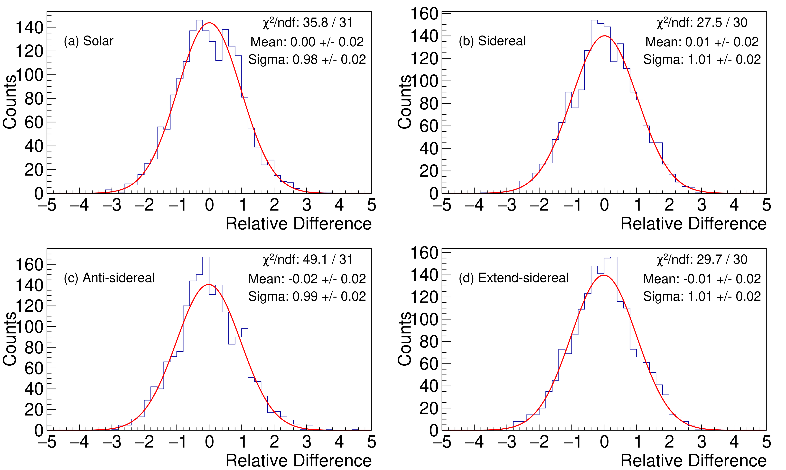<br />
图注：The same distributions as Figure~\(\ref{fig:4pull_dis_eff_stable}\) but considering incomplete tropical years ($500$ solar days).<br />
对应解读：建议重点查看的图表 3、6、7；关键图表逐图导读图 6；模型拟合段落中关于不完整观测窗口、泄漏和残差诊断的讨论。<br />
入选理由：这张图给出 500 个太阳日不完整回归年情况下的相对差分分布，补充 Fig07 的方法对比，能量化增强方法在窗口不完整时的恢复偏差和残差宽度。它比单独一维强度曲线更适合检查是否存在太阳时到恒星时或反恒星时的泄漏。<br />
来源与置信度：\(arxiv_source\)；high；\(arxiv_source\) / main.tex:figure[8]</p>
<p><strong>Fig03</strong><br />
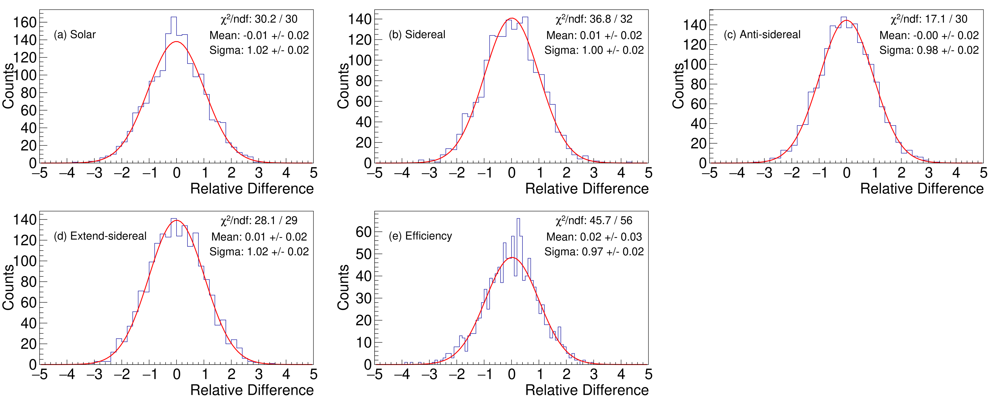<br />
图注：The distributions of the relative difference for four time frames considering stable efficiency. Panels (a)-(d) correspond to solar, sidereal, anti-sidereal, and extended-sidereal time, respectively. Panel (e) shows the distribution of the relative difference with respect to the input efficiency for the case of stable efficiency. The red solid lines are the Gaussian fit. The fitted values of $\chi^2$, mean and standard deviation are indicated in the upper right corner of each panel.<br />
对应解读：建议重点查看的图表 3、5、7；关键图表逐图导读图 3、图 5、图 6；模型拟合段落中关于稳定效率基准测试和残差高斯性的讨论。<br />
入选理由：该图是在稳定效率假设下的基准注入恢复检验，包含四个时间框架的相对差分分布和相对于输入效率的差异，并用高斯拟合报告均值、标准差和 \\(\\chi^2\\)。它可作为 Fig06 不稳定效率测试的对照，帮助判断增强方法的误差底限和统计残差是否接近理想高斯。<br />
来源与置信度：\(arxiv_source\)；high；\(arxiv_source\) / main.tex:figure[3]</p>
<h4 id="_61">强相关工作</h4>
<p>这篇工作应放在宇宙线各向异性背景估计方法的脉络中看。Milagro、Tibet AS\(\gamma\)、ARGO-YBJ、HAWC、IceCube 等实验都报告过 TeV 到 PeV 能区的大尺度和中小尺度各向异性，但不同实验的视场、能量响应、背景估计和系统误差处理不同。检索关键词可用“cosmic-ray anisotropy equi-zenith angle method”、“direct integration background cosmic rays”、“sidereal solar anti-sidereal anisotropy”和“large-scale anisotropy TeV cosmic rays”。</p>
<p>理论上，宇宙线各向异性常与扩散传播、局域源、银河磁场和 Compton-Getting 效应联系起来；观测上，最主要张力是不同能区和不同实验看到的相位、振幅和角尺度并不容易由简单偶极扩散图像统一解释。方法论文的作用是减少“观测系统误差”这一解释空间，使剩下的张力更可能指向真实传播物理。建议同时检索“Compton-Getting effect cosmic rays”、“cosmic ray diffusion dipole anisotropy”、“heliospheric influence TeV anisotropy”。</p>
<p><strong>相似工作</strong>：<br />
- https://arxiv.org/abs/2605.29644<br />
- https://arxiv.org/abs/0801.3827<br />
- https://arxiv.org/abs/1105.2326</p>
<p><strong>基础理论 / 方法工作</strong>：<br />
- https://ui.adsabs.harvard.edu/abs/1935PhRv...47..817C/abstract<br />
- https://ui.adsabs.harvard.edu/abs/1983ApJ...272..317L/abstract</p>
<p><strong>相反观点 / 张力线索</strong>：<br />
（未提供）</p>
</details>
<h3 id="7-impact-of-the-equation-of-state-on-core-collapse-supernovae-i-the-low-astro_math_1525-instability">7. Impact of the equation of state on core collapse supernovae I: the low-$T/|W|$ instability</h3>
<ul>
<li>来源：arXiv / astro-ph.HE</li>
<li>链接：https://arxiv.org/abs/2605.28944v1</li>
<li>作者：Marco Cusinato, Martin Obergaulinger, Miguel Ángel Aloy</li>
<li>评分：novelty 7/10，importance 8/10，relevance 8/10，final 8.70/10</li>
<li>推荐理由：astro-ph.HE 核心坍缩超新星三维中微子-MHD模拟，系统比较5种核物态方程对低T/|W|不稳定性及GW/中微子多信使信号的影响；虽非伽马射线主题，但结果清楚且对快速旋转CCSN多信使诊断有较高价值。</li>
</ul>
<p><strong>中文题目</strong>：核物态方程如何影响核心坍缩超新星（一）：低 \(T/|W|\) 不稳定性</p>
<p><strong>做了什么</strong>：这篇文章用三维中微子磁流体力学模拟研究一个快速旋转的 \(35\,\mathrm{M}_\odot\) 大质量恒星核心坍缩，比较五种有限温核物态方程对新生原中子星中低 \(T/|W|\) 非轴对称不稳定性的影响。核心结论是：在这个快速旋转前身星中，不稳定性在所有物态方程模型里都会出现，说明触发本身相当稳健；但其出现时间、主导方位模、持续时间、引力波准周期频率以及中微子光度调制都明显依赖物态方程。作者强调，低 \(T/|W|\) 不稳定性驱动的引力波主频与原中子星的紧致度、有效刚度和旋转结构相关，未来若在银河系或近邻核心坍缩事件中探测到类似信号，可能为高密度核物质物态方程提供一个独立诊断。</p>
<p><strong>为什么重要</strong>：快速旋转核心坍缩超新星是少数能同时产生强引力波、中微子和电磁瞬变的天体物理场景之一。低 \(T/|W|\) 不稳定性不像经典动力学杆模那样要求极高的旋转能比例，因此在实际坍缩模型中更可能出现。本文重要之处在于，它不是只问“会不会不稳定”，而是系统比较不同核物态方程如何改变不稳定性的时间、空间结构和多信使可观测量，从而把高密度核物理与可测引力波频率联系起来。</p>
<p><strong>理论 / 观测 / 仪器方法价值</strong>：对理论而言，这项工作给出了有限温核物态方程、原中子星结构、差分旋转和非轴对称模之间的三维动力学联系。对观测而言，它提示低 \(T/|W|\) 信号的频率漂移和准周期结构可作为物态方程诊断，而中微子光度的方向相关调制可作为伴随验证。对方法而言，文章展示了在三维中微子磁流体模拟中同时追踪模分解、引力波和中微子方向信号的分析框架。</p>
<p><strong>为什么应该关注</strong>：如果你关心核心坍缩超新星引力波模板、原中子星振荡谱、高密度核物质约束，或多信使事件如何从“探测到”走向“反演物理”，这篇文章都值得看。它提醒我们：同一个前身星和旋转设定下，物态方程不一定决定不稳定性是否发生，但会决定信号在哪里、什么时候、以什么频率出现；这些差异正是未来观测最可能利用的信息。</p>
<details class="paper-detail">
<summary>展开详细解读：文章讲解、背景、理论、重点章节、图表与相关工作</summary>
<h4 id="_62">文章详细讲解</h4>
<p>科学问题：快速旋转核心坍缩后形成的原中子星具有强差分旋转、高温、强中微子冷却和可能的磁场放大。在这种环境中，非轴对称低 \(T/|W|\) 不稳定性可以在旋转动能远低于经典动力学杆模阈值时出现，产生螺旋结构、准周期引力波和方向依赖的中微子调制。本文要回答的问题是：这种不稳定性是否对核物态方程敏感？如果敏感，敏感的是触发条件，还是触发后的频率、模结构和多信使输出？</p>
<p>作者怎么做：文章对同一个快速旋转 \(35\,\mathrm{M}_\odot\) 前身星进行三维中微子磁流体力学模拟，并替换五种有限温核物态方程。这样做的好处是尽量固定前身星、旋转和数值框架，把差异主要归因于高密度物质的压强、热响应、对称能和原中子星半径演化。作者追踪原中子星的密度、角速度、紧致度、旋转能与引力束缚能之比 \(T/|W|\)，并对非轴对称密度扰动做方位模分解，重点看 \(m=1\)、\(m=2\) 等低阶螺旋模。同时，他们计算引力波应变和不同观测方向上的中微子光度，寻找不稳定性留下的共同频率特征。</p>
<p>关键结果：低 \(T/|W|\) 不稳定性在所有物态方程模型中均出现，说明在本文快速旋转设定下，它不是某个特定物态方程的偶然产物。不过，不同物态方程会改变原中子星的半径、质量分布、角速度剖面和紧致度，从而改变不稳定性的起始时间、主导方位模、持续时间和信号频率。文章指出，大尺度螺旋模会产生准周期引力波辐射，并调制中微子光度，尤其在接近赤道面的视线方向上更明显。引力波主频与原中子星的有效刚度和紧致程度相关：更紧致、有效刚度更高的模型倾向于给出更高的低 \(T/|W|\) 相关频率。</p>
<p>局限和下一步：本文结论严格适用于所采用的快速旋转 \(35\,\mathrm{M}_\odot\) 模型、选定的旋转律、磁场初值、中微子输运近似和数值分辨率。现实恒星是否普遍保留如此强的核心角动量仍是恒星演化中的大问题。低 \(T/|W|\) 信号与物态方程的关系也可能被前身星结构、旋转分布、爆炸能量、黑洞形成时间或磁旋转喷流改变。下一步应扩展到不同前身星质量、不同初始角动量、不同磁场强度和更完整的中微子输运，并把模拟输出转换成探测器可用的引力波和中微子联合推断框架。</p>
<h4 id="_63">背景知识</h4>
<p>核心坍缩超新星中，铁核失稳坍缩到核密度附近后反弹，形成激波和一个炽热、富中微子的原中子星。若坍缩核心有足够角动量，反弹后的原中子星会差分旋转，赤道区域和内部剪切层可以储存大量自由能。非轴对称扰动一旦从噪声或湍动中增长，就会把旋转能转化为螺旋波、声波、引力波和中微子发射的时间调制。</p>
<p>历史上，旋转自引力流体的不稳定性常以 \(T/|W|\) 分类，其中 \(T\) 是旋转动能，\(|W|\) 是引力束缚能。经典动力学杆模不稳定性通常需要 \(T/|W|\) 达到较高阈值，而低 \(T/|W|\) 不稳定性可以在更低旋转能比例下通过差分旋转、共转点和剪切流机制出现。因此它比“极端杆模”更有现实天体物理意义，尤其适合快速但未必接近破裂旋转的原中子星。</p>
<p>核物态方程决定高密度物质在给定密度、温度和电子丰度下的压强、声速、热容和组成。有限温物态方程在核心坍缩中尤为关键，因为原中子星不是冷的静态中子星，而是温度可达数十 \(\mathrm{MeV}\)、中微子仍部分俘获、成分不断演化的动态对象。不同物态方程会给出不同的原中子星半径、紧致度、最大质量和振荡频率，因此自然会影响非轴对称模。</p>
<p>这个问题现在值得重新看，是因为多信使观测正在从概念走向实际约束。地面引力波探测器对银河系核心坍缩事件的 \(\mathrm{kHz}\) 附近信号已有一定敏感度，下一代探测器会更强；中微子探测器也能在银河系事件中给出毫秒量级时间结构。若引力波频率、中微子调制和数值模拟之间能建立稳健映射，就可能把一次近邻超新星变成高密度核物理实验。</p>
<p>常见误区有三点。第一，不应把低 \(T/|W|\) 不稳定性简单等同于经典杆模，它的触发机制和阈值不同，差分旋转剖面非常重要。第二，不应认为物态方程只影响冷中子星半径；在核心坍缩中，有限温、电子丰度和中微子过程同样重要。第三，不应把一个引力波频率峰直接解释为唯一的物态方程测量，因为前身星、旋转、视角、探测器噪声和数值系统误差都会参与退化。</p>
<h4 id="_64">基础理论 / 方法脉络</h4>
<p>最基本的物理图像是：坍缩把引力势能释放为内能、中微子辐射、动能和旋转能。若核心在坍缩前有角动量守恒近似，半径缩小时角速度急剧上升，形成快速旋转的原中子星。由于不同质量壳层坍缩和反弹的时刻不同，角速度通常不是刚体分布，而是明显差分旋转。差分旋转储存的自由能可被非轴对称扰动提取。</p>
<p>低 \(T/|W|\) 不稳定性的一个重要概念是共转区域。对方位模 \(m\) 而言，扰动角频率可写成模式频率与方位数的组合；当局部流体角速度与模式图样速度匹配时，波与背景剪切流交换角动量的效率很高。原中子星内部若存在宽广的差分旋转层，某些 \(m=1\) 或 \(m=2\) 模可能在较低的 \(T/|W|\) 下增长。</p>
<p>本文的模型假设包括三维广义相对论或近似相对论框架下的中微子磁流体演化、有限温核物态方程闭合关系，以及对中微子冷却和加热的输运近似。关键量包括旋转能 \(T\)、引力束缚能 \(W\)、原中子星半径、中心密度、紧致度、角速度剖面 \(\Omega(r)\)、方位模振幅 \(A_m\)、引力波应变 \(h\) 和中微子光度 \(L_\nu\)。这些量共同连接了流体动力学、核物理和可观测信号。</p>
<p>观测方法上，引力波信号通常看时频图、谱峰、偏振和视角依赖；中微子信号则看不同味道光度与平均能量的毫秒级调制。低 \(T/|W|\) 不稳定性若产生大尺度螺旋模，通常会在引力波和中微子中留下相近或相关的准周期时间尺度，但两者的可见性不同：引力波更直接响应非轴对称质量四极矩，中微子光度更受温度、发射面形变、吸收层和视角影响。</p>
<p>主要退化和系统误差来自前身星角动量、物态方程、数值分辨率、中微子输运、磁场和引力处理。更高频的信号可能来自更紧致的原中子星，也可能来自不同旋转剖面或更晚的收缩阶段；中微子调制幅度变弱可能是物理上的发射各向异性小，也可能是视角不利或输运近似抹平了角向结构。因此，单一诊断量不够，必须联合模结构、时频演化、原中子星结构和多信使相干性。</p>
<h4 id="_65">公式与推导</h4>
<p>第一步从能量分解开始。旋转自引力流体中常用的无量纲旋转强度是</p>
<div class="math-display">\[\beta_{\rm rot}\equiv \frac{T}{|W|},\qquad T=\frac{1}{2}\int \rho \Omega^2 \varpi^2\,dV .\]</div>
<p>这里 \(\rho\) 是质量密度，\(\Omega\) 是局部角速度，\(\varpi\) 是到旋转轴的柱半径，\(dV\) 是体积元，\(T\) 是旋转动能，\(W\) 是引力束缚能。低 \(T/|W|\) 不稳定性的名称正来自 \(\beta_{\rm rot}\) 低于经典杆模阈值时仍可能增长。</p>
<p>第二步估计引力束缚能与紧致度的关系。量级上可写为</p>
<div class="math-display">\[|W|\sim \frac{G M_{\rm PNS}^2}{R_{\rm PNS}},\qquad C_{\rm PNS}\equiv \frac{G M_{\rm PNS}}{R_{\rm PNS}c^2} .\]</div>
<p>其中 \(M_{\rm PNS}\) 和 \(R_{\rm PNS}\) 分别是原中子星质量和特征半径，\(C_{\rm PNS}\) 是紧致度，\(G\) 是引力常数，\(c\) 是光速。物态方程通过压强支撑改变 \(R_{\rm PNS}\) 和密度分布，从而改变 \(|W|\)、\(\beta_{\rm rot}\) 与振荡频率。</p>
<p>第三步用角动量守恒理解快速旋转的形成。在近似轴对称坍缩中，单个质量壳层的比角动量满足</p>
<div class="math-display">\[j\simeq \Omega r^2={\rm const.},\qquad \Omega_{\rm after}\simeq \Omega_{\rm before}\left(\frac{r_{\rm before}}{r_{\rm after}}\right)^2 .\]</div>
<p>这里 \(j\) 是比角动量，\(r_{\rm before}\) 与 \(r_{\rm after}\) 是坍缩前后的特征半径。不同壳层收缩因子不同会自然产生 \(\Omega(r)\) 的差分结构，这正是低 \(T/|W|\) 模可以利用的自由能来源。</p>
<p>第四步写出方位模分解。对某个密度权重区域，可定义</p>
<div class="math-display">\[A_m(t)=\frac{\left|\int \rho(r,\theta,\phi,t)e^{im\phi}\,dV\right|}{\int \rho(r,\theta,\phi,t)\,dV} .\]</div>
<p>其中 \(m\) 是方位波数，\(\phi\) 是方位角，\(A_m\) 衡量 \(m\) 阶非轴对称结构的相对振幅。若 \(A_1\) 或 \(A_2\) 在反弹后明显指数增长并维持准周期行为，就可识别螺旋模或杆状模活动。</p>
<p>第五步引入共转条件。若扰动相位近似为 \(\exp[i(m\phi-\omega t)]\)，图样角速度为</p>
<div class="math-display">\[\Omega_{\rm p}=\frac{\omega}{m},\qquad \Omega(r_{\rm cor})=\Omega_{\rm p} .\]</div>
<p>这里 \(\omega\) 是模式角频率，\(\Omega_{\rm p}\) 是图样速度，\(r_{\rm cor}\) 是共转半径。低 \(T/|W|\) 不稳定性通常与原中子星内部存在满足该条件的共转区域有关；物态方程通过改变 \(\Omega(r)\) 和声速结构改变可激发模式。</p>
<p>第六步连接到引力波频率。非轴对称质量四极矩辐射的应变量级可写为</p>
<div class="math-display">\[h_{ij}^{\rm TT}(t)\simeq \frac{2G}{c^4D}\frac{d^2 Q_{ij}^{\rm TT}}{dt^2},\]</div>
<p>其中 \(D\) 是源到探测器距离，\(Q_{ij}^{\rm TT}\) 是横向无迹质量四极矩。若主导模式具有频率 \(f_{\rm mode}=\omega/(2\pi)\)，引力波谱峰通常出现在与该非轴对称质量分布变化相联系的频率上，具体倍频关系取决于主导 \(m\) 模和视角。</p>
<p>第七步给出频率与动力学时标的标度。原中子星的基本动力学频率满足</p>
<div class="math-display">\[f_{\rm dyn}\sim \frac{1}{2\pi}\sqrt{\frac{G M_{\rm PNS}}{R_{\rm PNS}^3}} .\]</div>
<p>若物态方程导致更小的 \(R_{\rm PNS}\) 或更高的平均密度，则 \(f_{\rm dyn}\) 增大。本文所谓更紧致或有效更硬的模型给出更高低 \(T/|W|\) 相关引力波频率，可以从这个标度关系得到直观理解，但实际频率还受差分旋转和模耦合影响。</p>
<p>第八步描述中微子可观测调制。某一方向的中微子能量光度可写成</p>
<div class="math-display">\[L_\nu(t,\mathbf{n})=\int I_\nu(E,t,\mathbf{n})\,E\,dE\,d\Omega_{\rm em}\,dA ,\]</div>
<p>其中 \(I_\nu\) 是中微子比强度，\(E\) 是中微子能量，\(\mathbf{n}\) 是观测方向，\(d\Omega_{\rm em}\) 是发射方向立体角元，\(dA\) 是发射面面积元。螺旋模改变温度、密度和中微子发射面的角向结构，因此 \(L_\nu\) 可出现与流体模相关的准周期调制。</p>
<p>第九步是数据分析中的时频诊断。对模拟或观测时间序列 \(s(t)\)，短时傅里叶谱可表示为</p>
<div class="math-display">\[\tilde{s}(f,t_0)=\int s(t)w(t-t_0)e^{-2\pi i f t}\,dt,\]</div>
<p>其中 \(w(t-t_0)\) 是以 \(t_0\) 为中心的窗函数。时频图能检查不稳定性何时出现、频率是否漂移、不同物态方程的谱峰是否分离，以及引力波和中微子调制是否具有相近时间结构。</p>
<p>第十步连接到探测显著性。若把模拟波形 \(h(t)\) 与探测器单边噪声谱 \(S_n(f)\) 比较，匹配滤波信噪比可写为</p>
<div class="math-display">\[\rho^2=4\int_0^\infty \frac{|\tilde{h}(f)|^2}{S_n(f)}\,df .\]</div>
<p>这里 \(\tilde{h}(f)\) 是频域应变，\(S_n(f)\) 是噪声功率谱密度。即使本文主要是模拟研究，这个公式说明为什么频率位置很关键：同样的源强度若落在探测器噪声较低的频段，就更容易被观测到并用于物态方程诊断。</p>
<h4 id="_66">模型拟合 / 应用方法</h4>
<p>这类工作本身不是传统意义上的观测数据拟合，而是“受控数值实验”：固定前身星和旋转设定，改变有限温核物态方程，然后比较输出量。可视为在离散物态方程模型集合上评估预测量，包括低 \(T/|W|\) 起始时间、主导 \(m\) 模、引力波主频、中微子光度调制幅度、原中子星半径和紧致度。读者应把不同模型间差异理解为物态方程敏感性，而不是完整后验概率。</p>
<p>若要把本文结果用于真实观测推断，常见做法是建立波形库或降维特征库。拟合量可以包括时频谱峰位置、频率漂移率、峰宽、持续时间、极化结构，以及中微子事件率的准周期功率谱。似然可基于引力波探测器噪声加权内积，也可对中微子探测器使用泊松事件计数似然。物态方程参数、前身星质量、角动量、视角和距离都应进入联合模型。</p>
<p>主要退化关系非常重要。更高的引力波频率可能来自更紧致的物态方程，也可能来自更大的原中子星质量、更晚的收缩阶段或不同角速度剖面。更强的中微子调制可能代表更强螺旋模，也可能只是观测方向接近赤道面。低 \(T/|W|\) 起始时间还可能受数值扰动种子、对流、磁场放大和激波动力学影响。因此，不能只用单一频率点反推物态方程。</p>
<p>残差诊断上，应该看模拟预测的时频轨迹是否能同时解释引力波和中微子信号。如果引力波有清楚准周期峰，而中微子没有相应调制，需要检查视角、发射区几何和探测器统计量；如果中微子有调制但引力波弱，则可能是轴对称或局部热结构导致的发射变化，而非强质量四极矩。对模拟而言，还要检查网格分辨率是否足以解析 \(m=1\) 和 \(m=2\) 模，重力波提取半径和中微子输运近似是否引入系统偏差。</p>
<p>模型可能失败的场景包括：真实核心角动量显著低于设定值，导致低 \(T/|W|\) 不稳定性不出现；磁旋转机制产生强喷流，改变原中子星的角动量和非轴对称结构；快速黑洞形成截断信号；或物态方程在高温高密度区的组成自由度超出所用表格范围。实际应用中，本文更适合提供物理先验和特征指标，而不是直接作为单事件物态方程测量的完整模板。</p>
<h4 id="_67">重点章节 / 结果段落怎么读</h4>
<p>数据和模型设置部分应首先读。重点看前身星质量、初始旋转设定、磁场初值、采用的五种有限温核物态方程、中微子输运近似和引力处理。只有确认这些共同条件，才能理解后文不同结果为何主要归因于物态方程，而不是前身星或数值方案差异。</p>
<p>方法部分要关注三个诊断：原中子星结构定义、非轴对称模分解和多信使信号提取。原中子星半径或质量的定义会影响紧致度比较；\(A_m\) 的积分区域会影响模振幅；引力波和中微子信号的视角定义会影响调制幅度。读者应特别留意作者如何定义低 \(T/|W|\) 不稳定性的起始时间。</p>
<p>主结果部分建议按时间顺序阅读：核心反弹、早期原中子星收缩、非轴对称模增长、准稳态或衰减阶段。关键不是只看哪种物态方程“最强”，而是看物态方程如何改变中心密度、半径、角速度剖面和模式频率之间的因果链。</p>
<p>多信使结果部分要把引力波时频图和中微子光度曲线并排理解。低 \(T/|W|\) 不稳定性若是真正的大尺度流体模，应同时影响质量四极矩和中微子发射几何，但两者的方向依赖不同。赤道方向中微子调制更强这一点尤其值得关注，因为它提示未来联合分析必须显式处理视角。</p>
<p>讨论和结论部分应关注作者给出的物态方程诊断说法有多强。稳健结论是所有模型均出现不稳定性，且频率和模结构有物态方程依赖；更谨慎的部分是能否从单次观测中定量反演物态方程。若有附录或稳健性检验，应检查分辨率、重力波提取、模分解区域和物态方程表处理对结论的影响。</p>
<h4 id="_68">建议重点查看的图表</h4>
<ol>
<li>
<p>前身星和模拟设置表：检查五种有限温核物态方程的名称、冷中子星最大质量、半径倾向、核饱和性质或有效刚度指标，以及初始旋转和磁场是否完全相同。</p>
</li>
<li>
<p>原中子星结构随时间演化图：重点看 \(M_{\rm PNS}\)、\(R_{\rm PNS}\)、中心密度、紧致度和 \(T/|W|\) 的模型间差异。判断频率差异是否可由收缩程度解释。</p>
</li>
<li>
<p>角速度剖面或差分旋转图：看 \(\Omega(r)\) 是否存在可支持共转点的区域，不同物态方程是否改变剪切层位置和斜率。</p>
</li>
<li>
<p>方位模振幅图：重点比较 \(A_1\)、\(A_2\) 等随时间的增长、饱和和衰减。读图时要注意纵轴是否为对数尺度，以及模振幅积分区域是否固定。</p>
</li>
<li>
<p>引力波波形和时频图：检查准周期信号出现时间是否与模振幅增长同步，主频是否随原中子星收缩上升，不同物态方程的频率带是否可分辨。</p>
</li>
<li>
<p>中微子光度方向依赖图：比较极向和赤道方向的 \(L_\nu(t)\) 调制，尤其看调制是否与引力波谱峰共享时间尺度。</p>
</li>
<li>
<p>频率与紧致度或有效刚度的相关图：这是物态方程诊断最关键的图。要看数据点是否单调、散布多大、误差或模型间系统差异是否足以支撑结论。</p>
</li>
<li>
<p>稳健性或附录诊断：若有分辨率、提取半径、不同时间窗傅里叶分析或中微子方向采样测试，应检查低 \(T/|W|\) 频率结论是否稳定。</p>
</li>
</ol>
<h4 id="_69">关键图表逐图导读</h4>
<p>图 1：通常应是模拟设置、前身星结构或反弹后整体演化。若横轴是反弹后时间，纵轴可能包括中心密度、激波半径、原中子星半径或 \(T/|W|\)。读者要看不同颜色代表的物态方程是否从早期就分开，还是在原中子星冷却收缩后才明显分化。陷阱是把激波动力学差异直接归因于物态方程，而忽略旋转和湍动的随机性。</p>
<p>图 2：若展示角速度剖面或密度剖面，横轴多为半径或质量坐标，纵轴为 \(\Omega\)、\(\rho\) 或相关结构量。关键是看共转条件可能出现在哪里，以及不同物态方程是否改变高剪切区。读图时不要只看中心值，低 \(T/|W|\) 不稳定性往往对中等半径处的差分旋转和密度权重更敏感。</p>
<p>图 3：方位模振幅图通常是本文的核心证据之一。横轴为反弹后时间，纵轴为 \(A_m\) 或类似归一化模幅，曲线区分 \(m=1\)、\(m=2\) 和物态方程。主要结论应来自模振幅的增长时间、主导模切换和持续时间，而不是某个瞬时尖峰。若纵轴为对数尺度，小的噪声种子看起来也会有明显结构，要结合增长率判断。</p>
<p>图 4：引力波时域波形和谱图应与图 3 对照。横轴为时间，纵轴为应变或频率，颜色表示谱功率。读者要确认准周期引力波增强是否与非轴对称模增强同步，并比较不同物态方程的主频带。陷阱是把反弹瞬间的宽频信号与后期低 \(T/|W|\) 准周期信号混在一起；二者物理来源不同。</p>
<p>图 5：中微子光度或事件率调制图的横轴为时间，纵轴为 \(L_\nu\)、平均能量或相对变化量，曲线可能按中微子味道和观测方向区分。重点看赤道方向是否有更强准周期调制，以及其频率是否对应引力波低 \(T/|W|\) 特征。读图陷阱是光度的长期冷却趋势会掩盖短周期调制，最好看去趋势后的残差或功率谱。</p>
<p>图 6：若有频率相关性图，横轴可能是紧致度、原中子星平均密度或某种物态方程刚度指标，纵轴为引力波主频。应看模型点是否形成清楚趋势，以及误差条或时间窗选择是否改变排序。这个图最接近“物态方程诊断”的主张，但也最容易受到前身星和旋转设定退化影响，因此不能脱离模拟范围外推。</p>
<h4 id="_70">论文原图 / 可嵌入图片</h4>
<p><strong>Fig06</strong><br />
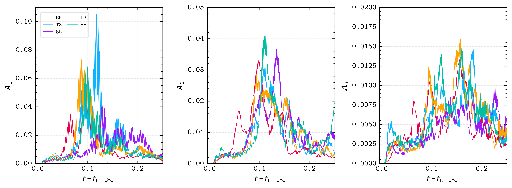<br />
图注：Evolution of the normalised azimuthal Fourier amplitudes of the density for $m=1$ (left panel), $m=2$ (middle panel) and $m=3$ (right panel). Note the scale difference on the $y$-axis.<br />
对应解读：“建议重点查看的图表”第4项与“关键图表逐图导读”图3：方位模振幅随时间演化，比较 m=1、m=2、m=3 的增长、饱和和衰减。<br />
入选理由：这是判断低 T/|W| 不稳定性是否在所有物态方程模型中出现、何时出现以及主导方位模如何变化的核心证据。相比密度切片图，它以时间序列直接量化非轴对称模幅，更适合支撑日报中关于起始时间、主导模切换和持续时间的解读。<br />
来源与置信度：\(arxiv_source\)；high；\(arxiv_source\) / main.tex:figure[6]</p>
<p><strong>Fig05</strong><br />
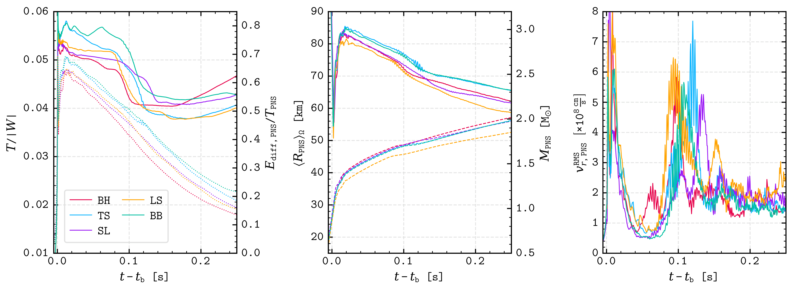<br />
图注：Left panel: evolution of the ratio between rotational and gravitational energy, $T/|W|$, of the \(\gls{PNS}\) (solid) and degree of differential rotation $E_\textnormal{diff}/E_\textnormal{rot}$ (dotted). Middle panel: \(\gls{PNS}\) average radius (solid) and mass (dashed). Right panel: average residual of the radial velocity inside of the \(\gls{PNS}.\)<br />
对应解读：“建议重点查看的图表”第2项：原中子星结构随时间演化；同时对应模型比较段落中 T/|W|、PNS 半径、质量和收缩差异。<br />
入选理由：该图同时给出 T/|W|、差分旋转能量比例、PNS 平均半径、质量以及径向速度残差，是连接物态方程差异、PNS 收缩和低 T/|W| 不稳定性条件的关键图。它能帮助判断频率和模演化差异是否来自不同 EOS 导致的 PNS 结构差异。<br />
来源与置信度：\(arxiv_source\)；high；\(arxiv_source\) / main.tex:figure[5]</p>
<p><strong>Fig12</strong><br />
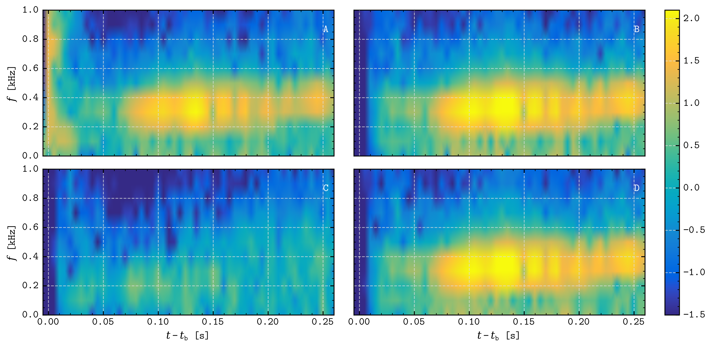<br />
图注：Spectrograms of the \(\gls{GW}\) strains measured at the equator (panels \(\textbf{A}\): $+$ polarization, and \(\textbf{C}\): $\times$ polarization) and along the polar axis (panels \(\textbf{B}\): $+$ polarization, and \(\textbf{D}\): $\times$ polarization) for model \(\texttt{SL}.\)<br />
对应解读：“建议重点查看的图表”第5项与“关键图表逐图导读”图4：引力波时频图，检查准周期信号与非轴对称模增强的同步关系。<br />
入选理由：该图直接展示引力波应变的时频谱，能够区分反弹阶段宽频信号和后期低 T/|W| 不稳定性驱动的准周期频带。虽然只展示 SL 模型，但它最清楚地呈现日报强调的频率漂移、谱功率增强和观测方向/极化差异。<br />
来源与置信度：\(arxiv_source\)；high；\(arxiv_source\) / main.tex:figure[12]</p>
<p><strong>Fig11</strong><br />
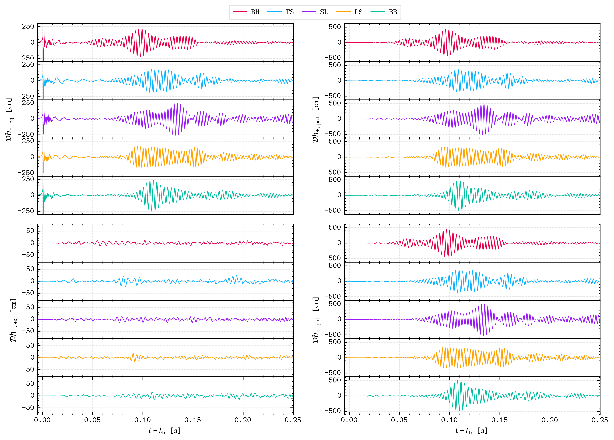<br />
图注：\(\gls{GW}\) strains emitted by a source at a distance $\mathcal{D}$. The top and bottom left panels show the strains measured at the equator for the $+$ and $\times$ polarisations, respectively. The top and bottom right panels show the corresponding polarisations measured along the polar axis. Each panel contains results from models \(\texttt{BH},\) \(\texttt{TS},\) \(\texttt{SL},\) \(\texttt{LS},\) and \(\texttt{BB}.\)<br />
对应解读：“建议重点查看的图表”第5项：引力波时域波形；对应关键图表导读中要求比较不同物态方程模型的 GW 信号。<br />
入选理由：该图把五个 EOS 模型的引力波应变按赤道和极向、+ 与 × 极化同时展示，适合比较不同物态方程下信号振幅和准周期结构的模型间差异。它与 Fig12 的时频图互补，一个强调全模型波形比较，一个强调谱特征。<br />
来源与置信度：\(arxiv_source\)；high；\(arxiv_source\) / main.tex:figure[11]</p>
<p><strong>Fig02</strong><br />
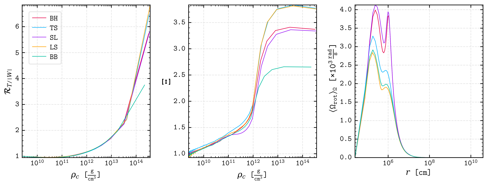<br />
图注：Normalised rotational parameter, $\mathcal{R}_{T/|W|}$, (left panel), homology deviation parameter, $\Xi$ (middle) as a function of the central density, $\rho_c$. Right panel: radial profile of the angle-averaged rotational frequency at core bounce.<br />
对应解读：“建议重点查看的图表”第3项与“关键图表逐图导读”图2：角速度剖面、旋转参数和反弹时结构诊断。<br />
入选理由：该图包含归一化旋转参数、同源偏离参数随中心密度变化，以及反弹时角平均旋转频率径向剖面。它直接支撑日报中关于差分旋转、共转点条件和不同 EOS 是否改变剪切层位置的讨论。<br />
来源与置信度：\(arxiv_source\)；high；\(arxiv_source\) / main.tex:figure[2]</p>
<p><strong>Fig09</strong><br />
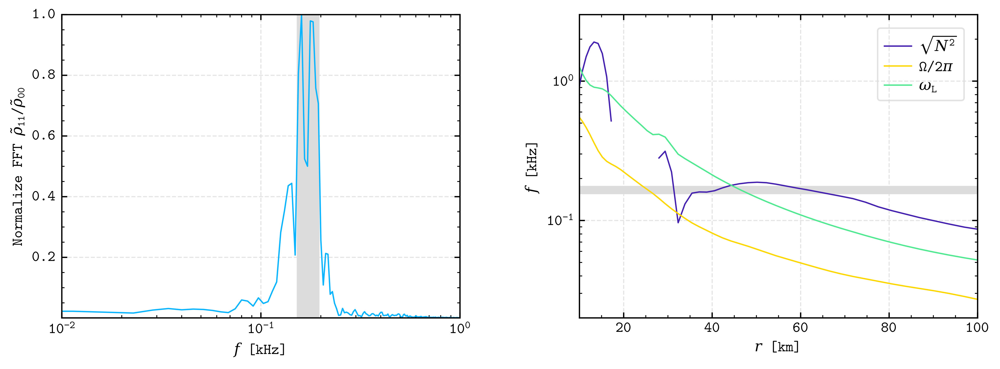<br />
图注：Left panel: normalised Fourier transform of the $\tilde{\rho}_{11}/\tilde{\rho}_{00}$ averaged between $r=\unit[25]{km}$ and $r=\unit[45]{km}$ for the time interval $\unit[75-170]{ms}$ for model \(\texttt{TS}.\) The shaded rectangle represents the \(\gls{FWHM},\) computed from the locations at which the normalised Fourier transform is equal to half of its maximum value. Right panel: propagation diagram of the equatorial profiles of rotation (yellow), Brunt--Väisälä (blue), and Lamb (green) frequencies at $\unit[110]{ms}$. The band represents the \(\gls{FWHM}\) of the dominant frequency of the mode $(1,1)$.<br />
对应解读：“建议重点查看的图表”第7项和第8项的部分内容：主导模频率、FWHM、传播图以及共转/浮力/Lamb 频率诊断。<br />
入选理由：虽然不是全模型的频率—紧致度相关图，但它给出 dominant mode 的傅里叶峰、半高全宽以及与旋转、Brunt–Väisälä 和 Lamb 频率的传播图对照，是检验低 T/|W| 模式物理来源和频率识别稳健性的最好候选图之一。<br />
来源与置信度：\(arxiv_source\)；high；\(arxiv_source\) / main.tex:figure[9]</p>
<h4 id="_71">强相关工作</h4>
<p>这篇工作与早期关于旋转核心坍缩引力波、原中子星非轴对称不稳定性和低 \(T/|W|\) 模的研究直接相连。可检索关键词包括“low \(T/|W|\) instability core-collapse supernova”, “rotating core collapse gravitational waves”, “proto-neutron star spiral modes”, “non-axisymmetric instability differential rotation”。这些工作通常强调差分旋转、共转点和 \(m=1\) 螺旋模的作用，而本文的新意在于把比较重点放到有限温核物态方程上，并同时考察引力波与中微子调制。</p>
<p>它也与核物态方程约束领域相连，包括冷中子星半径、最大质量、潮汐形变以及有限温超新星物态方程表。这里存在一个长期张力：冷中子星观测约束的是低温β平衡物质，而核心坍缩探测的是高温、非β平衡、富轻子物质。检索关键词可用“finite-temperature nuclear equation of state core collapse”, “proto-neutron star oscillations equation of state”, “supernova neutrino gravitational wave EOS constraints”。相反或保守观点通常会强调旋转前身星稀有、波形随机性强、三维输运和磁场系统误差仍大，因此单事件物态方程反演必须非常谨慎。</p>
<p><strong>相似工作</strong>：<br />
- https://arxiv.org/abs/2605.28944<br />
- https://ui.adsabs.harvard.edu/search/q=%22low%20T%2F%7CW%7C%20instability%22%20%22core-collapse%20supernova%22<br />
- https://ui.adsabs.harvard.edu/search/q=%22rotating%20core%20collapse%22%20%22gravitational%20waves%22%20%22proto-neutron%20star%22</p>
<p><strong>基础理论 / 方法工作</strong>：<br />
- https://ui.adsabs.harvard.edu/search/q=%22non-axisymmetric%20instability%22%20%22differential%20rotation%22%20%22T%2F%7CW%7C%22<br />
- https://ui.adsabs.harvard.edu/search/q=%22finite-temperature%20equation%20of%20state%22%20%22core%20collapse%22<br />
- https://ui.adsabs.harvard.edu/search/q=%22proto-neutron%20star%20oscillations%22%20%22gravitational%20waves%22</p>
<p><strong>相反观点 / 张力线索</strong>：<br />
- https://ui.adsabs.harvard.edu/search/q=%22stellar%20evolution%22%20%22core%20angular%20momentum%22%20%22core-collapse%20supernova%22<br />
- https://ui.adsabs.harvard.edu/search/q=%22magnetorotational%20core-collapse%20supernova%22%20%22gravitational%20waves%22%20%22equation%20of%20state%22</p>
</details>
<h3 id="8-delayed-radio-flares-in-tidal-disruption-events-from-star-disk-collision-outflows">8. Delayed Radio Flares in Tidal Disruption Events from Star-Disk Collision Outflows</h3>
<ul>
<li>来源：arXiv / astro-ph.HE</li>
<li>链接：https://arxiv.org/abs/2605.28928v1</li>
<li>作者：Itai Linial, Brian D. Metzger, Andrei M. Beloborodov</li>
<li>评分：novelty 8/10，importance 7/10，relevance 8/10，final 8.65/10</li>
<li>推荐理由：提出TDE晚期射电耀发的新机制：TDE盘与既有EMRI恒星反复碰撞驱动延迟外流，可解释多年后慢速大质量射电外流；属于高能瞬变/吸积物理，模型新颖且与观测现象直接相关。</li>
</ul>
<p><strong>中文题目</strong>：潮汐瓦解事件中由恒星—盘碰撞外流产生的延迟射电耀发</p>
<p><strong>做了什么</strong>：这篇论文试图解释一类越来越常见的潮汐瓦解事件：光学或红外峰值过去数年后，射电辐射才开始明显上升，而且推断出的外流速度较慢、质量较大。作者提出，延迟不是因为喷流晚启动或离轴喷流后来进入视线，而是因为潮汐瓦解事件形成的初始致密吸积盘需要经过黏滞扩展，几年后才碰到黑洞附近原本存在的极端质量比旋近系统中的恒星轨道。恒星反复穿盘会剥离盘物质和恒星表层物质，产生速度约为轨道速度的亚相对论外流，随后这些外流撞击核周介质或早期抛射物，产生延迟射电亮化。论文建立了一个含盘扩展、碰撞剥离和质量损失的时间依赖模型，说明在合理参数下可在数年延迟后抛出约 \(10^{-3}\) 到 \(1\,M_\odot\) 的物质，动能可达 \(10^{51}\,\mathrm{erg}\)。</p>
<p><strong>为什么重要</strong>：晚期射电再亮化正在成为潮汐瓦解事件研究中的一个难题：若外流质量达到 \(0.01\) 到 \(0.1\,M_\odot\)，速度却只有 \(0.02c\) 左右，那么传统的相对论喷流、离轴喷流或吸积态转变模型并不总是自然。这篇文章的重要性在于，它把延迟时间解释为吸积盘的径向扩展时间，而不是中心引擎突然重新启动的时间；同时把射电外流和黑洞附近长期存在的恒星动力学结构联系起来。</p>
<p><strong>理论 / 观测 / 仪器方法价值</strong>：理论上，论文给出了一种把潮汐瓦解盘演化、极端质量比旋近系统和准周期爆发现象连接起来的机制。观测上，它提供了可检验的预言：延迟射电耀发应偏好存在近黑洞恒星轨道、可能也出现准周期爆发的星系核；外流速度应接近碰撞半径处的开普勒速度；射电峰值时间还会受到核周密度和外流质量分布影响。方法上，它强调需要把晚期射电数据与早期光学事件、可能的 \(X\) 射线准周期信号和主星系核环境一起建模。</p>
<p><strong>为什么应该关注</strong>：如果你关心潮汐瓦解事件的能量预算、喷流判据、黑洞近旁恒星动力学，或未来用电磁信号寻找极端质量比旋近系统，这篇文章值得读。它不是给一个单一事件做经验拟合，而是提出一种可产生大质量、慢速、延迟外流的物理通道。即使该机制只解释一部分事件，它也会改变我们对晚期射电亮化的默认解释：看到几年后的射电峰，不一定意味着喷流晚启动，也可能是在看一颗预先存在的近黑洞恒星反复撞进正在扩展的潮汐瓦解盘。</p>
<details class="paper-detail">
<summary>展开详细解读：文章讲解、背景、理论、重点章节、图表与相关工作</summary>
<h4 id="_72">文章详细讲解</h4>
<p>科学问题：近年来若干潮汐瓦解事件在光学或红外耀发之后数年才出现射电增强。这类信号的射电建模常要求一个较慢但质量不小的外流，典型速度为 \(0.02c\) 到 \(0.1c\)，质量可达 \(10^{-2}\) 到 \(10^{-1}\,M_\odot\) 甚至更高。这样的外流很难简单归因于标准相对论喷流：若是离轴喷流，需要解释为什么速度和能量分布不像常见喷流；若是吸积态转变，需要解释为何会产生大量慢速物质而不是主要释放辐射或较快喷流。论文的核心问题是：有没有一种自然给出“几年延迟、大质量、慢速外流”的机制，而且不要求中心引擎在晚期突然发生特殊转变。</p>
<p>作者怎么做：作者设想潮汐瓦解事件发生在一个本来就有极端质量比旋近系统的星系核中，即一颗恒星或致密天体在超大质量黑洞附近有稳定或缓慢演化的轨道。潮汐瓦解后形成的吸积盘起初比较致密，半径小于这颗伴星的轨道，因此不会立即相互作用。随着盘在黏滞作用下向外扩展，当盘外缘到达伴星轨道时，恒星开始周期性穿过盘。每次穿盘都会冲击、加热、剥离盘物质，也可能剥蚀恒星表层，形成速度近似为局部轨道速度的外流。作者构建了时间依赖模型，跟踪盘质量、盘外缘、碰撞半径、每次碰撞的质量剥离效率以及总外流质量。</p>
<p>关键结果：模型中延迟时间主要由潮汐瓦解盘扩展到极端质量比旋近轨道的黏滞时间决定，因此自然可以是数年量级。碰撞启动后，外流速度约为 \(v_{\rm w}\sim v_{\rm K}\)，在典型碰撞半径上可落在 \(0.02c\) 到 \(0.1c\) 的范围。根据盘黏滞参数、轨道周期和碰撞效率，累计抛射质量可从 \(10^{-3}\,M_\odot\) 到 \(1\,M_\odot\)，动能最高接近 \(10^{51}\,\mathrm{erg}\)。这足以为晚期射电再亮化供能，尤其当外流撞击核周介质或早期潮汐瓦解抛射物时。论文还区分了两种外流来源：一种以盘物质为主，另一种以被剥蚀的恒星物质为主；不同来源对应不同质量、速度和持续时间。</p>
<p>局限和下一步：模型的关键不确定性在于恒星—盘碰撞的流体力学效率、盘的真实几何厚度、黏滞扩展规律、极端质量比旋近系统的存在率，以及核周介质密度。论文采用解析或半解析方式处理这些过程，不能替代三维辐射磁流体模拟。射电发射本身也依赖微物理参数，如电子能量分数、磁场能量分数和电子谱指数，这些会和外流能量、介质密度产生退化。下一步应包括：对单次穿盘的高分辨率流体模拟、把准周期爆发候选源与晚期射电监测系统交叉匹配、以及对已有延迟射电潮汐瓦解事件做统一的外流动力学和同步辐射拟合。</p>
<h4 id="_73">背景知识</h4>
<p>潮汐瓦解事件是恒星进入超大质量黑洞潮汐半径内后被拉碎、部分碎片回落并形成吸积流的现象。经典图像中，回落率在峰值后近似按幂律下降，早期辐射主要在紫外、光学或软 \(X\) 射线波段出现。射电辐射通常被看作外流或喷流与周围介质相互作用的示踪，因此它不仅告诉我们中心引擎释放了多少能量，还告诉我们有多少物质被以何种速度抛出。</p>
<p>历史上，潮汐瓦解事件中的强射电源常与相对论喷流联系在一起，例如类似 Swift J1644+57 的事件。但越来越多非喷流型或弱喷流型潮汐瓦解事件也显示射电发射，且有些源在光学峰后很久才变亮。这说明射电行为可能不是单一通道：早期弱射电可以来自盘风或碰撞诱发的外流，晚期射电再亮化则可能来自新外流、外流撞上密度结构、离轴喷流减速，或外流本身存在速度分层。</p>
<p>这篇论文关注的是最难用简单喷流图像解释的子类：射电延迟为年量级，外流推断速度较低但质量不小。如果外流速度只有 \(0.02c\)，要在射电中产生可观亮度，往往需要较大的动能和较高的外部密度。若把它归因于很晚才启动的喷流，就要说明为什么喷流不是相对论的；若把它归因于离轴相对论喷流，就要解释为什么观测推断更像慢速大量物质。这正是作者提出恒星—盘碰撞外流的动机。</p>
<p>为什么现在值得重新看：一方面，射电望远镜的长期监测让光学发现后几年才变亮的潮汐瓦解事件不再容易漏掉；另一方面，准周期爆发和极端质量比旋近系统的讨论正在兴起，提示黑洞附近可能存在反复穿越吸积盘的恒星或致密天体。若这些系统在潮汐瓦解事件发生前就存在，那么潮汐瓦解盘的形成和扩展会把一个原本安静的动力学结构转化成强烈的碰撞外流源。</p>
<p>该领域一个常见误区是把“延迟射电”等同于“延迟喷流”。实际上，射电峰值时间受外流发射时间、外流速度、外部介质密度、同步自吸收和观测频率共同控制；晚峰不一定意味着晚启动。另一个误区是只用中心黑洞吸积率解释所有晚期行为，而忽略星系核内已有的恒星轨道、盘—星相互作用和局部介质结构。这篇论文的价值正是在这两个盲点之间建立联系。</p>
<h4 id="_74">基础理论 / 方法脉络</h4>
<p>基本物理图像可以从三个时间尺度开始理解：潮汐瓦解碎片形成盘的时间、吸积盘通过黏滞向外扩展的时间、以及外流与外部介质相互作用产生可观射电的时间。传统潮汐瓦解事件常强调回落率控制早期光学或 \(X\) 射线光变；本文强调的是，当盘在角动量守恒下扩展到更大半径时，它可能撞上原本在黑洞附近绕行的恒星，从而把一部分轨道能和盘物质转化为外流动能。</p>
<p>在黑洞引力势中，某一半径处的局部开普勒速度为 \(v_{\rm K}\)。如果恒星穿过盘，碰撞相对速度通常也是这个量级，除非轨道倾角很小或盘与恒星共面同向。冲击会把局部盘气体加热到高温，并把一部分物质加速到逃逸速度附近。因此本文外流速度不需要人为设定为喷流速度，而是由碰撞半径自然给出：半径越大，速度越慢；几年延迟对应较大碰撞半径，因此得到 \(0.02c\) 到 \(0.1c\) 的慢速亚相对论外流是合理的。</p>
<p>论文的模型假设包括：潮汐瓦解后存在一个随时间扩展的盘；极端质量比旋近系统的轨道在研究时间内可近似固定；当盘外缘到达轨道半径后，恒星以其轨道周期反复穿盘；每次碰撞按某个效率剥离盘质量或恒星物质；累计外流质量和动能再决定晚期射电。这里的关键量包括盘质量 \(M_{\rm d}\)、盘半径 \(R_{\rm d}\)、轨道半径 \(a\)、轨道周期 \(P\)、黏滞参数 \(\alpha\)、盘厚度比 \(H/R\)、质量剥离效率和外流速度 \(v_{\rm w}\)。</p>
<p>观测上，射电数据并不直接给出外流质量，而是通过同步辐射模型间接推断。外流扫过外部介质后形成激波，非热电子和磁场产生射电辐射；观测到的峰值通量、峰值频率、光变上升和下降斜率共同约束外流半径、速度、能量和介质密度。但这些量与微物理参数 \(\epsilon_e\)、\(\epsilon_B\) 和电子谱指数 \(p\) 有明显退化，因此“慢且重”的结论通常依赖模型假设。</p>
<p>常见系统误差包括主星系核射电背景扣除、外部介质密度非均匀、多个外流壳层叠加、同步自吸收频率估计不准，以及把一个连续外流简化成单壳层。本文理论模型的退化则主要在黏滞时间和碰撞半径之间、外流质量和碰撞效率之间、盘物质外流和恒星剥蚀外流之间。读者读这篇论文时应把它看成一个物理可行性框架，而不是已经由单个事件唯一验证的反演模型。</p>
<h4 id="_75">公式与推导</h4>
<p>第一步是潮汐瓦解发生的半径尺度。质量为 \(M_*\)、半径为 \(R_*\) 的恒星靠近质量为 \(M_\bullet\) 的黑洞时，潮汐半径可写成</p>
<div class="math-display">\[R_{\rm t}\simeq R_*\left(\frac{M_\bullet}{M_*}\right)^{1/3}.\]</div>
<p>这里 \(R_{\rm t}\) 是恒星自引力和黑洞潮汐力相当的位置。若近心距小于或接近 \(R_{\rm t}\)，恒星被撕裂，部分物质形成回落流和吸积盘。本文并不主要研究最初撕裂过程，而是以已经形成的潮汐瓦解盘为起点。</p>
<p>第二步是盘的扩展时间。用 \(\alpha\) 盘的量纲估计，半径 \(R\) 处黏滞时间为</p>
<div class="math-display">\[t_\nu(R)\simeq \frac{R^2}{\nu}\simeq \frac{1}{\alpha}\left(\frac{H}{R}\right)^{-2}\Omega_{\rm K}^{-1},\]</div>
<p>其中 \(\nu\) 是有效运动黏滞系数，\(H\) 是盘厚度，\(\Omega_{\rm K}=(GM_\bullet/R^3)^{1/2}\) 是开普勒角速度。该式说明，若 \(\alpha\) 较小或盘较薄，盘扩展到外层轨道的时间可以达到数年。</p>
<p>第三步是碰撞何时开始。若极端质量比旋近系统的轨道半长轴为 \(a\)，盘外缘 \(R_{\rm d}(t)\) 随时间增长，则碰撞启动条件可写为</p>
<div class="math-display">\[R_{\rm d}(t_{\rm coll})\simeq a.\]</div>
<p>这里 \(t_{\rm coll}\) 就是光学潮汐瓦解耀发和碰撞外流之间的内禀延迟。这个条件是本文最核心的时间尺度解释：延迟来自盘扩展，而不是喷流晚启动。</p>
<p>第四步是碰撞速度和外流速度。轨道半径 \(a\) 处的开普勒速度为</p>
<div class="math-display">\[v_{\rm K}(a)=\left(\frac{GM_\bullet}{a}\right)^{1/2}\simeq 0.067c\left(\frac{a}{10^3 r_{\rm g}}\right)^{-1/2},\]</div>
<p>其中 \(r_{\rm g}=GM_\bullet/c^2\)。若冲击把物质加速到局部逃逸量级，外流速度可参数化为</p>
<div class="math-display">\[v_{\rm w}=\eta_v v_{\rm K}(a),\]</div>
<p>其中 \(\eta_v\) 是量级为一的效率因子。半径在 \(10^3 r_{\rm g}\) 到 \(10^4 r_{\rm g}\) 时自然得到 \(0.02c\) 到 \(0.1c\) 的外流速度。</p>
<p>第五步是每次穿盘可处理的质量尺度。若恒星有效截面积约为 \(\pi R_*^2\)，盘面密度为 \(\Sigma_{\rm d}\)，则单次几何扫掠的盘质量量级为</p>
<div class="math-display">\[\Delta M_{\rm sweep}\sim \pi R_*^2\Sigma_{\rm d}.\]</div>
<p>实际外流质量可写成 \(\Delta M_{\rm w}\sim \eta_m\Delta M_{\rm sweep}\)，其中 \(\eta_m\) 表示冲击加热、喷出和几何校正的综合效率。若恒星自身也被剥蚀，还需要加入 \(\Delta M_{*,\rm abl}\) 这一项。</p>
<p>第六步是多次碰撞的累计外流。若轨道周期为 \(P\)，在时间区间 \([t_{\rm coll},t]\) 内外流质量近似为</p>
<div class="math-display">\[M_{\rm w}(t)\simeq \int_{t_{\rm coll}}^t \frac{\Delta M_{\rm w}(t')}{P}\,dt'.\]</div>
<p>这个表达式把单次碰撞的流体问题转化成长期质量损失率问题。盘面密度随盘扩展和消耗变化，因此 \(\Delta M_{\rm w}\) 通常不是常数。</p>
<p>第七步是外流动能。累计动能为</p>
<div class="math-display">\[E_{\rm w}\simeq \frac{1}{2}M_{\rm w}v_{\rm w}^2.\]</div>
<p>若 \(M_{\rm w}=0.1\,M_\odot\) 且 \(v_{\rm w}=0.05c\)，则 \(E_{\rm w}\) 可达约 \(2\times10^{50}\,\mathrm{erg}\)。这正是晚期射电事件所需的能量量级。</p>
<p>第八步是射电峰值的动力学尺度。外流扫过外部介质密度 \(n\) 后，当扫掠质量接近外流质量时显著减速，减速半径可估计为</p>
<div class="math-display">\[R_{\rm dec}\simeq \left(\frac{3M_{\rm w}}{4\pi n m_p}\right)^{1/3},\]</div>
<p>其中 \(m_p\) 是质子质量。对应的观测时间为 \(t_{\rm dec}\sim R_{\rm dec}/v_{\rm w}\)。因此射电峰值时间既包含碰撞启动延迟，也包含外流传播和减速时间。</p>
<p>第九步是同步辐射可观测量。若激波后磁场为 \(B\)，非热电子数为 \(N_e\)，电子谱指数为 \(p\)，在光薄频段的谱通量可写成量纲形式</p>
<div class="math-display">\[F_\nu\propto \frac{N_e B^{(p+1)/2}R^3}{D_L^2}\nu^{-(p-1)/2},\]</div>
<p>其中 \(D_L\) 是光度距离，\(R\) 是发射区半径，\(\nu\) 是观测频率。该式说明射电通量会同时依赖外流动力学、外部密度和微物理参数，因此仅凭单频光变难以唯一反演外流质量。</p>
<p>第十步是拟合诊断。对多频射电数据 \(F_{\nu_i}^{\rm obs}(t_j)\)，常用高斯近似似然写为</p>
<div class="math-display">\[\ln \mathcal{L}=-\frac{1}{2}\sum_{i,j}\left[\frac{F_{\nu_i}^{\rm obs}(t_j)-F_{\nu_i}^{\rm mod}(t_j;\boldsymbol{\theta})}{\sigma_{ij}}\right]^2,\]</div>
<p>其中 \(oldsymbol{\theta}\) 包含 \(M_{\rm w}\)、\(v_{\rm w}\)、\(n\)、\(\epsilon_e\)、\(\epsilon_B\)、\(p\) 和碰撞延迟等参数。若模型残差在不同频段同号或峰值时间系统性偏移，说明单一外流壳层或均匀介质假设可能失效。</p>
<h4 id="_76">模型拟合 / 应用方法</h4>
<p>这类工作的拟合可以分成两层。第一层是动力学模型拟合：给定黑洞质量、盘黏滞参数、盘厚度、初始盘质量、极端质量比旋近轨道半径和周期，计算盘何时扩展到轨道位置、每次碰撞剥离多少物质、外流速度和累计外流能量。第二层是射电辐射拟合：把外流作为一个或多个壳层，与核周介质相互作用，预测多频光变和谱能量分布，再与观测通量比较。</p>
<p>拟合量中最关键的是延迟时间、外流速度、外流质量和外部密度。延迟时间可以来自盘扩展，也可以来自外流减速，因此必须区分内禀启动时间和射电峰值时间。外流速度通常由射电源半径或峰值时间间接推断，若缺少甚长基线干涉测量或密集多频覆盖，速度与密度之间会退化。外流质量则通过动能和速度反推，对微物理参数尤其敏感。</p>
<p>似然函数通常基于多频通量的残差，必要时还要处理上限数据、宿主星系核背景和仪器标定误差。对非探测点不能简单丢弃，因为早期射电上限对“是否存在早期喷流”非常关键。若某模型能解释晚期峰值却违反早期上限，说明它可能需要更强同步自吸收、更晚启动，或更低早期外流能量。</p>
<p>参数退化是读者需要特别注意的。较大的外流质量配合较低外部密度，和较小外流质量配合较高外部密度，可能产生相似峰值时间；较低 \(\epsilon_B\) 可被较高动能部分补偿；碰撞半径增大会降低 \(v_{\rm w}\)，但也改变黏滞延迟。盘主导外流和恒星剥蚀主导外流在射电上可能并不容易区分，除非能从持续时间、速度分布或化学组成获得额外信息。</p>
<p>模型可能失败的地方也很明确。如果延迟射电事件显示强相对论运动、高亮温度或喷流准直证据，那么恒星—盘碰撞慢速外流不是首选解释。如果观测到射电亮化前存在强 \(X\) 射线喷流活动，延迟喷流模型会更直接。相反，如果事件有慢速大质量外流、没有早期强喷流、又出现准周期 \(X\) 射线爆发或其他近黑洞周期性信号，那么本文模型会变得更有吸引力。</p>
<h4 id="_77">重点章节 / 结果段落怎么读</h4>
<p>数据和现象动机部分应先读。作者会从已知延迟射电潮汐瓦解事件出发，强调这些事件需要解释的不是单纯“晚亮”，而是“晚亮加慢速加大质量”。读者应关注作者列出的典型速度、外流质量和延迟时间，因为这些数值决定传统喷流解释是否紧张。</p>
<p>物理图像部分是全文关键。这里作者提出潮汐瓦解盘先形成在较小半径，随后黏滞扩展到预先存在的极端质量比旋近轨道。读者应检查延迟时间是否真正等于合理盘参数下的黏滞时间，而不是通过过度调参得到。</p>
<p>时间依赖模型部分需要仔细读。重点是盘质量和半径如何随时间演化、碰撞损失项如何写入、每次穿盘剥离盘物质还是恒星物质、效率参数取值范围是否物理可信。若论文给出不同黏滞参数、轨道周期和碰撞效率的参数扫描，应优先看这些图。</p>
<p>射电解释部分要把动力学结果和观测需求对应起来。读者应看作者如何从 \(M_{\rm w}\)、\(v_{\rm w}\) 和 \(E_{\rm w}\) 论证能够解释晚期射电，而不是只看外流能量是否够大。外流速度分布、外部介质密度和同步自吸收都会影响射电峰值。</p>
<p>讨论和预言部分最适合判断论文价值。作者把延迟射电潮汐瓦解事件与极端质量比旋近系统、准周期爆发联系起来，但也指出明亮射电耀发和可探测准周期爆发不一定完全重合。读者应关注哪些预言可以被未来观测证伪，例如准周期信号、外流速度范围、延迟时间与黑洞质量或轨道半径的关系。</p>
<h4 id="_78">建议重点查看的图表</h4>
<ol>
<li>
<p>盘扩展半径随时间的图：应检查 \(R_{\rm d}(t)\) 何时达到轨道半径 \(a\)，以及不同 \(\alpha\)、\(H/R\) 对延迟时间的影响。</p>
</li>
<li>
<p>外流质量或质量损失率随时间的图：应看碰撞启动后 \(\dot M_{\rm w}\) 是短暂尖峰还是长期平台，并区分盘物质主导和恒星剥蚀主导两种情形。</p>
</li>
<li>
<p>外流速度和动能的参数空间图：重点看 \(v_{\rm w}\) 是否自然落在观测推断的 \(0.02c\) 到 \(0.1c\)，以及 \(E_{\rm w}\) 是否达到 \(10^{49}\) 到 \(10^{51}\,\mathrm{erg}\)。</p>
</li>
<li>
<p>黏滞参数、轨道周期和碰撞效率的扫描图：应检查可行区域是否很窄。如果只有极端 \(\alpha\) 或极高效率才能解释观测，模型可信度会下降。</p>
</li>
<li>
<p>与观测延迟射电事件的对比图或表：应看每个事件的延迟、速度、外流质量和能量是否都能同时覆盖，而不是只覆盖其中一个量。</p>
</li>
<li>
<p>若有射电光变示意或模型曲线：应看多频峰值时间、峰值通量和上升斜率是否与慢速外流一致，并留意早期非探测上限是否被违反。</p>
</li>
<li>
<p>稳健性或附录诊断：应检查作者对盘厚度、轨道倾角、恒星半径、外部介质密度和微物理参数的敏感性分析。</p>
</li>
</ol>
<h4 id="_79">关键图表逐图导读</h4>
<p>图 1：通常应是物理示意图或时间线。横向可理解为从潮汐瓦解、盘形成、盘扩展、触碰极端质量比旋近轨道，到反复恒星—盘碰撞和射电外流。读图重点是区分三个时间：光学耀发时间、碰撞启动时间和射电峰值时间。陷阱是把图中的射电延迟全部理解成外流传播时间；本文强调的是盘扩展也能贡献主延迟。</p>
<p>图 2：若论文给出盘半径和盘质量随时间演化，横轴多半是时间，纵轴可能是 \(R_{\rm d}\)、\(M_{\rm d}\) 或相关无量纲量。模型线代表不同黏滞参数、盘厚度或初始盘条件。应看 \(R_{\rm d}\) 与水平的轨道半径 \(a\) 相交的位置，这个交点决定 \(t_{\rm coll}\)。陷阱是只看最终盘半径，而忽略在碰撞开始前盘质量是否已经衰减到太低。</p>
<p>图 3：若是外流质量损失率和累计质量图，横轴应为时间，纵轴为 \(\dot M_{\rm w}\) 或 \(M_{\rm w}\)。不同颜色可能代表盘物质主导、恒星剥蚀主导或不同碰撞效率。应关注碰撞启动后的质量损失是否足以达到观测所需的 \(10^{-2}\) 到 \(10^{-1}\,M_\odot\)。陷阱是累计质量看起来很大，但如果对应速度过低或持续时间过长，射电峰值可能不匹配。</p>
<p>图 4：若是参数空间图，坐标轴可能为轨道周期、黏滞参数、碰撞效率或轨道半径，颜色表示外流能量、质量或延迟时间。读图时应找出同时满足年量级延迟、\(0.02c\) 到 \(0.1c\) 速度和足够动能的交集区域。陷阱是单独满足某个观测量的区域很大，但多条件交集可能明显缩小。</p>
<p>图 5：若是与已知延迟射电潮汐瓦解事件对比的图，坐标轴可能是延迟时间和外流速度，或外流质量和能量。数据点代表观测事件，模型带代表本文机制的可达范围。应看模型带是否覆盖慢速大质量事件，而不只是覆盖普通射电潮汐瓦解事件。陷阱是观测点本身有模型依赖误差，尤其是微物理参数和外部密度导致的系统不确定性可能大于统计误差。</p>
<p>图 6：若有射电光变预测，横轴为观测时间，纵轴为不同频率下的 \(F_\nu\)。应检查模型是否同时解释多频峰值和谱斜率；如果只有单频匹配，不足以区分碰撞外流、离轴喷流和密度跃迁。读图时还要看早期上限点，任何在早期过亮的模型都应被排除。</p>
<h4 id="_80">论文原图 / 可嵌入图片</h4>
<p><strong>Fig06</strong><br />
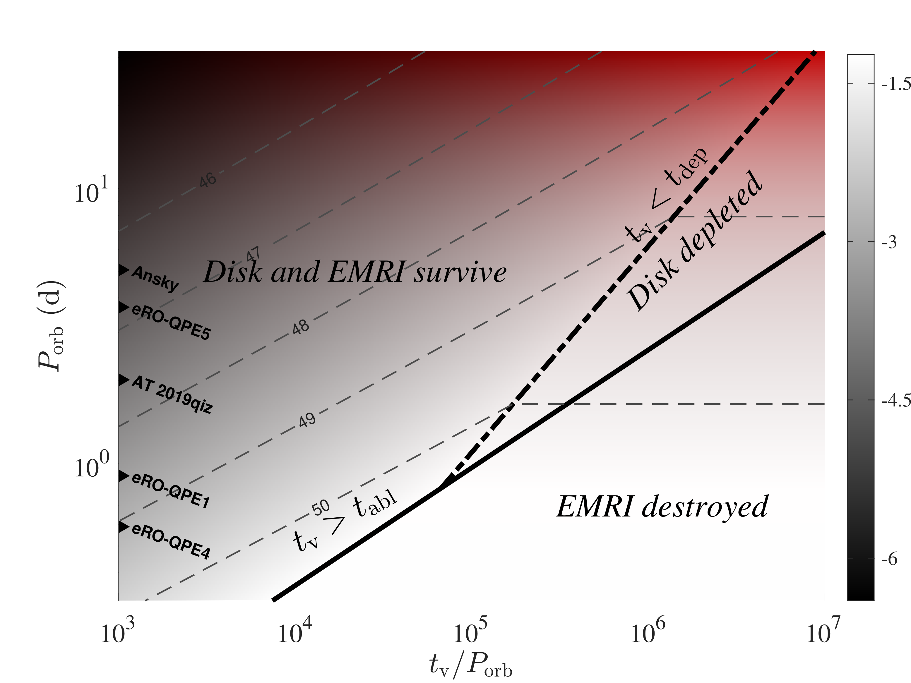<br />
图注：Regimes of star-disk interaction outcomes, as a function of orbital period and the disk's viscous time. Here we assume $f_{\rm d}=0.1$, $f_{\rm ub}^\star=0.1$, $f_{\rm ub}^{\rm d}=0.5$, and $m_\star=m_\star^{\rm tde}=0.5 \, \rm M_\odot$. Below the solid black line, the ablation time is shorter than the disk spreading time, and the EMRI is destroyed (and the disk survives). Below the dash-dotted line, the disk depletion time is shorter than $t_{\rm v}$ and the disk is mostly depleted (and the EMRI survives). The color map intensity (dark-bright) represent the outflow mass, as indicated in the color bar, $\log_{\rm 10}(m_{\rm w,tot}/\rm M_\odot)$. The colormap saturation indicates the contribution of disk vs. EMRI mass to the outflow (redder color means relatively more disk mass). Dashed contours show the outflow kinetic energy, $\log_{10}(E_{\rm w}/\rm erg)$. Orbital periods of a few known QPE sources are shown on the left.<br />
对应解读：“建议重点查看的图表”第3、4、7项，以及“关键图表逐图导读”中参数空间图/图4相关段落。<br />
入选理由：这张图直接给出轨道周期与盘黏滞时间参数空间中的外流总质量、盘物质/恒星剥蚀贡献、动能等核心诊断量，可同时检验年量级延迟、质量达到观测需求、能量是否可达10^49–10^51 erg，以及可行区域是否很窄，是判断模型物理可行性的最高价值图。<br />
来源与置信度：\(arxiv_source\)；high；\(arxiv_source\) / main.tex:figure[6]</p>
<p><strong>Fig07</strong><br />
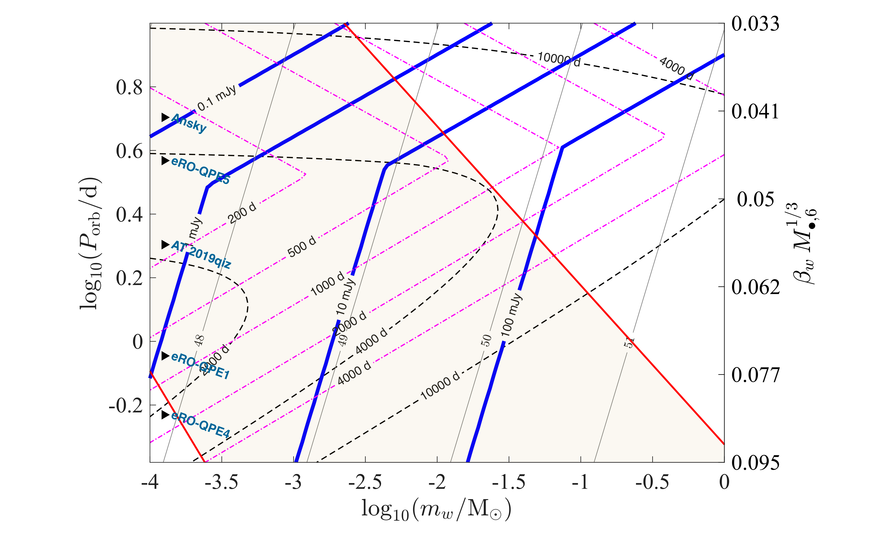<br />
图注：Contours of peak 3 GHz radio flux (for $d = 100$ Mpc; {\(\it\) solid blue}), peak timescale (measured since the outflow was launched; {\(\it\) dot-dashed magenta}), and the time of peak flux (measured since the TDE; {\(\it\) dashed black}) of radio flares from EMRI-disk collisions, as a function of the EMRI orbital period $P_{\rm orb}$ and ejecta mass $m_{\rm w}$. Thin gray lines show the ejecta kinetic energy $\log_{10}(E_{\rm k}/\rm erg)$, while triangles on the left mark observed recurrence times of X-ray QPE sources (interpreted within the EMRI-disk collisions model). The ejecta velocity is assumed to equal the EMRI orbital speed, as shown on the right vertical axis. The highlighted region between the two red contours brackets the expected ejecta mass $m_{\rm w}(P_{\rm orb})$, following Eq.~\(\eqref{eq:m_w_tot_disk}\) and $\eqref{eq:m_w_tot_star}$ for a range of $f_{\rm ub}^{\rm \star}\lesssim0.5$ (fixing $f_{\rm ub}^{\rm d}=0.5$, $m_\star=m_\star^{\rm tde}=1\,\rm M_\odot$). The gaseous medium surrounding the black hole is assumed to be earlier ejecta launched promptly after the TDE of mass $m_{\rm w}^{\rm e} = 0.25\, \rm M_\odot$, spherically expanding with velocity $v_{\rm w}^{\rm e} = 5\times 10^3 \, \rm km\,s^{-1}$. The delayed outflow is assumed to be launched once the spreading TDE disk reaches the EMRI orbit, with a delay $\Delta t_{\rm w} = t_{\rm v}=10^3 \, P_{\rm orb}$ after the TDE has occurred. Standard shock parameters are assumed: $\epsilon_e=0.1 \,, \epsilon_{\rm B}=0.01$, $p = 2.5$.<br />
对应解读：“建议重点查看的图表”第3、5、6项，以及“关键图表逐图导读”中射电光变预测/图6和模型拟合段落。<br />
入选理由：这张图把EMRI轨道周期、外流质量、外流速度、动能、3 GHz峰值通量、峰值时间和相对TDE的峰值延迟放在同一参数空间中，最能连接动力学模型与可观测射电再亮化；还能检查速度是否落在0.02c–0.1c及早/晚峰值时间是否合理。<br />
来源与置信度：\(arxiv_source\)；high；\(arxiv_source\) / main.tex:figure[7]</p>
<p><strong>Fig01</strong><br />
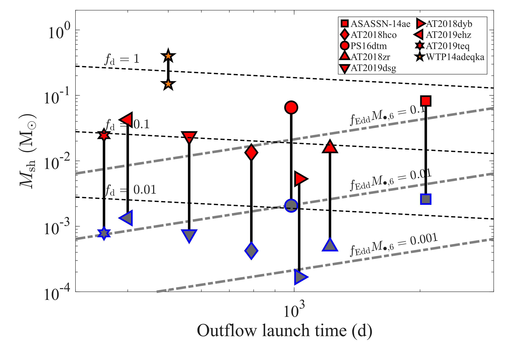<br />
图注：Shocked mass versus launch times of 9 TDEs exhibiting delayed radio flares (8 from \(\citealt{Cendes+24}\) and the remaining one from \citealt{Golay+25}). Shocked masses $M_{\rm sh}=2E_{\rm k}/v_{\rm w}^2$ were derived from the equipartition analysis of \(\cite{Cendes+24}.\) Blue and red markers correspond to a range of assumptions on the microphysical equipartition parameters, with $\epsilon_{\rm e}=\epsilon_{\rm B}=0.1$ (blue markers), and $\epsilon_{\rm e}=10^{-2}$, $\epsilon_{\rm B}=10^{-3}$ (motivated by first principle simulations of magnetic field amplification and electron acceleration in non-relativistic shocks, e.g., \(\citealt{Caprioli+14}\); red markers), scaling as $M_{\rm ej} \propto \epsilon_{\rm e}^{-0.5} \epsilon_{\rm B}^{-8/17}$ \(\citep\)[e.g.,][]{BarniolDuran&amp;Piran13,Matsumoto&amp;Piran21}. For WTP14adeqka, VLBA observations and the measurement of the synchrotron cooling break frequency lift some of the degeneracies, and the range of values correspond to the uncertainty in expansion velocity. The total remaining TDE disk mass as a function of time is plotted in black dashed lines, taking an initial mass $m_{\rm d,0}=f_{\rm d}({\rm M_\odot}/2)$, initial spreading time $t_{\rm v,0}=50 \, \rm d$ and $m_{\rm d} \propto t^{-1/3}$. Dashed-dotted gray lines show the total disk mass at time $t$, assuming that $\dot{m}_{\rm d}(t)= f_{\rm Edd} \dot{M}_{\rm Edd}$ where $\dot{M}_{\rm Edd}$ is the Eddington accretion rate of an SMBH of mass $10^6 \, \rm M_\odot$.<br />
对应解读：“建议重点查看的图表”第5项，以及“关键图表逐图导读”中与已知延迟射电TDE对比/图5相关段落。<br />
入选理由：这张图直接展示9个延迟射电TDE的发射/启动时间与所需受激质量，并明确标出微物理参数假设导致的系统差异，是检验本文机制能否覆盖真实慢速大质量事件的关键观测对比图。<br />
来源与置信度：\(arxiv_source\)；high；\(arxiv_source\) / main.tex:figure[1]</p>
<p><strong>Fig05</strong><br />
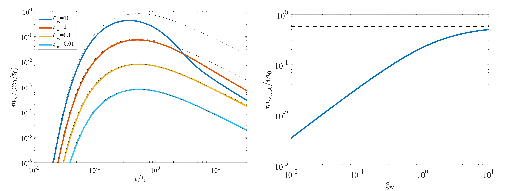<br />
图注：Top: Time evolution of the outflow ejection rate $\dot{m}_{\rm w}$ for different values of the dimensionless mass-loss efficiency $\xi_{\rm w}$ (Eq.~\eqref{eq:xi_w_gen}) indicated in the legend. All models assume $k=1$, corresponding to an outflow dominated by ejected disk material and negligible stellar ablation. Dashed lines show the estimated mass loss one obtains, neglecting the back reaction of collisional mass-loss on the disk evolution (Eq.~\eqref{eq:mdot_out_unperturbed_disk}). Bottom: The total integrated outflow mass as a function of $\xi_{\rm w}$. The total ejection is limited to $m_0(a_0/r_0)^{-1/2}$ (dashed horizontal line) -- the remaining disk mass once its outer radius approaches the EMRI orbit at $a_0$.<br />
对应解读：“建议重点查看的图表”第2项，以及“关键图表逐图导读”中外流质量损失率和累计质量/图3相关段落。<br />
入选理由：这张图给出碰撞启动后外流质量损失率随时间的演化和总外流质量随效率参数的变化，能直接判断外流是短暂尖峰还是持续释放，以及盘物质主导情形下是否能达到10^-2–10^-1太阳质量量级。<br />
来源与置信度：\(arxiv_source\)；high；\(arxiv_source\) / main.tex:figure[5]</p>
<p><strong>Fig04</strong><br />
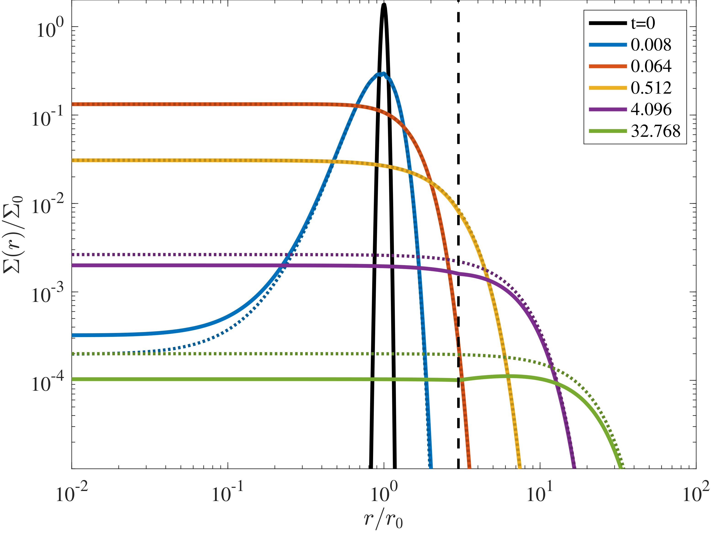<br />
图注：Spreading disk surface density evolution, including the effects of mass-loss from star-disk collisions. A narrow Gaussian ring of mass centered at $r_0$ begins to viscously spread at time $t=0$ (solid black line). Solid lines show the disk evolution in the presence of a weak sink term at $a_0=3r_0$ due to star-disk collisions (vertical black dashed line). The disk evolution in the absence of a sink term is shown as dotted lines (the analytical Green's function, Eq.~\eqref{eq:Sigma_r_t_Green}). Time is measured in units of $t_0=r_0^2/\nu_0$, where $\nu_0$ is the (constant) kinematic viscosity.<br />
对应解读：“建议重点查看的图表”第1项，以及“关键图表逐图导读”中盘扩展半径/盘质量演化/图2相关段落。<br />
入选理由：虽然图中纵轴是盘面密度而非直接的R_d(t)，但它展示了窄环盘黏滞扩展到EMRI轨道并被碰撞质量损失项削弱的过程，是理解延迟由盘扩展时间而非单纯外流传播时间决定的基础图。<br />
来源与置信度：\(arxiv_source\)；high；\(arxiv_source\) / main.tex:figure[4]</p>
<p><strong>Fig03</strong><br />
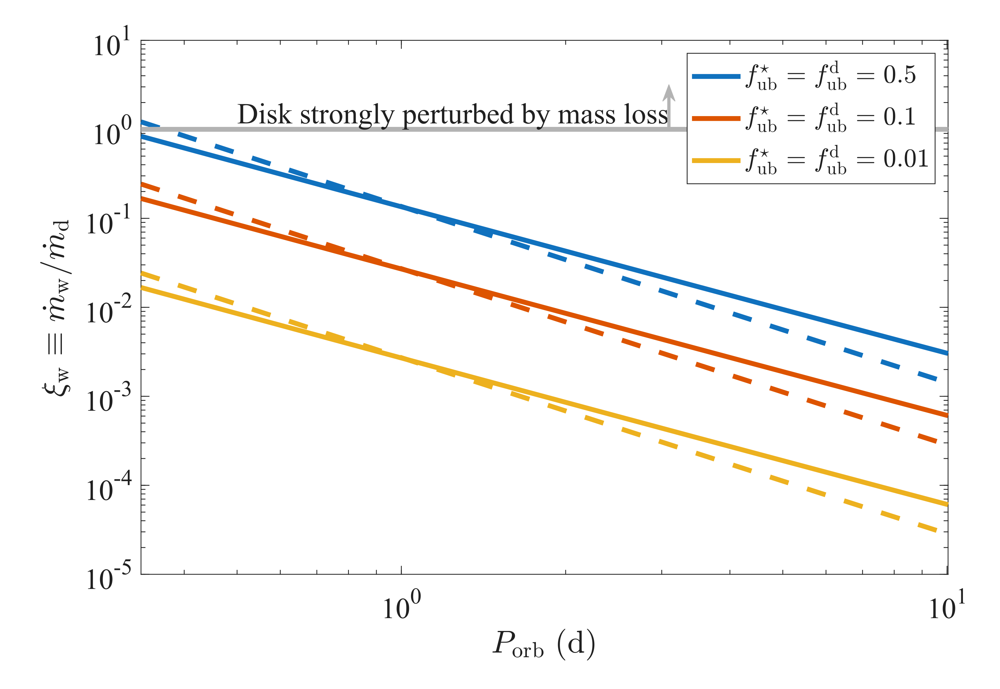<br />
图注：EMRI-disk collision-induced mass outflow rate relative to the local disk accretion rate, $\xi_{\rm w} \equiv \dot{m}_{w}/\dot{m}_{\rm d}$, as a function of EMRI orbital period. Different colors span a plausible range of values of $f_{\rm ub}^\star$ and $f_{\rm ub}^{\rm d}$ (the unbound fraction of the ablated star and shocked disk material, respectively). Solid lines correspond to a constant viscosity, $\nu=10^{19} \, \rm cm^2 \, s^{-1}$, while dashed lines assume $t_{\rm v}/P_{\rm orb} = 10^3$ (\citealt{Mummery&amp;VanVelzen24}). Here $\MBH=10^6 \, \rm M_\odot$, $m_\star=1\,\rm M_\odot$, $\eta=0.03$.<br />
对应解读：“建议重点查看的图表”第2、4项，以及模型中质量损失效率、轨道周期和盘/恒星剥蚀参数扫描相关段落。<br />
入选理由：这张图显示外流质量损失率相对本地盘吸积率的比例如何随EMRI轨道周期和未束缚质量分数变化，并比较不同黏滞处理假设，有助于评估模型是否依赖极端碰撞效率或特定轨道周期。<br />
来源与置信度：\(arxiv_source\)；high；\(arxiv_source\) / main.tex:figure[3]</p>
<h4 id="_81">强相关工作</h4>
<p>这项工作与两类文献直接相关。第一类是潮汐瓦解事件射电外流研究，包括相对论喷流事件、非相对论盘风事件和晚期射电再亮化事件。检索时可使用关键词 “tidal disruption event delayed radio flare”、“TDE radio rebrightening”、“non-relativistic outflow TDE”、“off-axis jet TDE”。这些工作提供观测约束：射电峰值时间、速度、能量和外部密度，但不同论文对微物理参数的假设可能不同，比较时要注意是否使用相同的 \(\epsilon_e\)、\(\epsilon_B\) 和介质模型。</p>
<p>第二类是黑洞近旁恒星—盘相互作用、极端质量比旋近系统和准周期爆发研究。本文机制与“恒星反复穿越吸积盘产生 \(X\) 射线或紫外准周期爆发”的想法相邻，但关注的可观测结果从短时高能爆发扩展到长期累计的慢速外流和射电发射。检索关键词可用 “star disk collision QPE”、“EMRI accretion disk collision”、“quasi-periodic eruptions tidal disruption”、“disk-star interaction galactic nucleus”。</p>
<p>潜在张力来自离轴喷流和密度结构解释。某些晚期射电亮化也可以由早期发射的快速外流撞上外部密度增强区，或由离轴喷流减速后进入视线解释。要区分这些模型，需要多频射电光变、甚长基线角尺度约束、偏振、\(X\) 射线行为和早期非探测上限。本文并不否认其他机制，而是指出对慢速、大质量、年延迟外流而言，恒星—盘碰撞提供了一条自然的非喷流通道。</p>
<p><strong>相似工作</strong>：<br />
- https://arxiv.org/abs/2605.28928</p>
<p><strong>基础理论 / 方法工作</strong>：<br />
- https://ui.adsabs.harvard.edu/abs/1988Natur.333..523R/abstract<br />
- https://ui.adsabs.harvard.edu/abs/1998ApJ...499..810C/abstract</p>
<p><strong>相反观点 / 张力线索</strong>：<br />
（未提供）</p>
</details>
<h2 id="_82">说明</h2>
<p>评分由 LLM 给出初评，再由本地阈值策略过滤；IACT、TeV 伽马射线和高能中微子天文学按重点方向处理。</p>
    </main>
  </div>
</body>
</html>
